电子书导航¶
数学的起源
关于数学的起源，流传着一些古老而神奇的传说。相传在非常非常遥远的古代，有一天，从黄河的波涛中忽然跳出一匹"龙马"来，马背上驮着一幅图，图上画着许多神秘的数学符号；后来，从波澜不惊的洛水里，又爬出一只"神龟"来，龟背上也驮着一卷书，书中阐述了数的排列方法。马背上的图叫做"河图"，龟背上的书叫做"洛书"，当"河图洛书"出现之后，数学也就诞生了。
在中国古代的许多数学著作里，都记载有"河图洛书"这个神奇的故事，不少书中还把"河图洛书"称作是"天地生成数图"，认为它揭示了数学的奥秘，有了"河图洛书"，才产生了数学研究。有一部叫做《算法统宗》的数学著作，还煞有介事地在卷首印了一幅"龙马负图"的画，画中有一个非常怪异的动物，头象龙，身子却象麒麟，口中喷出一卷数学书来……
在世界其他古代文明里，象这样把数学的起源归结为某种神灵力量的例子，也是屡见不鲜的。在古代希腊社会，就有人把数分成"善"数和"恶"数，认为数字的规律正好体现了无所不知的上帝的智慧。另外，也有人认为数学起源于人的头脑，起源于古代圣贤们超人的智力……，这些说法都是错误的，因为它们都曲解了数学起源的本质。
那么，数学是怎样产生的？它起源于何时呢？这可是些不易回答的问题，因为基本数学概念的原始积累过程，发生在人
类创造出文字来记录自己的思想之前。不过，通过考察古代文物和研究近代某些文化落后民族的生活，人们已经证实了这样一个结论：数学，同其他的自然科学一样，起源于人们的生产实践，起源于人们的生活需要，起源于人类创造性的劳动之中。
一个没有“数”的世界是难以想象的。远古时代的人类曾为此吃够了苦头。也许，在一次鲁莽的围猎中，当人们呐喊着扑上前去与兽群格斗时，却痛苦地发现他们无法对付那么多的猛兽；在一个寒冷的冬夜，人们又沮丧地发现，他们贮藏的果实快要吃光了，而冬季却似乎长得没有尽期……。严峻的生活迫使人类审慎地考察事物的数量关系，逐渐地，人们变得聪明起来了。只有在人众兽寡的场合，他们才会发出充满激情的呐喊；只有当果实堆得老高老高时，他们才会停止秋天里的采摘。也就是说，在漫长的生产、生活实践中，原始人类凭借经验的积累和直觉的帮助，逐渐朦胧地领悟了多与少的概念，逐渐能从整体上比较两类事物的多少，从而向认识事物的数量关系迈出了有意义的第一步。
随着工具的改革，对食物、衣服和武器的适当分配，氏族公社制度缓慢地形成了。人类开始更多地接触到事物的数量问题。如同幼儿开始时数不清一、二、三一样，这时的人们也还没有一、二、三的概念。这些概念是怎样产生的呢？俄国数学家巴贝宁（1849—1919 年）认为，由于人通常用一只手拿一件物品，这就把“一”从“多”的概念中分离了出来，建立了由这两个概念构成的最初的计数法。巴贝宁的解释是较为可信的，几百年前，曾经生活在巴西的保托库德部落人，就只会用“一”和“多”来计数。
2 •
在“一”的基础上，人们逐渐形成了“二”的概念。巴贝宁认为，这个概念是与双手各拿一件物品联系在一起的。要表示“三”怎么办呢？人可没有第三只手啊！这的确是一道难题，后来有人想了一个巧妙的办法，把第三件物品放在自己的脚边，于是难题也就顺利地解决了。当然，那时的人类还没有表示数的名称，他们表示数时，是靠手势及相应的身体动作。
在美国纽约的博物馆里，珍藏着一件从秘鲁出土的古代文物，名称叫基普，也就是打上了绳结的绳子。基普是干什么用的？它是古人用来记数和记事的。原来，随着时代的发展，人们需要计算越来越多的数，而人的手呢，由于经常要干别的活儿，不能老拿着物品记数或打手势，于是人们就设法用别的物体来代替要记数的事物，绳结呀，小石子呀，都成了人们记数的工具。打两个绳结，可以表示两只羊，也可以表示两把石斧。实际上，原始人类并没有意识到，当他们打绳结的时候，数学中已经发生了第一次抽象。绳结所表示的数，已经脱离了具体事物的束缚，具有更为广泛的含义，人类对数量关系的认识也就迈出了决定性的一步。
人们继续寻找更方便的方法来记数。我国古书《周易·系辞》中记载：“上古结绳而治，后世圣人，易之以书契（在骨或竹、木、石上刻字）”，也就是说，人们用刻画符号来代替结绳。这样就产生了最初的文字，产生了最初的数学符号。
比较一下几个民族的数学符号是十分有趣的，他们对于前三个自然数的写法有着惊人的一致，也许，这正好说明了他们对数的认识有着极为相似的经历。
从朦胧的“多”与“少”的概念到最初的数学符号，不是神灵展示的奇迹，也不是圣人头脑的“自由创造”，而是原始人类
· 3 ·
极其艰苦的创造性劳动的产物。为了获得这些原始的数学概念，人类至少经历了数万年的漫长岁月！
数学是研究客观世界数量关系和空间形式的科学。与数的概念的形成一样，人类关于形的概念，也经历了一个在实践基础上逐级抽象的漫长过程。
天上一个太阳，一个月亮，太阳圆圆的，月亮圆了又弯，弯了又圆。也许，远古时代的人类，正是由此获得了最原始的几何概念。天体的形状，平静的湖泊，参天的古树，这些都是原始人类司空见惯的景象，他们千百万次地观察、比较这些熟悉的事物的形状，逐渐认识了这些形状的特点，比如知道了满月和太阳的形状是相同的，而圆滑的山包与尖峭的山峰在天幕上勾勒出不同的轮廓线。再进一步，他们又用这种认识来指导自己创造性的劳动实践，制造出象太阳一样圆圆的车轮，整理出象湖面一样平平的房基……。在制造日常生活用品的长期劳动中，他们又逐渐深刻地了解了他们努力模仿的各种形状，逐渐抽象出最初的几何概念，比如在无数次来往中力求发现最短的路径时，在千万次绷紧弓弦、拉直草绳时，他们终于获得了“直线”的抽象概念。而当人们按照“三角形”的概念，建成一座规则的正四棱锥形房屋的时候，他们更是创造了一个自然界还未曾有过的几何形体。
- 4 -
在我国西安的半坡村，有一座原始村落的遗址，那里曾经居住着距今六千多年的新石器时代的人类。在这个占地约三万平方米的原始村落中心，是一座面积约一百六十平方米的长方形大屋，可能是这个氏族公社的公共活动场所，周围分布着两百间小屋，面积都在二十平方米左右，呈圆形或方形等规则的几何形状。遗址中出土了许多彩陶器皿，上面涂绘着各种圆形的、正方形的、三角形的和对称涡(wō)纹形的几何图案，精巧匀称，精彩纷呈，展示了原始人类劳动创造的数学奇观。
漫长的六千年过去了，半坡村历经沧桑，然而，遗留在这里的每一件几何形体，都以我们完全可以理解的数学语言，向我们讲述着原始人类在劳动中创造数学的动人故事……
· 5 ·
最美妙的数学发明
人类的文明发源于几条大河流域，象中国的黄河、长江，巴比伦的幼发拉底河、底格里斯河，埃及的尼罗河，印度的印度河、恒河，都是人类文化的摇篮。数学，最初也是从这些地方诞生的。
在这些江河流域，有着肥沃的河谷、富庶的牧场和漫长的海岸线，为远古时代的人类发展经济提供了得天独厚的环境，为劳动的分工和剩余产品的积累提供了有利的条件，促进了原始共产主义社会分化的过程。大约在五千年前，定居在这里的人们就已逐渐建立起城市，继而建立起国家，率先进入了奴隶制社会。
在早期奴隶制社会里，由于生产力水平低下，人们的生活在很大的程度上还得依赖于周围的环境。在四大文明古国里，自然条件是不尽相同的，由此导致对大自然和社会生活发展的考察也是不尽相同的，发展科学文化的方式也是不尽相同的。然而，任何一个民族要发展，要努力成为大自然的主人，就势必要发展他们的数学，正是由于这种生活的需要，促使古代的人们去深入研究数学，并在创造性的劳动中把数学研究推进到一个新的历史时期——数学的萌芽时期。
数学的萌芽时期是一个漫长的历史过程。数学的发展，如同当时社会生产的发展一样，进展是极其缓慢的。几乎每一个新的数学概念的形成，每一个新的数学公式的建立，都经
· 6 ·
历了上百年，甚至上千年的反复实践过程。
随着生产的逐渐发展，人们制造出了愈来愈多的产品，也就需要愈来愈多的数来记录它们，因而逐渐发明出愈来愈多的数字符号。比如在埃及，人们就发明了好几套符号来记录数字，其中有一套符号最为有趣。在这套符号里，符号 | 表示一，符号 ∩ 表示十，符号 ℭ 表示一百，符号 [Figure: 莲花或卷曲符号，表示一千] 表示一千，符号 [Figure: 弯曲符号，表示一万] 表示一万，符号 [Figure: 手指或弯曲符号，表示十万] 表示十万；要表示一百万，人们发明了这样一个符号：[Figure: 举起双手的人形符号] 一百万！这可是个不小的数字，大概古代埃及人也为有这么庞大的数字感到吃惊，若不然，怎么这个符号会酷象一个人惊讶地举起了双手呢？
有了这些符号，古代埃及人就可以表示他们需要表示的任何数了。比如说，要表示三千六百六十四，他们可以用这样一串符号：
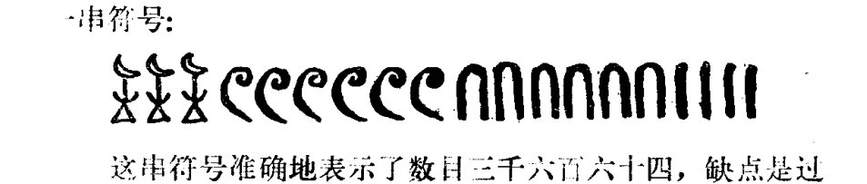
这串符号准确地表示了数目三千六百六十四，缺点是过于繁复冗长了。造成这种缺陷的原因，在于古代埃及人虽然采用了"进位制"的记数方法，但还没有获得"位值制"的数学思想。
什么是"进位制"，什么是"位值制"呢？我们不妨比较一下
· 7 ·
现在常用的数字系统。现在常用的记数方法是“十进位值制”的，它有以下两个特点：
一、它是十进制的。即逢十进一，也就是说，十个一记成十，十个十记成一百，等等。显然，古埃及人也采用了十进制的记数方法。
二、它是位值制的。也就是说，一个数码表示什么数，要由它所处的位置来决定，比如在 3664 中，靠右边的一个 6 在十位上，表示有六个十；而靠左边的那个 6 在百位上，它表示六个一百。3664 也就是 \(3 \times 1000 + 6 \times 100 + 6 \times 10 + 4\)。
位值制是千百年人类智慧的结晶，它使得人们能用少数简单的记号代替复杂难记的符号，能用少数的记号表示全部的数，为人们深入研究客观事物的数量关系创造了有利的条件。革命导师马克思曾高度评价了位值制的出现，还称赞它是“最美妙的数学发明”呢！
古代巴比伦人很早就懂得了位值制的道理，他们的记数法是位值制的，不过是六十进位值制的。所谓六十进位制，就是数计满六十才向高位进一，在现代的钟表上，一分等于六十秒，一小时等于六十分，还留下了这种进位制的痕迹。
巴比伦人的文字非常奇特，他们用一种断面呈三角形的小木条当笔，在泥版上按不同方向刻出楔(xiē)形刻痕，因此叫做楔形文字。
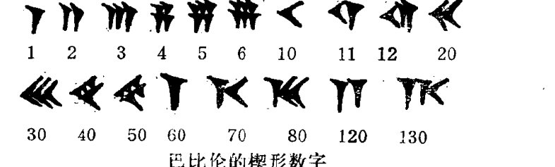
· 8 ·
用楔形文字表示三千六百六十四，记号是 𒐕𒐕𒐕 ，其中右边的 𒐕 表示 60，由于位置的不同，左边的 𒐕 表示 3600。显然，因为采用了位值制，巴比伦人的数学符号比埃及人要简洁得多。
当然，巴比伦的数学符号是不尽完善的。首先是符号过于相近，比如 𒐕 和 𒐕 ，都是密密麻麻的楔形刻痕，令人难以分辨。另外，符号所在的位置也不易辨认，比如用楔形文字表示一百二十四，记号也是 𒐕𒐕𒐕 ，这里的两个 𒐕 都是表示 60 的，因而在实际应用中很难分清这个记号表示的是一百二十四呢，还是三千六百六十四。
公元初年居住在中美洲的马雅部族人，也是一个懂得位值制的民族。他们的记数方法是二十进位值制的，这大概同他们早期用手指和脚趾来计数有关。马雅文明的数学符号也十分有趣，· 用来表示一，— 用来表示五，≡ 用来表示十二，……也许，这些小圆点、小横杠，就是他们早先用来记数的小石子和小木棒的形象呢！
我国是世界上最早发明"十进位值制记数法"的国家。1889 年，从河南安阳发掘出一批古代文物，里面有许多龟甲和兽骨，上面刻有许多象形文字，那是三千多年前的殷代文字，叫甲骨文。有片龟甲上刻着这样一段话："八日辛亥允戈伐二千六百五十六人。"意思是说，在八日辛亥那天的战斗中，消灭了二千六百五十六名敌人。这段话清楚地表明，至少在三千年前，古代中国人已经采用了十进位值制的记数方法，而
· 9 ·
这种方法同现代人们采用的方法是完全一致的。
在古代中国，无论是用口语还是用文字表达的数，都是遵守位值制的。比如"三千六百六十四"，这个数中的"千"、"百"、"十"就是用来表示每个字前面数码的位置的，如果省略了这些字，单说"三六六四"，人们还是可以从位值制上理解成三千六百六十四，绝不会理解成其他的什么数。显然，这种记数方法不但利于计数，也利于进行数的四则运算，在当时的世界上是最先进的。
后来中国人用算筹(chóu)来记数，十进位值制就更加明确了。所谓"筹"，就是一般粗细、一般长短的小竹棍。在没有发明纸张和珠算之前，它是我国古代数学家的计算工具。用算筹来表示数目有纵横两种方式：

怎样用算筹来表示多位数呢？古书《孙子算经》上说："一纵十横，百立千僵，千十相望，万百相当。"比如四位数 3664，用算筹表示出来就是 [Figure: 算筹表示的数字组合]，其中个位、百位用纵式，十位、千位用横式。算筹的纵横交错摆放，准确地指示了各个数码所在的位置，而且不易混淆，轻巧灵活地解决了巴比伦人没能解决的难题，显示了我国古代人民高超的数学才能。
零号是位值制的精髓，没有表示零的方法，位值制就不完备。巴比伦人虽然很早就获得了位值制的思想，但缺乏适当的零号，印度人正式使用现在的 0 号已是公元 876 年以后的事了，而中国古代数学家通过摆弄算筹，轻而易举地最先获得
· 10 ：
了这项极其重要的发明。在算筹中，空一格的地方就表示零，比如 3604 表示为 三 T ||||。即使零在个位也无妨，比如 3660 记作 三 T ⊥，由于各位数字纵横相间，也就绝不会和 366（||| ⊥ T）相混淆。算筹，这些普通的小竹棍，在我们祖先手中竟象“魔棍”般展示了如此众多的数学奇迹，不能不使我们为祖国数学家的聪明才智感到由衷的骄傲。
记数方法是进行数字运算的基础。比较了几种古代文明的记数方法后，我们自豪地看到，在人类文化发展的早期，古代中国的数学成就远远领先于其他各国而居于世界的最前列。
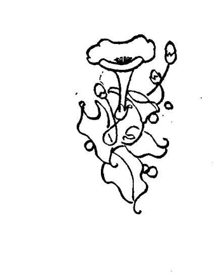
· 11 ·
楔形文字的故乡
由幼发拉底河与底格里斯河哺育的巴比伦文明，是一个非常古老的东方文明。远在五千年前，两河流域就出现了许许多多的奴隶制城邦。著名的古巴比伦王国建立于公元前十九世纪初，它是四大文明古国之一。王国的首都是巴比伦城，位于幼发拉底河岸、现在伊拉克共和国首都巴格达城南约一百公里处。
历史上，两河流域的统治民族迭经更换，巴比伦古城也曾几经荣衰。早在公元前十八世纪，巴比伦城就已是一个发达的贸易中心；公元前七世纪，在新巴比伦王国时期，重建后的巴比伦城更是达到了高度的繁华。但在公元前 538 年，当强大的波斯帝国征服了新巴比伦王国后，巴比伦城就日趋衰败了；公元前 331 年，这里又成为马其顿部族人的军营，不久，城里的大部分居民被逐出了家园，城池更加破败，至公元前二世纪，备受摧残的巴比伦古城便彻底从两河流域消失了。
巴比伦古城消失了，但它鼎盛时的风采，却长久地铭刻在后来人们的记忆中；巴比伦人民创造的伟大文明，更是以众多近乎神话的传说，活跃在其他民族的语言文字中。可是，千百年来，人们也只能通过其他民族的记载来揣度古代巴比伦人民的巨大成就，各种真实的、杜撰的故事杂揉在传说之中，是耶非耶，扑朔迷离。一百多年前，由于文物考古的重大发现，人们终于读到了古代巴比伦人撰写的著作，这些在地下沉睡了
· 12 ·
数千年的巴比伦泥版，以它独特的楔形文字，真实地记述了巴比伦人民的天才创造，讲述着一个又一个动人的故事……
在遥远的古代，由于巴比伦人民利用两河流域的便利条件，在土地上均匀地扩充了灌溉，因而有着较为发达的农业。农产品的丰富继而促进了商业贸易的迅速发展，当时，各种谷物通过巴比伦城源源不断地输出给邻近的国家。商业的兴盛不仅促进了城市的繁荣，也带来了货币制度的发展，随着商业流通的发展，古代巴比伦甚至出现了现代银行原型的机构。这些都促使巴比伦人很早就从数学领域获得了实际的知识。在四大文明古国中，巴比伦人获得数学知识是较早的，据记载，还在五千年前，居住在两河流域的苏美尔人就已经知道使用帐单、票据，有了较为发达的商业数学。
在日常生活中，由于人们要经常地计算重量、长度，计算税额，兑换货币，也就促进了算术和代数的发展。巴比伦的乘法大体与我们现代的方法相同，而除法，则是根据倒数乘法的法则来进行。因为这种方法需要把数分解成它的因数之积，巴比伦人采用的六十进位制的优越性就显露出来了。六十进位制的基数60是2、3、4、5、6、10、12、15、20、30诸数的倍数，也就在很大程度上可使这种除法的运算得到简化。因此有人认为，巴比伦人之所以采用六十进位制，就是由于它的基数60有如此良好的数学性质的缘故。
在制作于四千年前的泥版中，发现了一批数学用表，有平方表，还有立方表。这些数表是干什么用的呢？原来，巴比伦人还研究了数的开平方和开立方运算，但是运算方法太复杂了，应用起来不大方便，于是他们干脆编制了这些数表，需要开方时直接去查这些现成的数表，从而避开了那些复杂的运算。
· 13 ·
算。这也体现了巴比伦人是很注重数学知识的实际应用的。
巴比伦的代数也较为发达。早期巴比伦代数的一个基本问题是求出一个数，使它和它的倒数的和恰好等于某个已知数。用现代的符号来表示，若 \(b\) 是已知数，这个问题就是要求解含 \(x\) 的分式方程
亦即 \(x\) 的二次方程
巴比伦人首先求出 \(\left(\dfrac{b}{2}\right)^2\)，然后再求 \(\sqrt{\left(\dfrac{b}{2}\right)^2-1}\)，最后给出解答：
也就是说，巴比伦人实际上已经知道了二次方程的求根公式！不过，巴比伦人尚不知道负数，因此遇到负根时，他们总是把它略去了。
有块公元前十八世纪的泥版记载了这样一个问题："两个正方形面积之和是 1000，其中一个的边长比另一个边长的三分之二少 10，问各长多少？"这相当于解联立方程组
虽然巴比伦人的解法仅限于指出某些简单的数字关系，但他们毕竟得到了答案。
在巴比伦文化发展的过程中，天文学的需要也是推动数学发展的重要原因。
· 14 ·
在一切古代文明中，天文学总是发达较早的一门科学。无论是从事农业耕作的人们还是从事畜牧业的游牧民族，都必须掌握四季更换的规律；而发亮的夜空又是当时唯一的灯塔，为夜间赶路的商队指点着所需的方位。这种生产生活上的需要，也促使巴比伦人留神地观察天空，注意日月星辰的运行，逐渐积累了丰富的知识。
巴比伦人很早就发现了行星的存在，他们还编制了非常详细的星辰分布图，将天空分为星座，其中他们分黄道星座为十二宫，并以巨蟹、天蝎等来命名的做法还一直流传至今呢。在新巴比伦王国时期，他们又发现了能预测日食和月食的"沙罗周期"，更是为天文学的发展作出了巨大的贡献。古希腊第一个大数学家泰勒斯，曾经通过预告日食而劝止了两个国家的战争，据说泰勒斯推算日食的依据，也就是巴比伦人发现的沙罗周期。
巴比伦人很好地研究了月亮的运动，创用了世界上最早的阴历。他们规定一年为十二个月，一月共三十天，比回归年少十一天的误差是由闰月来纠正的。也许，由于一年是三百六十天，给巴比伦人把圆周等分为三百六十份提供了理由。这种等分圆周的方法一直流传到现在。另外，也有人认为，巴比伦人经常熟练地六等分圆周，正是他们建立六十进位制的基础。
天文学推动了数学的发展，然而，天文学本身也只有借助于数学才能发展。不论是编制星图还是制订历法，其前提都是要具备一定的数学知识；同时，它又促使人们去发展计算技能和引进更加复杂的数学概念。比如，巴比伦人的天文观察，就促使他们较早地认识了球面三角学的概念。顺便说一句，
· 15 ·
古代中国的数学家，通常也都是出色的天文学家，进一步证实了这两门学科发展的密切联系。
总之，在楔形文字的故乡，算术和代数发展到了相当高的程度，人们通过演算具体的问题，对抽象数学也有了部分的掌握，而且，凭借巴比伦发达的商业贸易和优越的地理环境，这里产生的数学知识对其他民族，比如对后来兴起的希腊文明，还产生过积极的影响，为世界数学的发展作出了有意义的贡献。但是，总的来说，巴比伦的数学知识还是很初等的，数学法则和解题步骤的产生，几乎都依赖于直观的认识和逐渐积累的经验。虽然巴比伦人能用正确而有系统的步骤，解出相当繁杂的代数方程，但他们只讲出了该做的步骤，却没有考察之所以能这样做的依据，没有数学证明的思想。也就是说，还没有严谨的数学理论。因此，古代巴比伦人积累的数学知识，还只能算是数学的萌芽。
· 16 ·
尼罗河畔
尼罗河象一条绿色的巨龙，蜿蜒盘桓在古埃及万里荒漠之上。奔腾的河水定期泛滥，给大河两岸留下了肥沃的淤泥，留下了生命的绿色，留下了收获的希望，哺育了另一个古老的东方文明——埃及文明。
远在一万多年前，埃及人民就生活在尼罗河河谷两边的高地上。公元前 4000 年左右，随着农业、手工业和交换的发展，尼罗河流域出现了四十个小型国家。大约五千年前，上埃及国王美尼斯征服下埃及，才建立起统一的中央集权的古埃及王国。
尼罗河谷地的自然条件促进了埃及农业的顺利发展，尼罗河的洪水每年都给两岸的土地覆盖上新的淤泥，保障了谷物的丰收。然而，每当洪水退后，田地上原有的标记便荡然无存了，人们要重新测量土地的面积，勘定田亩的界限，于是，几何学便应运而生了。
要测量一块四边形田地的面积，早先，人们见仁见智，计算的方法因人而异；或繁或简，需要勘测的数据也不尽相同。但是，年复一年的洪水泛滥，年复一年的勘定测量；一个四边形，又一个四边形；……在成千上万次相似图形的测量中，古代埃及人积累了丰富的经验，逐渐变得聪明起来。他们不再重复大量不必要的工作了，因为他们已经懂得，只要测量出四边形两组对边的长度，根据“四边形的面积等于两组对边的
· 17 ·
和分别除以 2 再相乘”这样一个数学公式，就可以粗略地计算出四边形的面积来。
由生活经验中归纳得到的数学公式，叫做经验公式。虽然经验公式往往是粗略的近似，但它们的出现却标志着人类的认识经历了一次大的飞跃，说明人们已经能够从大小不尽相同的类似图形中，初步把握住它们的本质联系，抽象出一些普遍的法则，来指导同类数学问题的解答。而抽象，正是数学学科的本质特征之一，也是科学方法的威力之所在。从这个角度出发，就不难看出埃及文明产生的矩形、梯形和圆等图形面积的计算法则，立方体、柱体等图形体积的计算法则，对数学的发展作出了多么大的贡献。
同其他古代文明一样，古代埃及的数学公式也是用文字表述的，而且，古代埃及的数学公式常常包含在一些典型例题的解答之中。比如计算截棱锥体的体积，他们会这样说：“若有人告诉你说，有截棱锥，高为 6，底为 4，顶为 2。你要取 4 的平方，得结果 16；你要把它加倍，得 8；你要取 2 的平方，得 4；再把 16、8 和 4 加起来，得 28；你要取 6 的三分之一，得 2；取 28 的两倍，得 56。你看，得 56，它是正确的。”这个典型例题的解答，不但具体地告诉了这一个截棱锥体体积的计算方法，也表述了计算所有截棱锥体体积的一般法则。因为只要改变例题中相应的条件——高，上、下底边的边长，就可以计算出相应的截棱锥体的体积。
我们不应当苛求生活在四、五千年前的祖先。尽管这些数学公式表述得非常笨拙，但却如同璞（pú）玉浑金，稍加琢
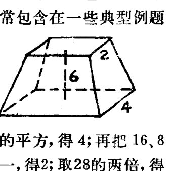
· 18 ·
磨，便会闪烁出耀眼的光泽来。如果用现代的数学符号表示古埃及人的截棱锥体的体积公式，那就是：

其中 \(h\) 是高，\(a\) 和 \(b\) 分别是上、下底边的长。显然，这个公式不仅精确，而且还是对称的。它是古埃及几何学里最令人目炫的成就之一。
现代人们对古埃及文明的直接了解，来自对纸草文书的研究。所谓纸草，是把尼罗河下游的一种植物的茎撕开紧压后切成的薄片，它是古代埃及人用来书写文字的"纸张"。由于年代久远后纸草会干裂成粉末，所以古埃及的文件绝少流传下来。现存的古埃及数学文件主要是两批纸草文书，一批保存在英国，叫莱因德纸草文书；另一批保存在苏联，叫莫斯科纸草文书。这两批纸草文书中共记录了一百一十个数学问题和解答，很可能是作为一些典型例题和典型解法的示范而记下来的。
根据纸草文书的记载，古代埃及人民不仅把数学应用于面积、体积的测量，也应用于确定田亩的税收、两种度量单位的换算等方面。他们不仅会解一元一次方程，也能够解答形如 \(ax^2 = b\) 之类简单的二次方程，以及算术、几何数列的具体问题。古埃及人还会进行分数的四则运算，遗憾的是，由于他们没有采用位值制的记数方法并且把运算法则弄得太繁复了，以致妨碍了算术和代数的进一步发展。
随着岁月的流逝，大量的纸草文书"灰飞烟灭"了。但是，它所记录的古老文明却如同矗立在尼罗河畔的金字塔群，与
· 19 ·
日月俱存。而金字塔，这些凝聚着古代劳动人民血汗的宏伟建筑，其实也是一种最坚固的"纸草文书"，永恒地记录着人类的创造天才。
金字塔是古埃及统治者的陵墓。由于它的形状很象汉语中的"金"字，所以我们中国人称之为"金字塔"。金字塔大都建于四千二百多年前，最大的一座金字塔叫胡夫金字塔，修建于公元前2800年左右，塔高146.5米，底基每边长约230米，占地52900余平方米。由230万块重约两吨半的巨石砌成。塔底精确地呈正方形，指向东南西北四方。巨石经过磨制，互相密合，上下左右严格地垂直，层层收缩垒起，最后在塔顶巧妙地合拢，而塔顶又指向天上特定的方向。没有相当精湛的几何和天文知识，要建造这样巍峨壮观的建筑，简直是不可思议，因为任何一块巨石的些许差池，都有可能导致整个金字塔建筑的走形。巧合吗？很难说是，因为金字塔可不止一座啊。在尼罗河西岸，至今还矗立着七十多座金字塔呢！
古埃及文明，是指公元前三千多年至公元前五世纪间埃及人民的天才创造，她为数学的发展作出了重要的贡献，也给后来兴起的希腊文明以深刻的影响。但是，在古代埃及，数学知识是零碎的，是一些闪光的但相互之间缺少联系的宝贵思想，还没有形成严谨的体系，还缺乏逻辑因素，还看不到命题的证明。虽然有了初步的抽象思维，但数学的另一个本质特征——演绎推理和公理法，尚未显露出来。也就是说，数学尚未成为一门独立的科学，正因为此，人们把古埃及文明的数学，以及一切公元前五世纪以前的数学，都划归为数学的萌芽时期。
·20·
神秘的学派
公元前538年左右，波斯帝国的金戈铁马横扫中东，先后吞并了巴比伦和埃及。两种古老的东方文明衰落了，希腊人循着开拓者的足迹，继而拾起了事业的火炬。
延续了一千一百多年的古希腊文明，是古代科学文化的一座高峰。而数学，作为当时最受重视的一门学科，更是获得了迅速的发展。
在古希腊早期的数学家中，毕达哥拉斯的影响最大。他传奇般的一生，也给后代留下了众多神奇的传说。
毕达哥拉斯年轻时，根据当时富家子弟的惯例，曾到巴比伦和埃及去游学，直接受到古代东方文明的熏陶。奔腾不息的幼发拉底河和巍峨壮观的金字塔，丰富了他的阅历，开阔了他的视野，启迪了他的思维，为他以后的数学研究奠定了坚实的基础。同时，古代东方宗教的神秘主义教条，也在这位未来的数学家思想上烙下了极深的印记。
回国后，毕达哥拉斯在家乡创办了一所"学校"，即毕达哥拉斯学派。这所"学校"与古代中国孔夫子创立的私塾不同，它笼罩着一种不可思议的神秘气氛，实际上是一个献身数学研究和宗教修养的秘密团体。
学派内部的一切活动都隐藏在秘幕之后。据说，每个新入学的学生都得宣誓，严守秘密，并终身只加入这一学派。谁也不准将知识传播到学派之外，否则，将受到极其严厉的惩
·21·
罚。一切知识均由毕达哥拉斯传授，但却不是每个学生都有资格见到他们的老师。
由于毕达哥拉斯的学生常常根据某种义务，把自己取得的成果也妄加在他们"超人"的老师身上，所以，我们评价毕达哥拉斯的工作，实际上是指公元前 585 年（相传毕达哥拉斯出生之年）到公元前 400 年间，整个毕达哥拉斯派学者的天才创造。
一提起毕达哥拉斯的数学成就，人们就会联想起以他的名字命名的一条几何定理：直角三角形两条直角边的平方和，等于斜边的平方。其实，根据中国古代书籍《周髀算经》记载，比毕达哥拉斯更早，有位叫商高的中国人就已得到了这个定理的结论。后来，我们中国人就称这个定理为商高定理或勾股定理。毕达哥拉斯的贡献，在于他独立地发现了这个定理，并据说给予了证明。
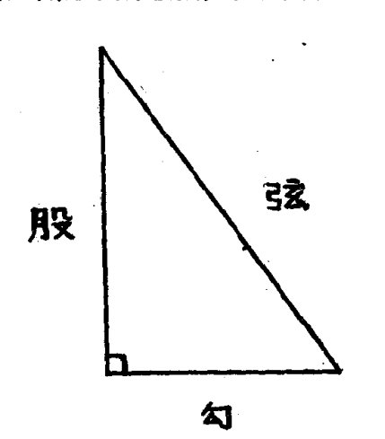
勾股定理是平面几何中一个关键的定理。它精确地刻划了直角三角形三边间的关系，以此为基础，可以推导出不少重要的结论来。难怪毕达哥拉斯发现这个定理之后，要宰一百头牛来大肆庆祝呢！毕达哥拉斯的几何造诣较深，他还发现了"三角形内角之和等于 180°"等一些定理，并会用几何作图法解二次方程，……然而，他的主要数学兴趣，却在研究整数的性质上，即今日人们称为数论的那个领域。
· 22 ·
毕达哥拉斯很注意把数和形紧密联系起来。他喜欢把数描绘成沙滩上的小石子，并按小石子所能排列的几何形状来给数分类。比如，1, 3, 6, 10……，叫三角形数，因为相应的小石子能够排列成正三角形。
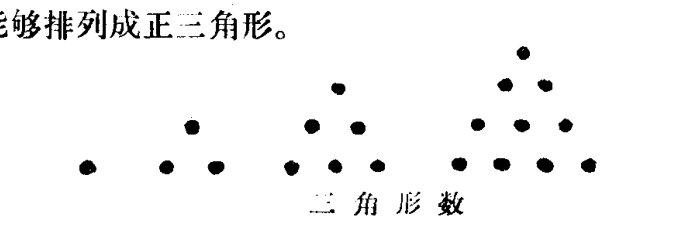
根据同样的道理，1、4、9、16……，叫正方形数；1、5、12、22……，叫五边形数。把代表数的小石子排列成几何图形后，整数的一些性质就变得很直观，寻找数与数之间的规律也就比较容易了。比如在三角形数的研究中，知道了 \(1\), \(1+2\), \(1+2+3\) 的和都是三角形数，并且 \(1+2=\dfrac{1}{2}\times 2\times(2+1)\), \(1+2+3=\dfrac{1}{2}\times 3\times(3+1)\), 容易联想到 \(1+2+3+4=\dfrac{1}{2}\times 4\times(4+1)\) 也是一个三角形数，进而归纳出 \(1+2+3+\cdots\cdots+n\) 是一个三角形数，并且 \(1+2+\cdots+n=\dfrac{1}{2}n(n+1)\)，也就是顺理成章的事了。
用这种方法，毕达哥拉斯得到了许多数学公式，比如：
还推导出了一些重要而且难以得到的结果。
很明显，毕达哥拉斯研究的数，不再是一匹马、两头牛等具体物体的数目；他所研究的几何图形，也不再是尼罗河畔的
· 23 ·
麦地。数和形都已抽象成数学概念。他所致カ探索的，正是这些概念之间的内在规律。这种摆脱了狭隘经验束缚的抽象思维活动，使得人们能够更深刻、更广泛地探讨客观世界的数量关系和空间形式。你看，一个抽象的代数方程，竟能应用于几百种不同的自然现象，这才是数学的力量和奥妙之所在呀！而赋予数学真理以最抽象的性质，也正是古希腊文明对数学发展最伟大的贡献之一。
毕达哥拉斯为什么要研究抽象的数学概念呢？要探求其中奥秘，还得了解毕达哥拉斯信奉的哲学观点，因为在古希腊，数学家通常也是哲学家。
在毕达哥拉斯所处的时代，社会生产力比起古巴比伦和埃及，有了更大的提高，人们征服自然、改造自然的本领也更高强了。这样，原始宗教中关于自然现象神秘可怖的阐述，就显得幼稚可笑了。人们希望能对大自然的变化作出合理的解释。这时，一些自然现象尽管在性质上完全不同，却表现出相同的数学规律，给人们留下了深刻的印象。毕达哥拉斯认为，神也在按几何规律办事，数学公式是大自然的精髓，所谓“万物皆数也”。所以，他研究数学，乃是探索宇宙结构的真谛。毕达哥拉斯的这种观点，在当时具有一定的积极意义，它促使人们摆脱对神的盲目崇拜，转而去献身于数学研究。
当然，毕达哥拉斯的整个哲学思想是唯心主义的，是错误的。他把宇宙间的一切都归结为整数或整数之比，认为除此之外，世上就不再有其他的东西了。他认为宇宙是建立在前四个奇数和前四个偶数基础之上的，由于 \((1+3+5+7)+(2+4+6+8)=36\)，所以用数 36 作的誓言是最可怕的誓言。十分有趣，对毕达哥拉斯这种“整数哲学”的第一次强有力的挑战，
- 24 -
恰恰来自毕达哥拉斯学派内部。
毕达哥拉斯的学生希伯斯，在研究勾股定理时，发现了一种新的数，而这种数是不符合他老师的宇宙理论的。希伯斯发现，如果直角三角形两条直角边都为1，那么，它的斜边的长度就不能归结为整数或整数之比（应该等于\(\sqrt{2}\)，是一个无理数）。更令毕达哥拉斯啼笑皆非的，是希伯斯居然用数学方法证实了这种新数存在的合理性，而证明的方法——归谬法，又是毕达哥拉斯学派常用的。
可以想象，毕达哥拉斯学派受到了多么沉重的打击。小小的\(\sqrt{2}\)竟然动摇了他们惨淡经营的宇宙理论。怎么办？毕达哥拉斯的可悲，在于他不敢正视这个新的数学问题，而是企图借助宗教信条来维护他的权威。他搬出学派的誓言，扬言要严惩敢于“泄密”的人。然而，真理从来就不是权势的奴仆，真理的声音是谁也封锁不了的。渐渐地，有一种新的数存在的消息传扬了开去。
希伯斯由于违背了学派的誓言，遭受到残酷的迫害。不久，他就失踪了。毕达哥拉斯派的人说，那是海神普赛登惩罚了“叛逆”的希伯斯，海神刮起大风暴冲散了希伯斯的船队，然后就卷起海浪吞没了他……。但是，谁会相信这些骗人的鬼话呢？
\(\sqrt{2}\)这类无理数的发现，是数学史上一个重要的发现。希伯斯为此献出了生命，但我们欣慰地看到，数学却因此又前进了一步。
· 25 ·
演绎的几何
毕达哥拉斯死后，他的学派便一分为二、分道扬镳（biāo）了。一派人沿袭毕达哥拉斯神秘的宗教信条，堕落成为迷信巫术的"兄弟会"；另一派人则继承了毕达哥拉斯对宇宙数学结构的求索，他们公开了毕达哥拉斯学派的秘密，吸引着更多的学者投身于数学研究。
这时，曾经使毕达哥拉斯头痛的"天外来客"\(\sqrt{2}\)，不仅继续纠缠着毕达哥拉斯以后的古希腊数学家，而且召唤来更多的同伴：\(\sqrt{3},\sqrt{5},\sqrt{7}\cdots\cdots\)，频繁出现在数量关系的研究和几何论证的过程中，迫使希腊人不得不打起精神，正视这些"天外来客"的挑战。
一百多年的时间过去了，希腊人的努力终于得到了报答。杰出的数学家攸多克萨斯（公元前409—前356年），引入了一种新的数学概念——变量。量与数不同。数的变化是从一个跳跃到另一个的，比如从1到2，当中有一定的间隙。而量是代表诸如线段、面积、时间等连续变动的东西。攸多克萨斯在量的基础上，建立了一种关于比例的新理论，把能够或者不能够表示成为整数之比的事物，统一在新的几何解释之中，从而结束了数学史上的一次危机。
遗憾的是，攸多克萨斯并没有回答\(\sqrt{2}\)等等是不是数。实际上，他引导数学巧妙地避开了无理数问题。于是，古希腊数学的重点便颠倒了过来，数学家们从研究数的前沿阵地上
·26·
撤退了，转向了形的研究。他们把全部的聪明才智都倾注在几何学里，因为在几何学里可以不用回答无理量到底是不是数。
希腊人研究几何学有着得天独厚的条件。其他的古代文明，大都是与世隔绝的农业社会，人们祖祖辈辈耕耘在家乡的土地上，“日出而作，日入而息”，拘囿(yòu)于一个狭小的天地里。而希腊民族是一个从事航海的民族，繁荣的海上贸易，使他们对空间有着旅行家的敏感，探求现实世界空间形式的欲望也就更为强烈。
据说，毕达哥拉斯的老师泰勒斯(约公元前624—前547年)，早年游历埃及时，曾经不用登上金字塔，就测出了金字塔的高度。他的方法是这样的：在天气晴朗的中午，在地上竖立一根木杆，木杆和它的投影就构成了一个三角形。同时，金字塔和塔影也构成了一个三角形。这两个三角形是相似的。分别测量出木杆和金字塔的阴影长度，可以确定它们的比，而这个比值与木杆和金字塔高的比是相同的，所以，知道了木杆的长度，再根据比例关系，就可以测出金字塔的高度了。在两千五百多年前，人类就已经掌握了这样的技巧，真令人击节赞叹。顺便说一句，根据日本学者能田忠亮的研究，比泰勒斯早五百年，古代中国人就掌握了类似的测量方法。这使我们为古代的中国文明感到自豪。

泰勒斯夸耀说，是他把这种方法泄露给了埃及人。其实，情况可能正相反，应当是埃及人比泰勒斯更早知道了这种方
· 27 ·
法。但是，他们无法、也没有想到要证明这种方法的正确性。证明，这就是古希腊几何学与它以前的几何学的主要分野。
泰勒斯是古希腊第一个大数学家。有人说，他也是数学证明思想的创始人，事实是否如此，就难以考证了。不过，自毕达哥拉斯等人倡导数学抽象化后，赋予数学结论以严格的证明，确实突出地摆在了数学家的面前。
由于几何学的研究对象不再是具体事物的形状，而是抽象的数学概念，由此而产生的抽象的几何结论，也就具有极其广泛的普适性。在将其运用到各种自然现象之前，人们得保证它是正确的，不然的话，在应用中就会导致差错。怎样保证一个数学结论是正确的呢？仅用人们习惯的观察、实验、归纳的方法是很不够的，因为即使能举出九千九百九十九个例子说明某结论是正确的，可是，谁又能保证第一万个例子不出意外呢？更何况还有第一万零一个、一万零二个例子呢！
幸好，实验、归纳的方法，不是人们认识真理的唯一方法。比如说，有三棵树，知道了甲树比乙树高，又知道乙树比丙树高，那么，完全不需再去实际测量，直接通过正确的逻辑推理，就可以断定甲树比丙树高。也就是说，直接从实践中获取部分真理，再运用逻辑推理的方法，人们可以得到真理的其他部分。聪明的古希腊数学家，正是用这种方法来保证数学结论的正确性的。具体地说，他们用的是演绎法。这是一种从一般事理成立，推出特殊事理成立的逻辑推理方法。

古希腊人把直接从实践中得到的真理叫做"公理"，公理
· 28 ·
的正确性是经过实践反复检验的，为人所共知而且令人一目了然的，比如“两点可以联结一条直线”等等。古希腊数学家把公理作为演绎推理的基础，去论证几何结论的正确性。一个几何结论被证明是正确的，就成了一个几何定理。以这个定理为基础，又可以推导出新的几何定理来，而不必一切都去从头开始，因为只要推理的方式正确，后一个定理的正确与否，完全可由前一个定理保证。这样，几何学的内容就异常丰富了起来，而且，几何学本身也就构筑成一个严谨的科学体系，象一根链条，每一个环节都衔接得那么丝丝入扣。
公理法和演绎推理，是数学的本质特征之一，也是数学区别于其他自然科学学科的明显标志。它的引入，正是古希腊文明为数学发展作出的又一个最伟大的贡献。
翻开古希腊的历史，会看到一种有趣的现象，公元前四世纪时，几乎所有的杰出数学家，不是哲学家柏拉图的学生，就是他的朋友。可以想象，古希腊的哲学思想对数学家的影响是多么的大。哲学家最关心真理，而演绎推理能在正确的前提下，得到绝对肯定的结论，正适合他们的味口；数学，既是他们了解宇宙结构的钥匙，又是他们追求真理总体的一部分，理所当然应是演绎性的。也许，这就是古希腊数学家在数学里强调演绎推理的原因吧。
希腊数学的重点移向几何后，几何学的研究获得了辉煌的成就。然而，希腊的数学开始逐渐地脱离了实验的基础，脱离了生活，也就逐渐显示出它的弊端来。另外，古希腊的数学家过分地专注于几何学，摈(bìn)弃无理数，不仅使得代数与几何变成了两门毫不相干的数学分支，还延误了数的概念的发展，妨碍了他们去取得本来应当取得的更大成就。
· 29 ·
三大几何难题
阴森恐怖的监狱里，囚禁着无辜的学者安拉克萨哥拉（约公元前500—前428年）。他犯了什么罪？说起来十分荒唐，仅仅是因为他断言，太阳，并不是非凡的神灵阿波罗（希腊神话中的太阳神），而是一个硕大无比的火球。
厚厚的牢墙，坚固的牢门，禁锢（gù）了安拉克萨哥拉人身的自由，却禁锢不了他自由的思想。透过满是粗大栏杆的窗口，安拉克萨哥拉看到起伏的丘峦，广阔的原野，依旧呈现出不可名状的几何结构美。于是，他暂时忘却了心中的忧伤，拾起一根小木条，在地上比划起来……
据说，安拉克萨哥拉在监狱中思考过这样一个问题：怎样作一个正方形，才能使它的面积恰好等于某个已知圆的面积呢？然而，他没能解决这个问题，古希腊的数学家们也没能解决这个问题。在漫长的岁月里，一代又一代的学者为此倾注了无数的聪明才智，但问题依然故我，象古希腊神话中的兽妖"斯芬克斯"一样，肆无忌惮地向人类的智慧挑战。
这个问题叫做化圆为方问题，是古希腊几何学里的一个著名难题。类似的难题还有两个：
立方倍积问题——作一立方体，使它的体积等于已知立方体的两倍；
三等分角问题——把一个任意角分成三等份。
关于三大几何难题的起因，流传有许多近乎神话的传说。
·30·
比如立方倍积问题，就有这样一个传说，古希腊有个地方叫第罗斯，有一年，突然间瘟疫流行，人们流离失所，死亡枕藉，幸存的人们日夜匍匐在祭坛前，哀求神灵宽恕。许多天过去了，巫师终于传达了神灵的旨意，原来，这是神灵在惩罚不敬重数学的第罗斯人。想要结束这场深重的灾难，第罗斯人必须把现有的祭坛的体积加大一倍，但不许改变立方体的形状！
传说终归是传说，其中常常掺杂着杜撰的情节，虚构的神灵。三大几何难题的起因，应当产生于几何问题的研究中。希腊人掌握了两等分一个任意角的方法后，很自然地会去想怎样三等分一个任意角。立方倍积问题也是这样，希腊人知道，以正方形的对角线为一条边，可以作一个新的正方形，而新正方形的面积恰好是原正方形面积的两倍，他们进而联想到把立方体加倍，也就是顺理成章的事情了。
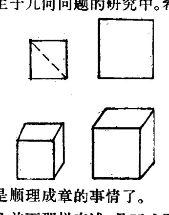
当然，如果三大几何难题仅仅象前面那样表述，是不难予以解决的，比如三等分角问题，用量角器一量，不就轻而易举地解决了吗？三大几何难题之所以难，在于古希腊人对作图工具作了限制。即：作图时只准许使用直尺和圆规。
其实，如果仅仅这样限制，难题仍然不难。古希腊数学家阿基米德（约公元前287—前212年），就曾经只用直尺和圆规，解决了三等分角问题。假若所要三等分的角是∠ACB，阿基米德的方法是这样的：
在直尺上记一点P，令直尺的一端为O；以C为圆心，OP为半径作半圆交∠ACB于A、B；使O点在AC的延长线上
·31·
移动，\(P\) 点在圆周上移动，当直尺通过 \(B\) 时，联 \(OPB\)，则 \(\angle COP=\frac{1}{3}\angle ACB\)。

但是，人们不承认阿基米德解决了三等分角问题，因为阿基米德作图时，在直尺上记了一点 \(P\)，实际上使直尺具有刻度的功能，也就违反了古希腊人对作图工具的另一个限制：直尺不能有任何刻度，而且直尺和圆规都只准许使用有限次。
在上述两项规定限制下的几何作图问题，叫尺规作图问题。尺规作图是古希腊几何学的金科玉律，鲜明地体现了古希腊几何学的特点。数学家们要求从最少的基本命题，推导出尽可能多的数学结论，与这种精神相吻合，对作图工具也提出了"少到不能再少"的要求。他们异常强调严密的逻辑结构，不容许出现半点疏忽。这种严谨的治学态度，也一直影响着后代的数学家。
然而，苛刻地限制作图工具，也正好暴露了古希腊几何学的一个重大缺陷。有不少的数学家，仅把研究几何作为训练逻辑思维能力的手段，他们可以在理论上考察所有的几何图形，却不肯去关心任何一个实际事物的形状，导致了数学理论与应用的严重隔绝。奴隶主贵族这种鄙视劳动的恶劣作风，使得数学日益失去萌芽时期的勃勃生机，也限制了希腊数学的成就。
- 32 -
至于三大几何难题，由于几乎每一个人都能弄懂题意，但却使许多最杰出的数学家也束手无策，因而具有极大的魅力，吸引着千千万万的人去摘取这些似乎近在咫尺的数学成果。
两千年里，一个又一个数学家欣喜若狂地宣称：我解决了三大几何难题！可是不久，人们就发现，他们不是在这里就是在那里有着一点小小的、然而是无法改正的错误，随之爆发出一阵阵善意的笑声。无数的人失败了，然而正是他们，用生命和智慧搭起了一架攀登数学高峰的人梯。从他们的失败中，人们逐渐怀疑这些问题是无法用尺规作图法解决的，于是转而研究这些问题的反面。因为只要能够证明这些几何图形不能够用尺规作图的方法作出，也就解决了三大几何难题。
人类的智慧终于获得了胜利。1837年，闻脱兹尔（1814—1848年）在研究阿贝尔定理化简时，匠心独运，首先证明了三等分角和立方倍积问题是不能用尺规作图解决的；接着，1882年，数学家林德曼（1852—1939年）证明了 \(\pi\) 是一个超越数，从而证明了化圆为方问题也是不能用尺规作图解决的。最后，1895年，德国数学家克莱因（1849—1925年）在总结前人研究的基础上，给出了这三个几何作图题不能用尺规作出的简单而清晰的证明，才彻底了结了这桩长达两千多年的悬案。
研究了两千多年，最后的结果竟是不能作出这些图形，真有点扫兴。人们或许会问，研究三大几何难题有什么意义呢？数学，有着一种奇异的特性，如果稍一牵动其中的某个环节，就能拽出这个环节前后的一整串数学事实；而一个著名的数学难题，在数学发展中就起着这样一个环节的作用。一个数学问题能够成为难题，也正好说明人们的数学方法陈旧无力，于是推动着人们去寻觅新的数学方法，改进研究手段。所以，
- 33 -
解答三大几何难题，不仅显示了人类智慧的威力，更重要的，是人们发现了更多的数学方法，得到了更多的数学成果。比如通过研究三大几何难题，开创了对圆锥曲线的研究，提出了尺规作图的判别准则，等等，而这些都比三大几何难题本身要有意义得多。
即使是在古希腊，数学家们也得到了不少的收益。希波克拉底在研究化圆为方问题时，得到了这样一个数学结论：用两条直角边作出的两个半圆的面积之和，等于用斜边作出的半圆的面积。即图中两个用斜线条画出的月牙形的面积，等于图中用斜线条画出的三角形的面积。
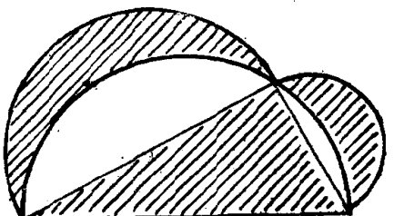
- 34 -
精彩的总结
美丽的雅典城，是希腊共和国的首都，也是一个历史悠久的文化名城。早在两千六百多年前，雅典就已经是一个繁华的奴隶制城邦。公元前479年，当雅典人联合古希腊的其他城邦，奋力打败不可一世的波斯帝国后，更是声威远震，一跃成为爱琴海上的强国。
四通八达的海外贸易，给雅典人带来了大宗的财富，也激化了平民阶层与奴隶主贵族的矛盾，导致了一系列的政治改革。最后，平民阶层获得了胜利，确立了奴隶制民主政治。这是古代奴隶制国家的最高发展形态。由于大地上没有一个君临一切的专制帝王，意识形态里也就没有一个主宰一切的神灵，没有人们必须遵守的宗教信条，人们的思想活动享有相当程度的自由。这一切，为学术活动的开展创造了良好的气氛，吸引着四方游历之士，荟萃在这个新的政治文化中心。
众多的学者，形成了众多的学派。这些学派之间，有的尖锐地对立着，有的却亲密地师承着，竞相宣扬自己的观点，把雅典城变成一个巨大的自由讲坛。这情景，颇象我国的春秋战国时期，百家蜂起，望望争鸣。数学，也就从各个学派的圈子里跳了出来，变成整个社会的财富，获得了突出的发展。在古希腊一所最著名的高等学府门口，甚至写着这样的字句： “不懂几何者，勿入此门！”
公元前600年至公元前300年，这是希腊数学史上一个重
· 35 ·
要时期。在这三百年里，数学摆脱了狭隘经验的束缚，迈入了初等数学时期。古希腊人强调抽象，引入公理法和演绎推理，揭示了数学学科两个最重要的本质特征，对人类科学文化的发展，特别是西方数学的发展，影响极其深远。为了与以后的希腊文明相区别，人们把这段时间称作希腊古典数学时期。
古典时期的希腊数学家们，发掘了异常众多的数学材料，摘取了光彩炫目的数学成果。但是，数学不能只是材料的堆砌，成果的罗列，于是，整理总结先辈们开创的数学研究，就成了后代希腊数学家义不容辞的职责。这方面，欧几里得（约公元前330—约前275年）的工作最为出色。

欧几里得是位博学的数学家，尤其擅长于几何定理的证明；他也是位温良敦厚的教育家，颇受学生的敬重。据说，连当时的国王托勒密也曾向他请教过几何问题哩！有一次，托勒密被几何证明弄得头昏脑胀，问欧几里得能不能把证明搞得稍微简单一点，而欧几里得呢，认为这是对几何学的亵渎(xiè dú)，于是不客气地回答国王说：“陛下，几何学里可没有为您专门开辟的大道！”
作为一个数学家，欧几里得的名望，不在于他的数学创造，而在于他编写了一部划时代的数学著作《几何原本》，系统地整理了前人的数学研究，对古典时期的希腊数学作了一个精彩的总结。
在《几何原本》里，欧几里得独创了一种陈述方式。他首
- 36 -
先明确地提出所有的定义，精心选择了五个公理和五个公设，作为全部数学推理的基础；然后有条不紊地、由简到繁地证明了四百六十七个最重要的定理。由一小批公理，竟能证明出这么多的定理来，而且，这些公理公设，少一个则基础不巩固，多一个却又是累赘，其中自有很深的奥妙。欧几里得独创的陈述方式，也就一直为后代数学家所沿用。
论证之精彩，逻辑之严密，是《几何原本》的又一大特色。书中的定理，虽然大多数已由前人证明过，但前人的证明往往是较马虎的，经欧几里得之手后，许多证明才变得无懈可击。比如对"质数的个数有无穷多"这个定理，欧几里得的证明就相当简洁漂亮。他首先假设质数的个数只有有限个，并且最大的一个是\(N\)。把这些质数都乘起来再加1，就会得到一个新的数：\((1 \times 2 \times 3 \times 5 \times \cdots \cdots \times N)+1\)。欧几里得开始论证：如果新的数是一个质数，由于它比\(N\)还大，一定不会是原有质数中的某一个；如果新的数不是一个质数，那么它一定能被原有的质数所整除，而这显然是不可能的。这两种情况都与原先的假设相矛盾，说明新的数一定是一个新的质数，从而也就证明了质数的个数有无穷多。
《几何原本》共十三卷，介绍了直线和圆的基本性质、比例论、数论和立体几何等方面的数学知识。它是古代西方第一部完整的数学专著，长期被奉为科学著作的典范，并统御几何学达两千年之久。据说，自中国的活字印刷术传到欧洲后，《几何原本》已被用各种文字出版了一千多次，对西方数学的影响超过了任何一本别的书。后来，西方人干脆把《几何原本》中阐述的几何知识，称作欧几里得几何学。
《几何原本》的问世，使得古希腊丰富的几何学材料，构成
- 37 -
了一个用公理法建立起来的演绎的数学体系，一个严密的逻辑体系。本世纪最伟大的科学家爱因斯坦，曾经感叹地说过：“世界第一次目睹了一个逻辑体系的奇迹，这个逻辑体系如此精密地一步一步推进，以致它的每一个命题都是不容置疑的——我这里说的是欧几里得几何。推理的这种可赞叹的胜利，使人类获得了为取得以后的成就所必需的信心。”
当然，《几何原本》也有不足之处。欧几里得的工作，也不是“前不见古人，后不见来者”。在欧几里得之前，数学家希波克拉底、西底斯，都曾做过综合整理工作，只是由于《几何原本》的出现，才使他们的工作湮没无闻了。受欧几里得影响，希腊数学家阿波罗尼斯（约公元前260—前170年）综合了前人关于圆锥曲线的研究成果，撰写了《圆锥曲线论》。这本书也是古典希腊几何的登峰造极之作，它将圆锥曲线的性质网罗殆尽，几乎使后人没有插足的余地。
- 38 -
“我可以推动地球”
公元前338年，生活在希腊本土北部的马其顿人，一举攻克雅典，随后大军横扫希腊，夺取了希腊世界的霸权。他们继而东征西讨，用武力拼凑起一个横跨欧亚非三洲的大帝国。历史翻开了新的一页。有趣的是，希腊文明的中心，也随着马其顿人东进的步伐，远离了希腊本土，移到了希腊统治下的埃及城市亚历山大里亚。
亚历山大里亚位于尼罗河口，是希腊托勒密王朝的都城。在这里，数学仍然是最受重视的学科，但是，数学却不再是哲学的奴仆，不再是哲学家们训练逻辑思维能力的手段，而是人们征服大自然得心应手的工具。古代东方民族重视知识实际应用的作风，影响着业已高度发展的古代数学，使它又回到了正确的轨道上来。尼罗河，曾经哺育了古老埃及文明的河流，现在又给希腊数学注入了新鲜的血液，增添了青春的活力。
古代最伟大的数学家阿基米德，象一座巍峨的丰碑，最典型地体现了希腊亚历山大里亚时期数学的成就与风格。
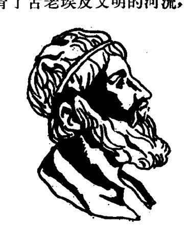
阿基米德是一位天文学家的儿子，公元前287年，出生在希腊殖民城市叙拉古城。年轻的时候，
- 39 -
阿基米德曾到亚历山大里亚来求学。在学者云集的艺神宫里，在藏书浩瀚的图书馆里，欧几里得几何学的无穷奥妙，深深地吸引着这位未来的数学巨人。
阿基米德的几何著作是古代精确科学的高峰。右图是以阿基米德名字命名的螺线。阿基米德得到了这样一个定理：该螺线的第一圈与初始线所围成的面积（图中的阴影部分），等于第一个圆（以 \(O\) 为圆心，以 \(OA\) 为半径）的面积的三分之一。
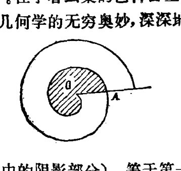
在阿基米德的墓碑上，人们根据他的遗愿铭刻着一个几何图形，也是阿基米德生前最为得意的一个定理：以球的大圆为底，以球的直径为高的圆柱，其体积是球体体积的二分之三；其包括上下底在内的表面积，是球体表面积的二分之三。
很清楚，阿基米德是以精确的数量关系，去揭示几何图形间的内在联系。他还灵活地运用穷竭法，计算出许多曲边形的面积，不仅得到了许多前人难以得到的结果，还给后来微积分的创立者们以非常有益的启迪。
古典时期的希腊数学家们，通常也是哲学家；而亚历山大里亚时期的希腊数学家，通常却是工程师。阿基米德就是一位杰出的工程师。他坚定地反对唯心主义的数学观点，把数学同生活中的具体问题，同其他自然科学紧密地结合起来，大胆地用数学方面的卓越发现，解决天文学、力学，甚至军事上的问题。他常常用严格的论证，使在实践中积累的经验上升为系统的理论。比如，他巧妙地用几何的方法证明力学结论，用杠杆的原理去计算抛物弓形的面积等等。
近代数学史专家倍尔说，任何一张写有最伟大的数学家
- 40 -
的名单中，必定会包括阿基米德。其实，尽管人们把阿基米德、牛顿(1642—1727年)和高斯(1777—1855年)并列为历史上最伟大的数学家，然而，一提起阿基米德，人们却往往津津乐道于他的发明创造。由于他的发明创造大大超出了他所处时代一般的技术水平，所以，在人们的心目中，阿基米德的发明创造似乎比他的数学研究重要得多。
据说，阿基米德制作了一个天体地球仪，坐在家里就能了解星体的运行情况，甚至还可以观察日食和月食哩；他还发明了螺旋扬水器，能把河水提上岸来灌溉土地……
最脍炙(kuài zhì)人口的传说，要数阿基米德测定王冠的故事了。有一次，叙拉古国王定做了一顶纯金的王冠，做成后却老是怀疑工匠们在王冠里掺了银子。他既想知道王冠中纯金的含量，又舍不得弄毁王冠，怎么办呢？这可是个大难题，国王决定请阿基米德来解决这个难题。阿基米德冥思苦想了好长时间，也没有想出一个好办法。有一天，他到公共浴室去洗澡，心里仍然想着王冠问题。当他漫不经心地跨进装满水的浴盆时，水溢出盆外，哗哗流了一地。猛然间，一个念头闪过他的脑际：不同质料的东西，虽然重量相同，但因体积不同，各自排去的水必不相等。而根据这个道理（即阿基米德浮力定律），去测定王冠中纯金的含量，就相当省事了。阿基米德高兴得忘乎所以，竟连衣服也忘了穿，就跑到大街上忘情地高喊"找到啦，找到啦"。
阿基米德是一位伟大的科学家，也是一位伟大的爱国者。当罗马帝国的军队侵犯他的家乡时，七十多岁高龄的阿基米德挺身而出，竭尽他的心智，为保家卫国而战斗。传说阿基米德制作了一面巨大的抛物镜，把阳光聚焦后反射到罗马的战
- 41 -
舰上，燃起熊熊大火；他发明了一种投石器，能迅速掷出成批的石子，把逼近城墙的罗马士兵打得头破血流。整整三年，罗马侵略军付出了惨重的代价，也无法闯进叙拉古的城门。阿基米德的威名，使罗马士兵胆战心惊，每当城头有新的器械晃动，他们就惊呼“又来了”，吓得抱头鼠窜。阿基米德的智慧，连他的敌人也不得不钦佩，罗马军队的统帅马塞尔曾经沮丧地说：“我们是在与数学打仗吗？他（阿基米德）安稳地呆在城里，却能焚毁我们的战舰，一下子掷出铺天盖地的石头，真象神话中的百手巨人。”
公元前212年，弹尽粮绝的叙拉古城终于陷落了，罗马士兵开始了血腥的屠杀。据说，阿基米德似乎不知道城池已被攻破，他正在沙地上思索着一个数学问题，他是那样的全神贯注，以致没有听见罗马士兵粗暴的喝问。一只沾满血污的皮靴，踩乱了阿基米德画在地上的几何图形，老人抬起头来，愤怒地吼道：“滚开些，不要踩坏了我画的图！”……
阿基米德的功绩是不朽的。两千年来，茫茫天地之间，一直回荡着阿基米德那豪迈的声音：“给我一个支点，我就可以推动地球。”
· 42 ·
出色的计算¶
地球是颗星球，在漫无边际的宇宙中遨游。
在今天，这是每个小学生都熟知的常识；在古代，却是一个了不起的发现。首先提出这种科学假说的光荣，属于毕达哥拉斯派的学者。很自然地，人们会问：地球有多大呢？对于没有人造卫星，没有宇宙飞船的古代科学家来说，要回答这个问题，可不比登上月球容易多少。
公元前240年左右，才华横溢的希腊数学家伊拉托森尼（约公元前284—前192年），交出了第一份出色的答卷。
伊拉托森尼是亚历山大里亚图书馆的馆长，一位知识渊博、多才多艺的学者，在数学、哲学、地理、历史、语言、诗歌诸领域，均有很深的造诣。他是怎样测出地球周长的呢？
在亚历山大里亚（图中用A表示）的正南方，有一个城市叫塞尼（图中用S表示）。伊拉托森尼了解到，每年夏至那天正午，阳光能够直接射进塞尼城的水井底部，也就是说，那时太阳的位置恰好在塞尼城的天顶，太阳光直指地心。而在同一时刻，在亚历山大里亚，天顶方向（OB）与太阳方向（AD）的夹角∠BAD是360°的1/50。由于太阳离地球的距离很远，他把SE和AD看作是两条平行线。因为同位角相等，所以∠SOA也

· 43 ·
是360°的1/50，进而可知AS弧的长度是整个圆的周长的1/50。于是，只要知道亚历山大里亚到塞尼的实际距离，乘上50，就可以得到地球的周长了。最后，伊拉托森尼测定地球的周长是39250千米。
这是一个相当精确的计算结果，显示了古希腊数学家高超的计算能力。也反映了在亚历山大里亚时期，数学家们日益注重数学的运算，日益关心起对生活有用的数学成果。数学的第三个本质特征——广泛的应用性，也就逐渐显露了出来；整个古希腊文明的数学成就，也就达到了最高点。
科学的兴衰是与时代的变迁密切相关的，数学的发展也不例外。历史进入公元后，随着希腊奴隶制度的日益衰败，古希腊文明开始衰落了。在以后的六百年里，除了在公元一世纪前后，托勒密等人创立了一门新的定量几何学——三角术外，整个希腊的几何学，就再也没有产生过值得称道的成果了。
公元147年，希腊遭到古罗马军团毁灭性的进犯，加速了古希腊文明的衰落。罗马帝国的统治者，进行战争是行家里手，而对于怎样发展数学却几乎一窍不通。他们鄙视数学，满足于能用数学知识进行简单的计算和测量，在一千多年的古罗马文明史中，竟没有一个配得上数学家称号的人，真是可怜。罗马人的到来，自然是希腊数学的灭顶之灾，数学著作被肆意焚毁，数学家也惨遭迫害。历史上第一个杰出的女数学家海帕西娅（约370—415年），就因为不肯信奉罗马的宗教，被人在大街上撕得七零八落。
备受摧残的希腊数学，如同地壳下奔突的岩浆，承受着巨大的压力，也默默地积蓄着力量，一俟时机成熟，便会呼啸着
· 44 ·
喷突而出。果然，在公元三世纪，数学家丢番图（246—330年）又发出了震聋发聩的呼声。
丢番图是古希腊最后一个大数学家。他的生平，后人知道得很少，只是从他奇特的墓志铭上，了解到他曾享有八十四岁的高龄。
丢番图的墓志铭，实际上是一道数学应用题，上面这样写着：
丢番图的童年是他生命的六分之一。他生命的十二分之一是他的青年时期。又过了生命的七分之一他才结婚，婚后五年有了一个孩子。孩子活到他父亲一半的年纪便死去了。孩子死后，丢番图又活了四年。过路人，你知道丢番图的年纪吗？
要知道丢番图的年纪，必须解一个代数方程。而代数方程，又正是丢番图主要的研究对象。
古希腊的数学家们，大都是“几何学家”。他们把二次幂 \(x^2\) 理解为图形的面积，把三次幂 \(x^3\) 理解为图形的体积，对于三次以上的乘幂，认为它们没有几何意义而不予承认。丢番图不受这些几何观念的束缚。他认为，从代数的角度看，高次幂是有意义的，比如 \(x^4\)，就是四个 \(x\) 相乘，从而肯定并大胆地运用它们。这样又把数学引入一个广阔的天地。
丢番图比欧几里得晚出生六百年，也编写了一部数学著作。这本书叫《算术》，共有十三卷，但只有六卷流传了下来。《算术》和《几何原本》同属古希腊数学著作，两者的风格却大异其趣。《算术》由一些安排得很有条理的练习题组成，它告诉人们怎样做，却不谈为什么要这样做，更没有讲理论依据是什么。一切都是凭直观的、经验的，这种风格非常接近古埃及
的纸草文书。这也正好说明，丢番图更多地受到了古埃及文明的影响。
《算术》的第一卷，是一些简单方程的练习题。比如第27题：两个数的和是20，积是96，求这两个数。丢番图设 \(2x\) 是这两个数的差，那么大数是 \(10+x\)，小数是 \(10-x\)，于是得到方程 \((10+x)(10-x)=96\)，解之得 \(x^2=4\)，\(x=2\)（丢番图不承认负数，丢掉了一个根 \(x=-2\)）。所以这两个数是12和8。丢番图的解法在当时是一个巨大的进步，它摆脱了用几何作图方法解方程的老传统，打破了繁琐的几何方法对代数研究的限制，促进了代数学的发展。
在《算术》的其他五卷里，丢番图对不定方程作了广泛的研究。什么是不定方程呢？如果一个方程中含有两个或两个以上的未知数，这个方程就叫不定方程。比如 \(3x+4y=7\)，\(x^2+y^2=25\) 等等。不定方程的解有无穷多个，解题时常常需要很高的技巧。丢番图正是一位聪明的解题能手，他用许多巧妙的方法解出了许多类型的不定方程。现在，为了纪念他，外国人还把研究不定方程的数学分支叫做丢番图分析哩。
当然，丢番图不是第一个研究不定方程的数学家。比丢番图更早，我国古代数学书籍《九章算术》里，就开始研究不定方程了；而另一本中国数学书籍《张邱建算经》，则更是以大规模研究不定方程而闻名。只是由于古代中外文化交流不发达，中国古代数学家的工作才不如丢番图那样有名气。
丢番图在希腊数学研究中独树一帜，为代数学的发展作出了杰出贡献。然而，他一个人的努力，改变不了希腊数学衰落的总趋势，他的成就，也就成了希腊数学的回光返照。
公元640年，新崛起的阿拉伯人给了希腊亚历山大里亚文
- 46 -
明最后一击。这些征服者，同过去的罗马侵略者一样，大肆焚毁希腊的科学著作。他们甚至公然宣称：“这些书的内容，或者是可兰经里已有的，那样的话，我们不需要读它们；或者它们的内容是违反可兰经的，那样的话，我们不该去读它们。”
在蒙昧和宗教的接连打击下，延续了一千多年的古希腊文明中止了它活跃的科学生命。
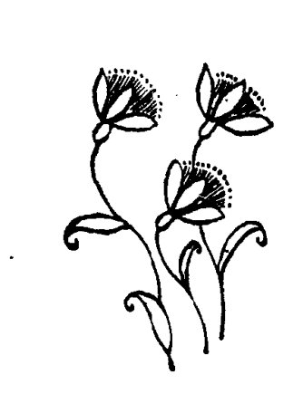
· 47 ·
筹算之术
当古希腊的灿烂文明沉没在地平线下面的时候，古老的中国文明犹如一轮红日，在世界的东方发出绚丽夺目的光彩。
欧洲中世纪的开始，使数学史上以古希腊几何学为标志的一个历史时期结束了。接下来的数学史，以显赫的地位记载着中华民族的杰出贡献，而这一大段辉煌的历史篇章，实际上在春秋、战国时期就已经揭开了扉页。
我国历史上的春秋、战国时期（公元前770—前221年），古希腊还处在奴隶制的鼎盛阶段，而我国已经发生了一场巨大的社会变革，在世界上最早实现了从奴隶制向封建制社会的过渡。
社会制度的大变革，极大地促进了生产力和科学技术的进步。为适应农业生产精耕细作的需要，春秋、战国时期，出现了都江堰、郑国渠等规模宏大、世所罕见的水利工程，对天文历法的研究也达到了很先进的水平。所有这些，都需要有精细的计算，推动我国的计算技术也发展为当时世界第一流的水平。
考察一下我国“算”字的起源，是很有意思的。“算”字在古代有三种写法：筭、算、祘。“祘”字的起源带有一种神秘色彩，而“筭”、“算”二字则都与一种计数工具有关。我国的第一部字典《说文解字》说：“筭，长六寸，所以计历数者。从竹、弄，言常弄乃不误也。”意思是：“筭”是一种六寸长的竹制计数工
·48·
具，因此是“竹”字头，下面加一个“弄”字，表示经常摆弄它们就可以使计算准确无误。《说文解字》又说：“算，数（这里读 shǔ，是动词）也，从竹、具，读若筭。”意思是：“算”与“筭”同音，表示用“筭”这种计数工具计数，所以是“竹”字头加一个工具的“具”字。
《说文解字》所提到的计数工具，就是我国古代劳动人民独创的算筹，也就是一束细竹棍，也有制作得十分精致的骨制算筹。
算筹究竟是什么时候发明的？与我国古代的其他许多发明创造一样，由于年代久远，缺乏记载，已经难以确定了，不过至迟不会晚于春秋、战国时期。战国时期的一位著名学者老子说过这样一句话：“善算者不用筹策（善于计算的人可以不用算筹）。”可见那时候算筹已经是很普遍的计算工具了。
我们知道，我国是世界上最早发明十进位值制记数法的国家。算筹发明出来以后，使我国古代的记数方法更加臻于完善。古代的一部数学著作《孙子算经》曾经十分精炼地介绍了算筹记数的方法，说：
“凡算之法，先识其位。一纵十横，百立千僵，千十相望，万百相当。”
（在计算的时候，首先要识别数位。个位用纵式表示，十位用横式表示，百位是纵式，而千位是横式，所以千位和十位隔位相望，而万位和百位的记法完全相同。）
原来，算筹记数分纵式和横式两种：
| 1 | 2 | 3 | 4 | 5 | 6 | 7 | 8 | 9 | |
|---|---|---|---|---|---|---|---|---|---|
| 纵式 | Ⅰ | Ⅱ | Ⅲ | ⅢⅠ | ⅢⅡ | ⅢⅢ | ⅢⅢⅠ | ⅢⅢⅡ | ⅢⅢⅢ |
| 横式 | 一 | 二 | 三 | 亖 | 丄 | 丄一 | 丄二 | 丄三 | 丄亖 |
· 49 ·
其中满六以上，纵式中用一根横筹表示五，横式中则用一根纵筹表示。
把我国古代的算筹记数方法与其他国家和地区作一个比较，可以很容易地看出，算筹记数确实具有很大的优越性，是很先进的方法。
古代希腊是用二十七个字母相互配合来表示1000以内的数目，错综复杂，令人眼花缭乱。罗马数字虽有了很大改进，可是它也不是位值制的，使用起来仍然相当麻烦。罗马数字在十二世纪以前一直盛行于欧洲，进行运算是欧洲人大伤脑筋的事情。
比如，要计算235×4。用我国古代的算筹来计算，只需先布置算筹如图1，然后用 ||| 乘 || 三. |||| 的首位，口呼乘法口诀"四二得八"，同时在两数中间的空行置上 [Figure: 算筹符号表示8]；次呼"四三十二"，同时于空行添置| 二（其中首位|添在前面已置的 [Figure: 算筹符号表示8] 成为 [Figure: 算筹符号表示9]），最后呼"四五二十"，并在空行添置 二（添在前面已置的 二 成 三）。于是得出乘积 [Figure: 算筹符号表示9] 三（940），如图2。
但是，用罗马数字来计算这道题，单是写出被乘数，就不是很简单的：235要记成CCXXXV（C表示100，X表示10，V表示5）。
计算的第一步，是把CC、XXX、V分别重复地写四遍：
CCCCCCCC; XXXXXXXXXXXX; VVVV。
然后数出五个C，改写成D（D表示500）；数出十个X，改写成C；四个V则改写成XX：
DCCC; CXX; XX
· 50 ·

再进一步合并，其中四个X（即40）又改写成XL（单独的L表示50，这里XL是50-10的意思），这才得出乘积是DCCCCXL（940）。
这该多么繁琐啊！难怪在中世纪的欧洲，能够精通四则运算的人就可以称得上学者了。甚至到了1662年，一位剑桥大学毕业的英国高级官员、晚年担任皇家学会会长的裴比斯，为了学习乘法表，还不得不每天黎明四点就起床，依灯苦读。他在1663年12月的一则日记中写道：“我妻子立即从床上起来，整个下午我们一起做算术习题。她已能熟练地演算加、减、乘法，因此我就不打算再用除法去困扰她了……”
然而，只是精通四则运算的人，在我国的春秋、战国时期就已经很难有资格称为学者了。
春秋时期，齐国有一位很有作为的国君，叫齐桓（huán）公。他很想干一番大事业，需要罗致一批有学问的人为他出谋划策，于是就专门修了一座招贤馆。可是过了一年，还没有
·51·
一个人登招贤馆的门。齐桓公正在发愁的时候，一个东野的老百姓应征来了。齐桓公十分高兴，立即把他请了进来。
齐桓公问道：“你拿什么来证明你的才学呢？”
那人回答说：“乘法口诀‘九九歌’就是我的见面礼。”
齐桓公一听，不觉大为扫兴。他讥讽地说：“‘九九歌’也能用来显示你的才学吗？”
那人不慌不忙地说：“懂得‘九九歌’确实谈不上是什么大学问，但是如果您对这样的人都能厚礼相待的话，那么天下人就都会相信您有求贤的诚意。到了那个时候，您还愁招不来真正的贤士吗？”
这一席话，不禁使齐桓公听得连连点头，心想这人虽是个山野之人，却是谈吐不凡，于是非常恭敬地把他接到招贤馆住了下来。
这件事一传十、十传百，不出一个月，果然有许多有学问的人从四面八方前来投奔齐桓公。齐国人才济济，国力日益强盛，齐桓公终于成了春秋时期的第一个霸主。
从这个故事里，我们可以看出，在春秋时期，算术运算即使在民间也是一个很普通的常识了。那时候，很多人腰间总系着一个装有算筹的小袋，随时都可以取出算筹来进行计算，正如《说文解字》所说的那样，“常弄乃不误也。”
算筹的发明和广泛使用，对我国古代数学的迅速发展产生了巨大而深远的影响。在筹算（即运用算筹进行运算）的基础上，我国逐步形成了具有独特风格的古代数学体系，精于计算，正是这个数学体系的一大特色。我国古代把数学称为“算术”（比我们现在所说的算术涵义要丰富得多），是很能反映这一特色的。
· 52 ·
“规矩”的传说
我们勤劳、智慧的祖先，真不愧是创造发明的能手。在计算技术方面，他们发明了算筹；在几何学应用方面，他们也发明了两样构造简单而功效卓著的工具——“规”与“矩”。
“规”，就是画圆的圆规；“矩”，就是折成直角的曲尺。从保留至今的历史文物中，我们还依稀可见古代“规矩”的模样，汉朝武梁祠石室造像中，就有伏羲(xī)手执矩、女娲(wā)手执规的形象。伏羲和女娲是古代神话中中华民族的远古祖先，透过神话的色彩，我们可以想见，规矩的发明也是年代十分久远的事情。
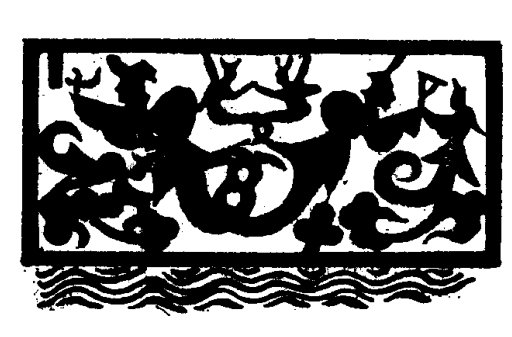
关于规矩的发明，古代流传着几种不同的传说。
有一种传说，认为规矩是春秋末期、战国初期(公元前五世纪)的著名工匠公输般(即鲁班)发明的。战国时期，规与矩已成为民间很普通的工具了，当时有不少学者都论及规矩，比如墨子说过“执其规矩，以度天下之方圆”，孟子说过“不以规矩，不能成方圆”，可见当时规矩的应用是很普遍的。不过，规
· 53 ·
矩却未必是鲁班发明的。
根据另一种传说，规矩在比鲁班早一、二千年的时候就已经发明出来了。大禹治水的时候，还用规矩作过测量工具哩！司马迁的《史记》中，就记载着这样的故事。
公元前二十一世纪的时候，我国正由原始社会向奴隶社会过渡，生产力的发展，使我们的祖先有可能以扩大了的规模展开改造自然的斗争。他们世世代代在黄河的怀抱里生息、劳作，歌颂过金色的收获，也诅咒过黄色的水患。各个部落的人民便联合起来，决心治理黄河，制服水患。
舜（shùn）是当时部落联盟的首领，他派鲧（gǔn）领导治水。鲧治水非常努力，可是他不懂得按自然规律办事，一味采取堵截的办法来治水，结果越堵水患越严重，付出了惨重的牺牲。
鲧治水失败以后，舜又派鲧的儿子禹（yǔ）领导治水。禹吸取了前人失败的教训，注意按自然规律办事，根据河流的走势，疏浚河道，因势利导。为了规划出正确的治水方案，他不避艰辛，翻山越岭，实地勘察山川形势。今天，在黄河三门峡的鬼门岩上，还可以见到一处形状象马蹄印的石坑，传说那就是禹当年跃马临川留下的痕迹呢！《史记》在记述禹的这一事迹时说：禹"陆行乘车，水行乘舟，泥行乘橇（qiāo），山行乘檋（jú），左准绳，右规矩，载四时，以开九州，通九道。"这里特别提到了禹随身携带着测量工具——准绳和规矩。
禹坚持治水十三年，"三过家门而不入"，终于取得了治水的胜利。他为民造福的牺牲精神，在历史上传为千古美谈；他运用规矩"望山川之形，定高下之势"，使数学工具在改造自然中大显奇功，也被历代数学家引为楷模。
千年星移斗转，几度人间沧桑。古代的人民在无数次测高望远、度圆划方的实践中，将规矩运用得更加出神入化。公元前十一世纪末期的周朝初年，出了一位名叫商高的数学家，对"用矩之道"作了一次精彩的理论总结。
周朝初年的著名政治家周公旦，是开国国君周武王的弟弟。武王死了以后，周公便辅弼(bì)武王的儿子周成王治理天下，他治国有方，深得民心。
有一次，周公把商高请去，向他请教数学。谈到"用矩之道"的时候，商高讲了这样一番话：
"平矩以正绳，偃矩以望高，覆矩以测深，卧矩以知远。环矩以为圆，合矩以为方。
"是故知地者智，知天者圣。智出于勾，勾出于矩。夫矩之于数，其裁制万物，唯所为耳。"
前一段话，精炼地概括了矩的广泛而灵活的用途，意思是：把矩平放在地上，可以定出绳子的铅直；把矩竖立起来，可以测量高度；把矩倒立过来，可以测量深度；把矩平卧在地上，可以测量两地之间的距离。矩旋转一周，就形成圆；两个矩合拢来，就形成一个方形。
后一段话，更是精辟地道出了我国古代几何学的真髓。为了理解这段话的意思，还得先了解一下"勾股形"。
什么是"勾股形"呢？
原来，我国古代在进行天文测量时，在地上竖起一根木竿，叫做"表"。表的垂直可以用矩来定（就是前面讲到的"平矩以正绳"）。表在地面上投射出一道日影，于是表和日影便构成了一个直角三角形的两条直角边。我国古代，就把直角三角形称为"勾股形"，表那条直角边称为"勾"，日影那条直角
- 55 -
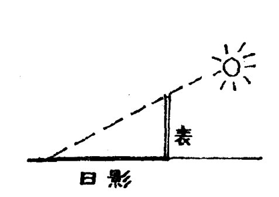
边称为“股”，勾股形的斜边称为“弦”。测出勾股的长度，便可以粗略地推算出太阳的高度。
商高论“用矩之道”的后一段话，就与这种勾股测量的方法有关。他这段话的意思是：知天文识地理的人是很有学问的，而这种学问就来自勾股测量，勾股测量又依赖于矩的应用。矩与数结合起来，就可以设计和制作天下的万物。
为什么说商高的这段话道出了我国古代几何学的真髓呢？
第一、商高在这里指明了，在我国古代几何学中，形与数是结合在一起的，偏重于研究几何图形的度量性质（长度、面积等），几何学离不开计算。在西方，以古希腊几何学研究为发端，在很长时期内，形与数是分开研究的，只是到了近代，形与数才在解析几何里得到了统一。因此，形数结合，是我国古代几何学的一个特点，也是一个优点。
第二、商高在这里特别强调了几何学与实践的密切联系。一方面，几何学知识来源于测高望远等社会实践；另一方面，几何学知识又广泛地应用于社会实践。我国古代几何学偏重于应用，这与古希腊几何学偏重于概念和逻辑结构的完美相比照，又是一种完全不同的风格。这两种风格异其旨趣，各有所长。
· 56 ·
我国古代几何学的独特风格，是有其优越性的。在商高论“用矩之道”的时候，他就提出了一个著名的命题：“勾三股四弦五”。这是我国历史上关于“勾股定理”最早的一种陈述，无疑是一个杰出的理论创造，比毕达哥拉斯发现同样的定理要早得多。到了春秋、战国时期，一方面几何学知识应用得更加广泛，无论是农业和手工业生产，还是天文历法的研究，都离不开几何学知识；另一方面，丰富的实用几何学知识又为进行抽象的理论研究提供了基础。
就在这样的历史条件下，我国古代科学宝库中，又增添了一块瑰宝——《墨经》。
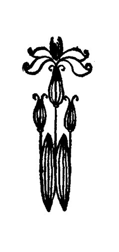
· 57 ·
墨家的几何成就
春秋、战国时期，社会经济基础的变革带来了学术思想的活跃，诸子蜂起，“百家争鸣”，出现了一个文化学术空前繁荣的局面。墨子创立的墨家，便是诸子百家中影响很大的一家，曾与孔子创立的儒家并称为“世之显学”。
墨子名翟（dí），大约生活于公元前478—前392年。他早年曾经是一个技艺相当高超的工匠，创立墨家学派以后，学生也大多是下层社会的能工巧匠。他们结成了一个组织纪律十分严密、很有战斗力的政治、学术团体。
有一次，墨子在齐国听说楚王准备发兵攻打弱小的宋国，还请来公输般打造了攻城的云梯，便急如星火地奔赴楚国。他步行了十天十夜，一双脚板全都磨得血肉模糊了，终于抢在楚王发兵之前赶到了楚国。他劝说楚王不要发动这场将给两国百姓带来灾难的战争，可是楚王自恃兵力强大，又有云梯这般厉害的攻城器械，根本不听墨子的劝说。墨子便说：
“云梯固然厉害，难道宋国就不会有更厉害的防守办法吗？”
说罢，他就解下自己的腰带，摆成城墙的样子，又拿起一块木片当作守城器械，当场与公输般的云梯模型比试起来。果然云梯攻不破他的防守。
楚王恼羞成怒，想杀掉墨子再发兵攻打宋国。不料墨子却仰面大笑起来：“你杀了我又有什么用呢？我来之前，已经
· 58 ·
派我的学生禽滑釐（读qín gǔ lí）带上三百人赶到宋国去了，现在宋国早已作好了守城的准备。”
楚王知道，墨家素以组织严密、吃苦耐劳、英勇善战而闻名于天下，他的学生们在执行使命时，即使上刀山、下火海，也是决不回头的。无奈，楚王只好放弃了攻打宋国的计划。
经过这番经历，公输般也受到了很大的教育，从此不再为统治者制造战争器械，转而去致力于生产和生活上的创造发明了。
墨家不仅身体力行地宣传和贯彻他们进步的政治主张，表现出很强的战斗力，而且在思想上有明显的唯物主义倾向，重视生产劳动和科学实验，善于发现，勇于探索，因而在自然科学方面也有许多天才的创造。墨家对自然科学的造诣之深，在诸子百家中是独一无二的。他们著述的《墨经》六篇，不仅是我国古代自然科学的瑰宝，而且在世界的自然科学发展史上也享有崇高的地位。
你一定知道物理学中著名的“针孔成像”实验吧？你知道世界上最早的“针孔成像”实验是谁做的吗？正是两千多年前的墨家。
《墨经》中详细地记载了针孔成像的实验：一个人面立在有一点状小孔的屏幕前，光线从背后照来，在屏幕后面的壁上
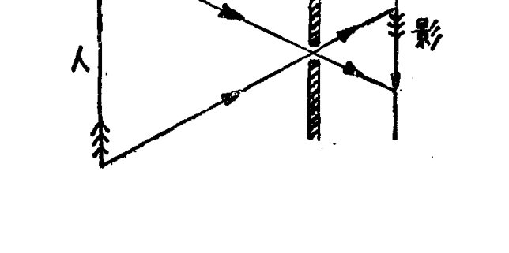
- 59 -
便出现一个倒立的人影。
这是什么原因呢？《墨经》解释说：“光之入照若射”——这是因为光是直线进行的缘故。这样，就把光学上一个最基本、最重要的原理揭示得清清楚楚了。
还要提到的是，《墨经》中关于光学的文字，并不限于“针孔成像”这一条，而是有八条文字组成一个相当完整的逻辑体系，系统地说明了阴影的形成、针孔成像、球面反射镜成像等实验结果和原理，可以说是一篇完整的几何光学论文。
几何光学，就是用几何方法研究光学问题，它在近代物理学中是光学的一个分支。墨家在两千多年以前就对几何光学具有如此精深的造诣，与他们在几何学上的成就是分不开的。
《墨经》中关于数学特别是几何学问题的学说，大约二十余条，言简意赅（gāi），包含着精当的数学概念、严密的逻辑推理和深刻的数学思想，构成了一个相当丰富和严谨的理论体系，充分表明我国古代学者将劳动人民积累起来的丰富的数学知识，上升为抽象的数学理论，已经达到了相当严谨、缜密的程度，足以与大约同一时期的欧几里得《几何原本》相媲美。
关于圆和方的概念，《墨经》是这样定义的：
“圜，一中同长也”。圜，就是圆。这条定义是说，圆是有一个中心，中心到周界的距离处处相等的图形。
“方，枉隅四讙也。”“枉隅”代表正方形的各边各角。这条定义是说，正方形的四条边、四个角各各相等。
显然，这些定义与现代的有关定义是一致的。
此外，《墨经》关于点、直（线）、平行等概念的定义，与现代的有关概念也都极相符合。
· 60 ·
特别值得一提的是，《墨经》中还有两条十分精辟的几何命题，其基本思想与现代公理化几何理论中的两条连续公理极为相似。这两条连续公理是欧几里得《几何原本》中所没有的，直到十九世纪末才由德国数学家希尔伯特补充进来。
第一条连续公理又叫“阿基米德公理”，它说：
设任意给定两线段 \(a\) 和 \(b\)，那么，\(a\) 重复相加若干次后，其和必可以大于 \(b\)。

在《墨经》中，则有这样一条命题：“穷，或有前，不容尺也。”这里的“或”字与“域”字相通。对于直线上的情况而言，这条命题的意思就是：
如果一条直线是有限长的，那么用尺测量，一定可以超出这条直线。
第二条连续公理又叫“康托公理”，它说：
如果对一条线段 \(A_0B_0\) 进行无限次截取，使得每一次截得的线段 \(A_iB_i(i=1,2,3,\cdots)\) 连同端点在内，都完全落在前面的线段 \(A_{i-1}B_{i-1}(i=1,2,3,\cdots)\) 内部，并且要截多么短就可以截多么短，那么，一定存在唯一的一个点 \(C\)，落在所有的线段 \(A_0B_0\)、\(A_1B_1\)、\(A_2B_2\)、\(\cdots A_nB_n\cdots\) 的内部。
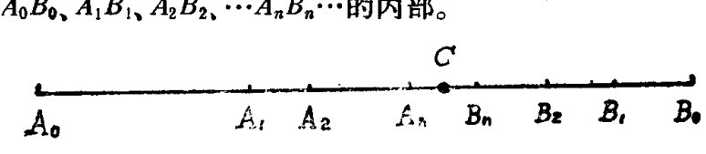
在《墨经》中，也有这么一条命题：“新半，进前取也。前则
- 61 -
中无为半，犹端也。前后取，则端中也。”这里的“新”作截割讲；“端”，就是“点”。这条命题的意思是：
如果把一条线段一次又一次地分割成两半，那么就可以一直做到剩余部分不能再分割为止，这个不能再分割的剩余部分就是一个点；如果每次都割去线段的前、后两小段，那么最后必然在线段的中间剩下一个点。
用不着作更多的说明，我们只需将《墨经》的两条命题与现代公理化几何理论中的两条连续公理两相对照，便不能不叹服我国的古代学者在数学的理论思维上，已经达到了何等深邃而精妙的程度，就这两条命题而言，是比古希腊几何学还要高出一筹的。
在《墨经》中，还记载着墨家对于力学的研究成果，其中包括对于杠杆平衡原理的论述，以及对应用杠杆、斜面、滑轮等力学原理创造的几种简单机械的描写和说明。
墨家对当时的自然科学有如此广博而深刻的造诣，使我们不由得想起古希腊那位以博学多才而闻名的伟大学者阿基米德，前面提到的第一条连续公理就是以他的名字命名的，而在西方自然科学史上，也把他看成是研究杠杆平衡原理的第一人。墨家所取得的科学成就，与阿基米德多么相似啊！也许，我们可以说，墨家就是中国的阿基米德吧？
可是，查一查年代，就可以发现，墨家撰写《墨经》的时间至少要比阿基米德早一百年左右，也就是说，当墨家取得那些辉煌的科学成就的时候，阿基米德还没有出生呢！与其说墨家是中国的阿基米德，倒不如说阿基米德是西方的墨家更加符合历史。
· 62 ·
独特的几何证明
如果说《墨经》关于几何学的理论研究以其定义的精当、命题的严谨、思想的深邃，可以与古希腊的几何学体系媲美，那么，我国古代关于几何命题的证明，则以别有特色的思想和方法，在世界数学史上独树一帜。
前面已经说过，在公元前十一世纪末期的周朝初年，商高就已经发现了勾股定理。这件事记载在一部叫做《周髀（bì）算经》的古书中。
《周髀算经》是一部天文学著作，也是我国最古老的一部数学著作。象其他许多年代久远的古代典籍一样，这部著作的作者和成书年代都已经无从查考。它可能不是由某一个人编著的。书中结集了周秦以至西汉随天文学研究而积累起来的学术成果，有些内容可以上溯到公元前六世纪，而商高与周公讨论数学的故事，更是上溯到了公元前十一世纪末，但这部著作大约是在公元前 100 年左右才最后编定。
公元三世纪时的三国时代，吴国有一位名叫赵爽的数学家，对《周髀算经》进行了注释。在注释到勾股定理时，他专门写了一篇"勾股圆方图说"，并附了一幅"弦图"，对勾股定理作出了严格而简捷的证明：
以弦为边长作一个正方形，它的面积称为"弦实"。在这个正方形内的四个直角三角形，其面积称为"朱实"（原图中涂以红色）；中间所围出的小正方形，其面积称为"黄实"（原图中
- 63 -
弦图
《几何原本》中勾股定理的证明

涂以黄色)。显然这个小正方形的边长等于勾、股之差。因为“弦实”等于四个“朱实”与中间“黄实”的和，于是
对于这条定理，古希腊数学家是怎样证明的呢？
毕达哥拉斯是否证明过勾股定理，还一直没有找到过这方面的历史记载。在欧几里得的《几何原本》中，对勾股定理的证明很复杂，需要先证有关全等三角形以及三角形面积的一些定理，因此要拐弯抹角地做不少推导。所以勾股定理在《几何原本》中出现得很迟（第 47 命题），而且在全书中几乎没有再用到。《几何原本》对这么重要的定理作这样的处理，是不合理的，但是由于受到它的逻辑体系和几何思想的限制，也就只好这样处理。
把赵爽的证明与欧几里得的证明作一个比较，显然赵爽的证明要简捷明快得多。赵爽关于勾股定理的证明思想，是把
· 64 ·
复杂的平面几何问题，归结为研究平面图形的面积，然后通过对面积的代数运算而完成对几何问题的证明。这是一种几何代数化的思想。这种思想方法，与古希腊几何学偏重于概念之间的逻辑关系，把形与数割裂开来，是完全不同的风格。
几何代数化的思想是我国古代数学的一大特点，也是一大优点。赵爽在“勾股圆方图说”中，还运用这种思想证明了一系列勾股形恒等式，都是将平面图形进行移、合、拼、补，通过代数运算而得到的。这些重要结果，要比古希腊几何学关于直角三角形的研究内容远为深刻和丰富。
还要提到的是，与赵爽大约同时的刘徽，对勾股定理也给出了一个证明，其基本思想也是利用平面图形的面积，巧妙地加以移、合、拼、补之后，甚至无须代数运算，而勾、股、弦之间的关系便可一目了然。刘徽把这种方法概括成一个基本原理，称为“出入相补原理”。这个原理是说：一个平面图形从一处移置到另一处，面积不变；又若把图形分割成若干块，那么各部分面积的和等于原来图形的面积。立体的情形也有类似的结论。“出入相补原理”，在我国古代几何理论中占有很重要的地位。
刘徽的证明大体上是这样的：
如图所示，\(ABC\) 为勾股形，以勾为边的正方形为朱方，以股为边的正方形为青方。按图中的标示进行出入相补后拼成弦方，依面积关系显然有关系式
即
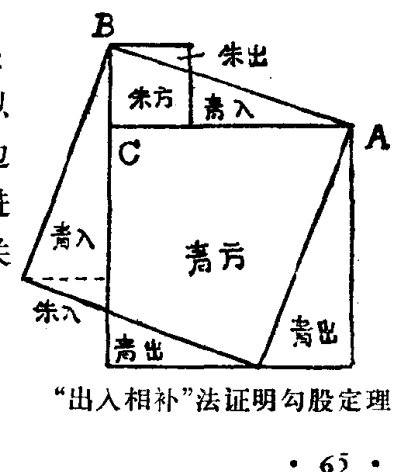
“出入相补”法证明勾股定理
- 65 -
弦²＝勾²＋股²。
运用这个图形，甚至不需要标注任何文字，只要按图所示涂以朱、青二色，就把这种证明思想表示得清清楚楚了。难怪华罗庚教授提出，如果我们人类要与其他星球上可能存在的高级生物交流信息，最好是送几张表示数和形的图去，其中就可送去我国古代用“出入相补原理”证明勾股定理的这张图。如果外星球真有高级生物接收到这张图，那么，他们很快就能理解，给他们送图的“邻居”不但懂得数形关系（勾股定理），而且善于几何证明，必定是具有高度智慧和文明的友邻。
欧几里得是很难提供如此密集而明快的信息的。
顺便提一下，1972年发射的星际飞船“先锋10号”，已经给“外星人”送去了一块由美国科学家设计的信息板，上面最引人注目的是两个正在招手致意的地球人形象。这种设计能不能使“外星人”理解地球人的友好感情，曾经引起过不少争议。照我们看来，这种设计是不如华罗庚教授提出的设计方案的。
· 66 ·
《九章算术》
“今有上等禾 3 捆，中等禾 2 捆，下等禾 1 捆，共打谷 39 斗；上等禾 2 捆，中等禾 3 捆，下等禾 1 捆，共打谷 34 斗；上等禾 1 捆，中等禾 2 捆，下等禾 3 捆，共打谷 26 斗。问上、中、下三种禾每捆各打谷多少？
“答案：上等禾每捆打谷 \(9\frac{1}{4}\) 斗，中等禾每捆打谷 \(4\frac{1}{4}\) 斗，下等禾每捆打谷 \(2\frac{3}{4}\) 斗。”
试试看，你能正确地解答这道数学应用题吗？
这是一道十分古老的数学题，收录在我国古代的一部数学著作《九章算术》里，距今至少有一千八百多年了。
《九章算术》最初是由谁、在什么时候开始编纂的，现在已经难以确考了。据数学史家们研究，这部著作是我国秦汉时期的数学家们历时一、二百年之久的智慧结晶，汇集了当时数学研究的主要成就，至迟在公元一世纪时形成了流传至今的定本。
《九章算术》是用问题集的形式编写的。它一共收录了 246 道数学应用题，分为“方田”、“粟米”、“衰分”、“少广”、“商功”、“均输”、“盈不足”、“方程”、“勾股”等九章。前面提到的那道“上、中、下禾”问题，就是“方程”章的第一道题。书中不仅给出了各道题的答案，还详细叙述了解题的方法和原理；也有几
· 67 ·
章，是先介绍某种一般方法和原理，再列出若干例题。因此，《九章算术》是一部结合典型例题系统地介绍数学理论和方法的著作。这种编写方法，有利于启发人们触类旁通，举一反三，也反映了我国古代数学一贯注重实际应用的传统，对后代数学家产生了很深刻的影响。
《九章算术》中的各类数学问题，都是从我国古代人民丰富的社会实践中提炼出来的，与当时的社会生产、经济、政治有着密切的联系。
第一章“方田”，主要讲各种形状的田亩面积的计算，同时系统地叙述了分数的各种计算方法。
第二章“粟米”，讲各种比例问题，特别是关于各种谷物间的比例交换问题。
第三章“衰分”，讲的是一些比例分配问题。
第四章“少广”，专讲开平方、开立方、开立圆问题。
第五章“商功”，专讲土木工程中提出的各种数学问题，主要是各种立体体积的计算。
第六章“均输”，讲如何按人口多少、路途远近、谷物贵贱，合理摊派捐税徭役的计算问题。
第七章“盈不足”，介绍了一种叫做“盈不足术”的重要数学方法，问题涉及的内容则多与商业有关。
第八章“方程”，系统地介绍了线性方程组的解法，其中又提出了正负数的概念及其加减运算的法则。
第九章“勾股”，主要讲勾股定理的各种应用问题，还提出了一般二次方程的解法。
在同一时期的世界其他国家和地区，很难找到一部数学著作象《九章算术》这样，包罗了如此丰富的深刻的数学知识，
- 68 -
同时又与社会经济生活密切相关并得到广泛的应用。它的问世，标志着我国古代完整的数学体系的形成，成为我国古代数学发展的一座重要里程碑。
《九章算术》的意义还远不止于它在中国数学史上的重要地位，更以一系列“世界之最”的成就，反映出我国古代数学在秦汉时期已经取得在全世界领先发展的地位。这种领先地位，一直保持到公元十四世纪初。
《九章算术》最早系统地叙述了分数约分、通分和四则运算的法则。象这样系统的叙述，印度在公元七世纪时才出现，欧洲就更迟了。欧洲中世纪时作整数四则运算就够难的了，作分数运算更是“难于上青天”，有一句西方谚语，形容一个人陷入困境，就说他“掉进分数里去了”。
《九章算术》最早提出了正、负数的概念并系统地叙述了正负数的加减法则。负数概念的提出，是人类关于数的概念一次意义重大的飞跃。在印度，直到公元七世纪才出现负数概念，欧洲则是到十七世纪才有人认识负数概念，然而，甚至在十九世纪的欧洲，也还有一些数学家认为负数没有实际的意义。
《九章算术》提出的“盈不足术”，也是我国古代数学中的一项杰出创造。用两次假设，可以把一般的方程化为盈不足问题，用“盈不足术”求解。这种方法可能在九世纪时传入了阿拉伯，十三世纪时又从阿拉伯传入了欧洲。意大利数学家斐波拉契(1170—1250年)最先向欧洲介绍了这种算法，并把它称为“契丹算法”（即“中国算法”）。
《九章算术》中最引人注目的成就之一，是它在世界上最早提出了联立一次方程（即线性方程组）的概念，并系统地总
- 69 -
结了联立一次方程的解法。
为了说明《九章算术》的这一成就，让我们回到前面提到的“上、中、下禾”问题上来。你不妨把自己的解法与下面介绍的《九章算术》的解法作一个对照。
解答这个问题，就是要解三元一次方程组
在《九章算术》中，首先用算筹把这个方程组的各项系数及常数项布列成一个方阵（为了方便起见，我们把原著中的算筹数码改写成阿拉伯数码，把从右到左直行排列方式改成从上到下横行排列方式，又加添了圆括号把这个方阵括起来）：
方阵布好以后，就用一种“遍乘直除”（这里的“除”是减的意思，“直除”就是连续相减）的方法，对方阵进行变换：
先用上行首项遍乘中行各项，得到
再把中行各项连续地减去上行各对应项，直到使中行首项为零（在这里就需连续两次相减），得到
· 70 ·
又用同样的方法，以上行首项遍乘下行各项，然后将下行各项直除上行各对应项，直到使下行首项为零，得到
接下来，以中行第二项遍乘下行各项，再将下行各项直除中行各对应项，直到使下行中项也为零，得到
现在这个方阵的下行相当于方程
于是得
约分化简得
这就是答案中的“下等禾每捆打谷 \(2\dfrac{3}{4}\) 斗”。类似地求得上等禾每捆打谷 \(9\dfrac{1}{4}\) 斗，中等禾每捆打谷 \(4\dfrac{1}{4}\) 斗。
把上面的解法与你的解法对照，你会发现，上面的解法实质上就是你在初中代数中学习的“加减消元法”。不过你是采取对应项互乘，然后只须一次相减，就可消去一个元，而不是象《九章算术》那样，仅仅“一面”乘，然后多次相减消元。你的解法更简便一些。但是，你当然不会忘记，《九章算术》出现在
- 71 -
一千八百多年以前。在那遥远的古代，我们的祖先已经总结出了这种程序化的解法，而在印度，是在七世纪才出现线性方程组解法，在欧洲，最早提出三元一次方程组解法的是十六世纪的法国数学家布脱。还值得注意的是，《九章算术》把方程组各项系数和常数项布列成数字方阵，然后直接对方阵进行“遍乘直除”的变换，从而求出方程组的解，这种方法体现了我国算筹记数的优点，为现代高等代数中用矩阵的初等变换解线性方程组的方法提供了雏形。
在初等代数的发展中，方程问题始终占据着中心地位。对方程的研究是沿着两个方向进行的：方程的元数由一元而多元，方程的次数由一次而高次。线性方程组解法，则是全部方程问题的基础，又是近代高等代数的一个起点。我国古代从《九章算术》提出线性方程组解法，到十三世纪宋元时期数学家提出“天元术”、“四元术”及高次方程数值解法，在研究方程问题的两个方向上都是遥遥领先的。美国著名数学史家史密斯公正地评论说：“从许多事实证明中华民族是富有才华的，中国人是建立早期数学科学的先驱者。”
- 72 -
“割圆”的人
公元三世纪，由三国到魏晋的这一个时期，我国历史舞台上人才辈出，群英荟萃，不仅出现了曹操、诸葛亮、周瑜等富有文韬武略的杰出政治家、军事家，出现了华佗这样的“神医”，而且出现了赵爽、刘徽等卓越的数学家。
赵爽是以注释《周髀算经》而知名的，我们已经在前面介绍过了。刘徽则是以他的《九章算术注》，大大丰富和发展了以《九章算术》为代表的我国古代数学体系，成为世界上最伟大的数学家之一。
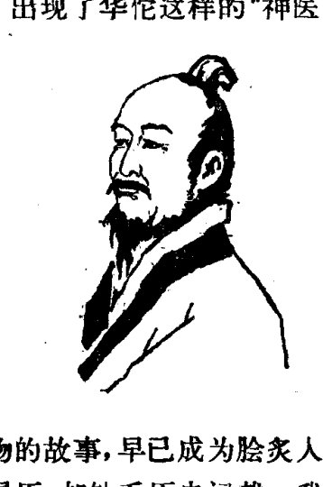
关于曹操、诸葛亮等历史人物的故事，早已成为脍炙人口的千古佳话，而关于刘徽的身世履历，却缺乏历史记载。我们只知道刘徽的家乡是在曹魏统治下的北方，今山东省临淄（zī）或淄川一带；刘徽是在公元263年撰写《九章算术注》的，也就在这一年，蜀国后主刘禅成了魏军的阶下囚，此后两年，司马氏取代曹氏而建立了晋王朝。
当时，《九章算术》成书至少已经一百多年了，但是，天下有学问的人虽多，却很少有人有志趣于深入研究《九章算术》而达到融汇贯通的境界，这就是刘徽在《九章算术注》的自序
- 73 -
中指出的：“当今好之者寡，故世虽多通才达学，而未必能综于此耳。”刘徽在少年时代就学习了这部数学经典，成年以后又进行了反复的、深入的研读，得出了许多新颖、独到的见解。为了使这部数学经典的学术思想流传后代、发扬光大，他倾注自己的心血撰写了《九章算术注》，正如他自己所说的，“是以敢竭顽鲁，采其所见，为之作注”，表现了一个数学家勇于探索、勇于进取的大无畏精神。
刘徽的治学态度十分严谨。他在为《九章算术》作注的过程中，刻意探求前人的数学思想，但又不迷信前人、墨守旧说，敢于纠正前人的错误，根据社会实践中积累的新知识，提出新的见解，创造新的方法。他也以同样的求实精神对待自己，勇于公开承认自己的“无知”。《九章算术》中的球体体积计算公式是不正确的，后来有大科学家张衡（公元78—139年）试图改进，仍然不正确。刘徽直率地批评张衡“欲协其阴阳奇偶之说而不顾疏密”，“乱道破义，病也”。与此同时，他提出可以通过计算一种叫做“牟合方盖”的复杂立体的体积，来推求球体的体积，但是，他没有能完全解决这个问题，于是他坦诚地说：我本来很想推究出“牟合方盖”的性质，但唯恐违背了正理，因此把它作为一个疑问记录下来，留待后人解决（欲陋形措意，恐失正理。敢不阙疑，以俟能言者）。果然，在二百多年以后，祖冲之和他的儿子祖暅在刘徽未完成的这项研究的基础上，出色地解决了球体体积的计算问题；同时把刘徽研究这个问题的思想发展成一种严谨的体积理论，称为“祖暅原理”。
刘徽特别注重深入探求数学的一般原理，他说：“事类相推，各有攸归，故枝条虽分而同本干（gàn）者，知发其一端而已。”又说：“触类而长之，则虽幽遐诡伏，靡所不入。”意思是
·74·
说，数学就象树干上分出许多枝条一样，是有共通的基本原理可循的，掌握了基本原理，就可以举一反三，广泛应用。《九章算术注》自始至终都贯穿了这种思想。他对《九章算术》中的各种数学方法作了系统的论证，阐释了其中的一般原理。由于刘徽的注释，《九章算术》中的许多数学概念得到了更严格的表述，许多数学方法得到了推广或创新。
刘徽在《九章算术注》中的创见很多。他正确地说明了正、负数的意义，指出："今两算得失相反，要令正负以名之。"就是说，得失相反的两种量，要分别记成正数和负数。他还系统地总结和发展了我国古代独特的几何理论，明确提出了"出入相补原理"，并运用这一原理证明了一系列几何命题。他也是世界上最早创造十进小数记法的人，在他之后将近一千二百年，才有阿拉伯数学家阿尔·卡西使用十进小数。此外，刘徽还专门撰写了一卷"重差术"作为《九章算术注》的附录，把我国古代测量数学的水平又向前推进了一大步。到唐代的时候，这一卷被抽出来作为一部独立的著作，称为《海岛算经》。
刘徽最伟大的数学成就，是他在研究圆周率的过程中，创造了"割圆术"这一数学方法。
"割圆术"是怎么回事呢？
我们知道，圆周率是指圆的周长与直径的比率。在刘徽之前，我国通常采用的是"周三径一"的"古率"，即取圆周率为3，很不精确，它实际上是圆内接正六边形周长与圆的直径之比，而不是圆的周长与直径之比。但是，刘徽却从中得到了启发：如果把

·75·
圆周分割成十二等分，作出圆内接正十二边形，那么它的面积和周长就相应地比圆内接正六边形更接近于圆的面积和周长，因而用圆内接正十二边形周长与圆直径之比作圆周率的近似值，就比“周三径一”精确一些。如果再进一步细分，作出圆内接正二十四边形，那么又可求出更精确一些的圆周率近似值。“割之弥细，所失弥少。割之又割，以至于不可割，则与圆合体而无所失矣”。这就是刘徽“割圆”的思想。
刘徽运用“割圆术”，从圆内接正六边形一直割到圆内接正一百九十二边形，得出圆周率的不足近似值为 3.14，又用几何方法把它化为分数 \(\frac{157}{50}\)。用同样的方法，继续分割下去，一直割到圆内接正三千零七十二边形，又求得圆周率的近似值为 \(\frac{3927}{1250}(=3.1416)\)。这个结果是当时世界上圆周率的最佳近似值。
刘徽的“割圆术”，是一种包含极限思想的数学方法。圆周是一条曲线，圆径是一条直线，曲与直是一对矛盾。刘徽的“割圆术”化曲为直，以直代曲，只要把圆周分割得足够细，那么圆内接正多边形的面积和周长就可以充分地接近圆的面积和周长，从而圆周率要多么精确就可以计算得多么精确。这在本质上是一种辩证法的思想。刘徽在一千七百多年以前的数学研究中就获得了朴素的辩证法思想，是非常伟大的。
在世界数学史上，“割圆术”早在古希腊时期就创立了，但是刘徽是独立地创造这一方法的；运用“割圆术”由圆内接正多边形逼近圆周，从而计算圆周率的近似值，则是刘徽所首创。他的这一创举，开启了我国古代圆周率研究的新纪元。二百多年以后，祖冲之就在圆周率研究中取得了划时代的伟大成就。
- 76 -
“祖冲之山”
月儿高高挂在天上，诱发了人们多少美好的遐思和幻想——于是，产生了嫦娥奔月的动人故事，产生了大诗人苏东坡的优美诗句：“明月几时有？把酒问青天。不知天上宫阙，今夕是何年？我欲乘风归去，又恐琼楼玉宇，高处不胜寒。起舞弄清影，何似在人间！”
现代科学技术，已经使人类的视线扫描了月球的每一个角落；1969年7月20日，月球上第一次留下了人类的足迹。当古人的幻想变成现实的时候，人们发现，月球上固然没有琼楼玉宇，倒的确有些冷清寂寞，到处都分布着环形山。
是古往今来的科学家为人类插上了登月的翅膀，于是，人们就用一些伟大科学家的名字给月球上的环形山命了名，其中有一座环形山，叫“祖冲之山”。
祖冲之（429—500年），是我国古代一位伟大的科学家。他生活在南北朝时期。这时，遥远的地中海地区正在发生历史的转折——公元476年，西罗马帝国灭亡了，标志着欧洲奴隶社会历史的终结和中世纪黑暗的开始；而在我国，封建制度已经存在了将近一千年。虽然南北朝时期，我国出现了南北对峙的分裂局面，但总的来说，我国的封建制度仍是上升发展的势头，国家

·77·
暂时的分裂，改变不了我国国家统一、各民族融合的历史总趋势。生产力的发达，经济的繁荣，文化的昌明，这些远较中世纪的欧洲优越的社会条件，为我国古代科学技术长久地保持世界领先地位提供了肥沃、厚实的土壤，也造就出了祖冲之这样的大科学家。
祖冲之出生在一个几代人都对天文历法很有研究的家庭里。他的祖籍是北方的范阳郡遒（qiú）县（今河北省涞水县北），由于北方各民族统治者连年混战，使北方人民不堪忍受，就大批南迁，祖冲之的祖辈也迁居到了江南，祖父和父亲都在南朝做过官。由于研究天文历法必须有深厚的数学功底，因此在这个有天文历法研究传统的家庭里，对祖冲之从小就教育很严，让他“专攻数术”。祖冲之小时候并不很聪明，他自己回忆说，还很“钝愚”。但是，他学习十分刻苦，广泛搜求自古以来的各种科学著作，认真研读。特别可贵的是，他在学习中决不囫囵吞枣、轻信盲从，而是殚思竭虑，穷根究底，深入探求深奥的科学道理，对前人的见解一一加以考察核验，既博采前人的精华，又批判前人的谬误，决不“虚推古人”。经过这样刻苦的研读，祖冲之在青年时代就已经成了一个很有学问的人，进了朝廷的学术机关“华林学省”。后来，祖冲之担任了公职，在繁杂琐碎的公务之余，仍孜孜不倦地致力于科学研究，终于在三十三岁前后，同时在数学和天文学方面作出了伟大的成就。
祖冲之在数学方面最伟大的成就，是关于圆周率的研究。
我国古代数学家对圆周率的研究历久不衰，有很好的基础。东汉大科学家张衡用 \(\sqrt{10}\) 表示圆周率，刘徽《九章算术注》中得出圆周率的分数值 \(\dfrac{3927}{1250}\)，都是当时世界第一流水平的
- 78 -
成就。祖冲之对前人的成果作了认真的研究，并不满足，于是继续推算，终于得出了更精确的结果：
另外又给出了圆周率的两个分数值："约率" \(\dfrac{22}{7}\) 和"密率" \(\dfrac{355}{113}\)。
祖冲之的这一成就，创造了数学史上圆周率研究的世界纪录。把圆周率这个无理数（无限不循环小数）——虽然当时对这一点还没有明确的理论认识——限定在两个数值之间，这本身就是一个创见，而祖冲之给出的这两个不足近似值和过剩近似值精确到小数点后第七位，更是当时世界上的最好结果。"约率"和"密率"很便于记忆，尤其是"密率" \(\dfrac{355}{113}\)（\(= 3.1415929\cdots\)）准确到六位小数，而且是分子、分母在 1000 以内表示圆周率的最佳渐近分数。
祖冲之的这项世界纪录，保持了一千年以上，才由阿拉伯数学家阿尔·卡西（于 1427 年）和法国数学家维叶特（1540—1603 年）求出圆周率更精确的数值，德国数学家奥托重新得到 \(\dfrac{355}{113}\) 这个分数形式的结果，已是 1573 年。因此，人们把 \(\dfrac{355}{113}\) 称为"祖率"，以纪念祖冲之在圆周率研究方面的卓越贡献。
祖冲之是怎样求得这几个结果的呢？
祖冲之的数学著作早已失传，因此无法确切地知道祖冲之的推算方法。据数学史家们分析，他很可能是采用了刘徽的"割圆术"。如果这个分析不错的话，那么，祖冲之就需要从圆内接正六边形一直分割到圆内接正 12288 边形和圆内接正 24576 边形，依次求出各多边形的周长和面积。这个计算量是相当巨大的，至少要对九位数字反复进行一百三十次以上
- 79 -
的各种运算，光是乘方和开方就有近五十次，运算过程中的有效数字达十七、八位之多；任何一点微小的失误，都会导致推算的失败。这需要多么坚韧顽强的意志和严谨细致的作风啊！
深厚扎实的数学功底，严谨求实的科学态度，加上十几年如一日地坚持天文观测，使祖冲之在取得圆周率研究的卓越成就的同时，在天文学研究方面也取得了辉煌的成就。他编制了新的历法——大明历，对旧的历法进行了重大的改革。这一成就，使他又成为我国历史上最伟大的天文学家之一。
大明历编成以后，祖冲之就奏请朝廷批准颁行，却遭到了一帮守旧官僚的竭力反对。戴法兴是最受皇帝宠幸的权臣，文武百官都惧怕他。他仗着权势，蛮横地说古人制定的历法“万世不易”，“不可革”，诬蔑祖冲之改革历法的行动是“诬天背经”，又说天文历法“非凡夫所测”，“非冲之浅虑，妄可穿凿”。这么一个大人物一发难，一帮惯会溜须拍马的腐败官僚也就纷纷附和，大有向祖冲之兴师问罪的架势。
科学与迷信从来势不两立。作为一个科学家，虽然当时祖冲之官职卑微，但面对权臣的淫威却毫无惧色，写出气势磅礴的驳议《辨戴法兴难新历》，与以戴法兴为代表的守旧官僚展开了针锋相对的论战。他说，自己长期进行天文观测，“亲量圭尺，躬察仪漏，目尽毫厘，心穷筹策”，并对大量的天文观测资料进行科学的研究，“考往验来，准以实见”，从而发现了古人历法的错误，才着手改革，编制了大明历。如果“古法虽疏，永当循用”，那还成什么道理呢？针对戴法兴之流把天文历法说得神秘莫测，一味迷信古人、因循守旧的唯心主义观点，祖冲之明确指出，日月星辰的运行“非出神怪，有形可检，有数可
- 80 -
推”，是有一定规律的；随着时代的发展，科学也总会进步，不断有新的发现，“岂得信古而疑今”！
祖冲之把戴法兴之流驳斥得无言以对。可是，尽管真理在祖冲之这一边，权势却掌握在守旧派手里，大明历仍然被压制了四十多年。公元500年，祖冲之去世了，他的儿子祖暅继承父亲的遗志，两次向朝廷要求修改历法，终于使大明历在公元510年由朝廷正式颁行。
祖暅也是一位杰出的数学家。他一生中经历了不少坎坷，先是由于在治淮工程中获罪受了徒刑，后来又曾被北朝拘执软禁。无论是在身处逆境的时候，还是在仕途顺利的时候，祖暅都始终坚持研究数学和天文学。他在数学上的一项杰出成就，就是继承刘徽所提出的通过研究“牟合方盖”而推求球体积的思想，完成了刘徽的这项未竟的研究，正确地得出了球体积的计算公式，同时明确地提出了“任一等高处横截面积相等的两个立体，它们的体积也必相等”这样一个结论，这就是著名的“祖暅原理”。这个结论在西方以“卡瓦列里公理”的形式出现（卡瓦列里，1598—1647年，意大利数学家），比“祖暅原理”要晚一千一百余年。
祖冲之与祖暅父子曾经编著过一部《缀术》，在唐代还是朝廷钦定的数学教科书。令人惋惜的是，这部“指要精密，算氏之最”，“时人称之精妙”的珍贵数学名著，后来竟失传了。
祖氏父子的数学著作虽然失传了，但他们对科学的贡献却是永远不会磨灭的。月球上的“祖冲之山”，就是人类为这位伟大科学家竖立的一座永恒的纪念碑。
- 81 -
《算经十书》
我国封建社会历经一千多年的发展，到隋唐时期，达到了空前的繁荣。国家的统一，中央政权的强大，经济的繁荣，国力的强盛，文化的昌明，都是当时世界其他国家和地区所望尘莫及、叹为观止的，真是"物华天宝，人杰地灵"，灿烂的中国古代文明，发出了更加绚丽夺目的光彩。秦汉时期所形成的中国古代数学体系，发展到这一时期，内容也更加丰富了。
隋唐时期，数学教育得到了朝廷的重视，曾经在当时的国立高等学府——国子监中，专门增设计学馆，招收学生，教习数学，培养通晓数学的专门人才。唐代还在科举考试中开考数学科目，通晓数学的知识分子可以通过科举考试而求得官职。通晓数学，被认为是一个官员最首要的才能之一。唐代的一位地方行政长官、青州尚书杨损，任人唯贤，在提拔下级官员时总要听取各方面的意见，实行严格的考察。有一次，有两个下级官员，年龄、资历、工作实绩等方面的条件不分上下，大家反映两人都可提拔。怎样把其中更优秀的人才选拔出来呢？杨损很费踌躇，终于想出了一个好主意。他把那两名下级官员召来，给他们出了一道数学题："有一个人傍晚从树林里路过，无意中偷听到一群盗马贼正在议论如何分赃：如果每人分6匹马，就还剩下5匹；如果每人分7匹马，就又差8匹。问有多少个盗贼、多少匹马？"其中一个官员很快就把答卷交上来了，于是他就得到了提拔。通过一场数学竞赛选拔了优秀
· 82 ·
人才，大家都对杨损佩服得五体投地。
为了提高数学教育的水平，初唐永徽年间（公元650—655年），唐高宗李治还敕令议大夫李淳风率国子监算学博士等人审定、并注释了历代的十部数学著作，后世通称为“算经十书”，由高宗钦定为国子监算学馆的教科书，规定了各部算经的修业年限。科举考试中数学考试的命题，也以这十部算经为依据。
算经十书，汇集了我国从秦汉到初唐的七、八百年间数学成就的大成。这十部算经，除了前面已经介绍过的《周髀算经》、《九章算术》、《海岛算经》（即刘徽《九章算术注》附录“重差术”的单行本）、《缀术》外，还有《孙子算经》、《夏侯阳算经》、《张邱建算经》、《五曹算经》、《五经算术》和《缉古算经》。
《缉古算经》是初唐数学家王孝通所著，书中的二十道数学题大都较难。隋朝统一中国以后，展开了筑长城、凿运河等规模宏大的工程，对数学知识和计算技能提出了更高的要求。王孝通治学严谨，特意搜求前人没有解决的实际问题加以探讨，获得了重大成就。他在解决复杂的工程问题中提出了三次方程，并求出三次方程的正根，比阿拉伯人和欧洲人研究三次方程问题要早好几百年。
《张邱建算经》创作于南北朝时期，大约是在公元466—485年间写成的。书中涉及广泛的社会实际问题，其中世界闻名的是“百鸡问题”：“今有鸡公1只，值5钱；鸡母1只，值3钱；鸡雏3只，值1钱。用100钱买100只鸡，问鸡公、鸡母、鸡雏各可以买多少只？”这是一个不定方程问题，书中十分精炼地给出了这个问题的解法和全部正确答案（有三组整数解）。
· 83 ·
《孙子算经》是一部在世界数学史上也占有显著地位的数学著作。这部算经用孙子的名字命名，但它的作者并不是那位在世界军事学术史上赫赫有名的、我国春秋末期的伟大军事家孙武子，成书年代也要晚得多，大约也是写作于南北朝时期，比《张邱建算经》问世要早。不过，我国的军事术语“运筹”一词，含有运用算筹规划作战方略的意思，蕴含着一种很深刻的数学思想。善于“运筹帷幄”的军事家孙子，想必也是精通筹算的。《孙子算经》借用他的英名流传于世，可能也是出于作者对这位伟大先哲的仰慕吧？
《孙子算经》十分精辟和系统地论述了我国古代十进位值制的算筹记数方法。它特别强调“凡算之法，先识其位”，指出了识别数位的重要性，表明我国古代对十进位值制有明晰的理论认识。
《孙子算经》中最著名的问题，是“物不知数”问题。这道题是这样的：
“今有一堆物体不知其数，三个三个地数，最后剩二；五个五个地数，最后剩三；七个七个地数，最后剩二。问这堆物体的数目是多少？”
这道题流传开来，人们把它作为一种有趣的智力游戏，还给它取了“秦王暗点兵”、“韩信点兵”、“鬼谷算”等具有传奇色彩的名称。
这道题也是一个不定方程问题，在数论中属于一次同余问题。《孙子算经》给出了它的一般解法，人们把这个解法编成了一首琅琅上口的歌诀：
“三人同行七十稀，五树梅花廿一枝， 七子团圆正半月，除百零五便得知。”
· 84 ·
把它写成算式就是
其中 \(N\) 是所要求的物体总数，\(r_1, r_2, r_3\) 分别为各次剩余数，\(P\) 是一个正整数。在这个算式中，如果把 \(r_1 = 2, r_2 = 3, r_3 = 2\) 代入，并取 \(P = 2\)，就求得 \(N = 23\)，这是这个问题的最小正整数解。
就这道题本身而言，当然也可以只用心算就把正确答案得出来（你不妨也试一试）。《孙子算经》的成就在于，它对"物不知数"问题的解法具有一般性，可以推广到一般的一次同余问题。这种推广，是由十三世纪时南宋著名数学家秦九韶完成的，这就是有名的"大衍求一术"。在欧洲，到1801年才由高斯给出了"物不知数"问题的一般定理，比《孙子算经》晚一千多年，比秦九韶也要晚五百多年。因此，在世界数学史上，这个定理被称为"中国剩余定理"，也称为"孙子定理"。这是我国古代数学的又一伟大成就。
我国古代对一次同余理论作出这样精深的研究，与天文学的发达具有密切的关系。古代天文学家在编制历法时，需要解联立一次同余式，在《孙子算经》之前，天文学家们就已经能够解决更复杂的一次同余问题了。因此，我国古代很多著名的科学家，既是天文学家，也是数学家。唐代的和尚一行，就是这样的一位伟大科学家。
一行（683—727年）本名张遂，一行是他的法号。他的一项伟大成就，就是发起并领导了世界上最早的一次对地球子午线的实际测量。他在制订《大衍历》时，创立了"自变量不等间距二次内插公式"，是数学史上的一项重要成就。一行年轻的时候，在嵩山普寂大师门下学习，就表现出了超群的才华。
- 85 -
有一次，大师请来一千余名高僧、隐士聚会，一位学问渊博的隐士写了一篇很艰深的文章，对大师说：请你选一名聪明的徒弟，我愿亲自向他讲授。大师就把一行召来，谁知一行只把文章浏览了一遍，就能一字不漏地背诵出来。这位隐士惊愕不已，对大师说，这个徒弟已经不是你所能够教导的了，应当让他出去游方求学。于是，一行不远千里，遍游名山，四处求师访贤，终于成了一位大科学家。
隋唐时期，我国与朝鲜、日本、印度等近邻的文化学术交流也十分活跃，并在其后的岁月里继续发展，这样，我国古代数学的杰出成就，就对这些亚洲近邻以至中东地区的阿拉伯国家，也产生了深远的影响。朝鲜和日本的数学教育制度和教科书，基本上是由我国引进的。我国古代算经中的有些数学问题，后来也几乎是未加改动地出现在印度的数学著作中。东方民族的数学成就在文化交流中相得益彰，使东方在漫长的中世纪中，成为世界数学发展的中心。
- 86 -
宋元四大家
七百多年前，一位叫马可·波罗的意大利青年，怀着对东方的向往，在沿着“丝绸之路”历经三年半的艰苦跋涉之后，于1275年初夏来到了中国。东方这片神奇的土地使他留连忘返，十七年之后，他才带着大量珍奇的珠宝和珠宝般珍奇的见闻，返回自己的祖国。后来，他在威尼斯与热那亚这两个意大利城市之间的战争中成为战俘，在狱中由别人代笔著述了《东方见闻录》，这就是有名的《马可·波罗游记》。这部游记向欧洲展现了一种前所未闻的东方文明，那里不但有广袤的土地，富饶的物产，繁华的都市，幽美的田园，而且有先进的生产技术，众多的发明创造。这一切，在欧洲人心目中都是神话般不可思议的奇迹，他们惊呆了。
这就是十三世纪时的情形。这时，我国的科学技术已经在世界上领先发展了一千余年；造纸术、印刷术、火药和指南针，这四项中华民族的伟大发明，在十三世纪前后陆续传入欧洲，使欧洲人得以利用这些先进的科学技术成就，锻造刺破中世纪黑暗的利剑。我国的古代数学体系，历经一千多年的发展，到这时也达到了光辉的顶峰，尤其是在代数学方面，取得了世界其他国家无与伦比的新成就，为世界数学的发展作出了辉煌的贡献。
这一时期我国数学的代表人物，是十三世纪四十年代到十四世纪初的五十余年间出现的四大数学家：秦九韶、杨辉、
·87·
李冶、朱世杰。
这四位数学家中，也许我们最熟悉的名字要算杨辉，这是因为在杨辉1261年所著的《详解九章算法》一书中，载有一幅“开方作法本源”图，人们把它称为“杨辉三角形”。它在世界上最早揭示出二项展开式的系数规律：
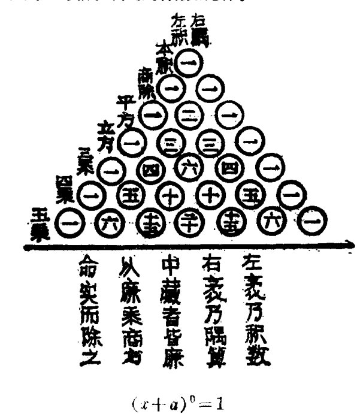
西方把这种“三角形”称作“帕斯卡三角形”，但帕斯卡(1623—
1662 年）造出它已经是十七世纪的事了，比帕斯卡更早一些造出这种“三角形”的阿皮亚努斯，也已经是在十六世纪（1527 年），都比杨辉晚二百多年或三百多年。然而把这种“三角形”称为“杨辉三角形”也并不确切。杨辉本人明确注明过，“开方作法本源”“出《释锁算书》，贾宪用此术”。贾宪是十一世纪初北宋的一位数学家，比杨辉早两个多世纪。因此，把这种“三角形”称为“贾宪三角形”更为恰当。
虽然“开方作法本源”不是杨辉首创，但是他使这颗前代的数学珍宝得以保存和流传下来（贾宪的原著已经失传），是有功劳的。杨辉是南宋末年一位优秀的数学教育家，从 1261 年到 1275 年，先后编写了《详解九章算法》、《日用算法》、《乘除通变本末》、《田亩比类乘除捷法》和《续古摘奇算法》等五种数学书。杨辉著述深入浅出，循序渐进，通俗易懂，便于普及。尤其可贵的是，他苦心搜求散失在民间的各种珍贵数学资料，并在自己编写的书中旁征博引，从而使许多原著已经失传的前代数学遗产得以保存下来。以杨辉的著作为依据，才使我们能够了解北宋数学家贾宪等人的数学成就，了解我国古代高次方程数值解法在两宋时期演进、发展的概貌。
高次方程数值解法在我国有悠久的历史，遥遥领先于世界各国。在我国古代，高次方程数值解法叫“开方术”。《九章算术》中已经有开平方术和开立方术，又有诸如 \(x^2+34x=71000\) 这种二次方程求正根的方法，叫开带从平方。世界上最早研究三次数字方程 \(x^3+px^2+qx=r\)（\(p\)、\(q\)、\(r\) 都不是负数）求正根方法的，是唐初（公元七世纪初）的数学家王孝通，这种方法叫开带从立方。到十一世纪时，贾宪在前人的开方术基础上又有新的创造，提出了增乘开方法，同时发现了二项展开
· 89 ·
式的系数规律——“开方作法本源”。增乘开方法与西方关于求解高次数字方程的霍纳方法实质上是相同的。霍纳（1786—1837 年）是英国的一位中学教师，1819 年在英国皇家学会宣读了他的论文《连续近似解任何次数字方程的新方法》。但他的“新方法”并不新，贾宪比霍纳早大约八百年就已经把它创造出来了。
1247 年，南宋数学家秦九韶完成了他的著作《数书九章》。在这部书的八十一道应用题中，就有二十多道题需要求解高次方程。这些方程具有形如
的一般形式，其中 \(a_{n}<0\)，其他各项系数可正可负；最高次幂达到 10，实际上对方程的次数已经没有任何限制。秦九韶娴熟地运用增乘开方法，对几乎每一道高次方程都详细列出了运算步骤，理论上则更加完善。把古代的高次方程数值解法发展到适合于任意次的一般方程，这是秦九韶的一个伟大贡献。
秦九韶（1202—1261 年），出生于四川安岳一个官僚地主家庭。他一生热衷于功名利禄，“喜奢好大，嗜进谋身”，为官贪暴，有不少劣迹。但他不同于那些不学无术的官僚，年轻时曾“访习于太史（掌管天文历法研究的官员）”，又曾跟随隐姓埋名的学者研习数学，对做学问是很能下苦功夫的，因此多才多艺，“星象、音律、算术以至营造等事，无不精究”，“游戏、毬、马、弓、剑，莫不能知”。在数学研究中，他继承了历代数学家的优秀学术传统，注重数学“经世务，类万物”的实际应用，而又深入挖掘数学理论的精微，“旁诹（zōu，商量、询问）方能，探索杳渺”，经过十年苦心钻研，才写成《数书九章》这部杰作。这
- 90 -
部书仿效古代算经应用问题集的传统形式，将八十一个应用问题分为大衍、天时、田域、测望、赋役、钱谷、营建、军旅、市易等九大类，反映了当时经济、政治、军事等广泛的社会实践的需要。它最突出的成就，除了高次方程数值解法外，关于一次同余问题（即《孙子算经》中的“物不知数”问题）的“大衍求一术”，也是具有世界意义的卓越贡献。因此，西方著名数学史家萨顿称颂秦九韶是“他的民族、他的时代以至一切时期的最伟大的数学家之一”。
在南宋数学家研究高次方程数值解法取得辉煌成就的同时，一种半符号式代数——“天元术”，在我国北方地区逐渐发展起来。1248年，也就是《数书九章》在南方问世的第二年，北方数学家李冶完成了他的数学著作《测圆海镜》；1259年，又完成了《益古演段》。这两部书对“天元术”作了总结。
李冶（1192—1279年），原名李治，真定栾城（今河北栾县）人，生于金朝，元朝灭金以后，他隐居在山西、河北一带，收徒讲学，声望很高。他学识渊博，生平著述很多，数学成就尤为卓著，《测圆海镜》和《益古演段》是他煞费心血、“精思致力”的结晶。
我们知道，在现在的代数学中，通常都是以字母 \(x\)、\(y\)、\(z\cdots\cdots\) 表示未知数；列方程解应用题，总要先“设某某为 \(x\)”，然后才布列出含未知数 \(x\) 的等式（即方程）。我们还通常用字母 \(a\)、\(b\)、\(c\cdots\cdots\) 表示已知数，而研究字母方程，比如说 \(ax^2+bx+c=0\)，就比逐个地研究各种二次数字方程更能揭示二次方程的一般规律。当我们赞赏这种符号代数的优越性时，不应忘记它的发展是极其缓慢的，到十六世纪以后，代数学才逐步形成现在通行的符号系统。在这之前，中国的“天元术”乃是一种
- 91 -
先进的半符号代数。
所谓“天元术”，就是用一个“元”字表示方程的一次项，或者用一个“太”字标示方程的常数项，使方程的筹式形成一种固定的模式，在布列方程时，则先“立天元一为某某”，相当于现在的“设 \(x\) 为某某”。在这里，“天元”、“元”、“太”等字样都是一种抽象的数学符号，而不带有这些汉字本来的意义。因此，我们说“天元术”是一种半符号式代数。
“天元术”可以解含一个未知数的方程，包括高次的一元方程，而这种半符号式代数由一元到二元、直到四元的推广，发展成“四元术”，是十三、十四世纪之交的数学家朱世杰完成的。
“四元术”中的天、地、人、物四元，相当于现在的 \(x\)、\(y\)、\(z\)、\(w\)，而方程的各项，在筹式中都有各自相应的固定位置。用“四元术”，可以解四元及四元以下的高次联立方程组。在欧洲，解多元高次联立方程组是十八、十九世纪的事，而在朱世杰的“四元术”中，已经采用了与后来英国数学家西尔维斯特（1814—1897 年）的方法极为相似的消去法和代入法。
朱世杰是元朝人，曾“以数学名家周游湖海二十余年”，“四方之来学者日众”。他终生致力于数学教育和数学研究，写出了集宋元数学大成的杰作——《算学启蒙》（1299 年）和《四元玉鉴》（1303 年）。朱世杰的著作，从正、负数的四则运算法则，一直写到当时数学发展的最高成就——“天元术”和“四元术”，形成一个相当完整的初等代数学体系，因此，被数学史家们认为是中世纪世界最杰出的数学著作，朱世杰则被誉为中世纪数学家当中最伟大的一个。
综观世界数学史，我国宋元时期秦、杨、李、朱四大数学名
· 92 ·
家无疑处在中世纪数学发展的前列。初等代数学的中心内容是方程问题，它在宋元四大家那里已经得到了相当充分的研究，高次方程数值解法和布列方程的理论“天元术”与“四元术”，都是当时世界数学发展的最高成就。还要看到的是，宋元四大家用代数方法研究的应用问题中，有相当多的几何问题，我国古代数学强调数、形结合，几何问题代数化的传统，由于宋元四大家精深的代数学造诣而得到了更系统的发展，成为解析几何的先驱。
我国古代数学家的卓越成就是不朽的！
· 93 ·
印度的代数学¶
印度，古称天竺(zhú)，也是一个历史悠久的文明古国。我国著名的神魔小说《西游记》里，绘声绘形地讲叙了唐僧取经的故事，唐僧师徒四人餐风宿露，历经九九八十一难，最后才到达"西天极乐世界"。其实，书中的"西天极乐世界"，指的就是印度。
孙大圣、猪八戒、沙和尚，大闹天宫，三打白骨精，……当然都是艺术的虚构，不过，唐僧取经确实是一桩真实的故事。公元627年，唐朝和尚玄奘离开长安，历尽千辛万苦去印度学习佛教，并在印度获得了"三藏大法师"的荣誉称号。公元645年，玄奘带着许多佛教经典载誉归国时，唐太宗李世民还在洛阳城接见了他呢！
唐僧取经，是古代中印两国文化交流的生动例证。据英国著名学者李约瑟研究，印度人更多地从这种交流中受到启迪。比如，在《九章算术》中有这样一个题目："今有池方一丈，葭(jiā，初生的芦苇)生其中央，出水一尺。引葭赴岸，适与岸齐。问水深、葭长各几何？答曰：水深一丈二尺，葭长一丈三尺。"后来，在印度作家的书中出现了这样一个题目：
"平平湖水清可鉴，面上半尺生红莲， 出泥不染亭亭立，忽被强风吹一边。 渔人观看忙向前，花离原位两尺远； 能算诸君请解题，湖水如何知深浅？"
• 94 •
两相比较，竟主要是葭变成了荷花。
印度的数学还受到过古希腊文明的影响，不过，印度比希腊古老得多，而且，任何一种外来的影响，都不能抑制一个民族自己的创造才能。古老的印度文明主要是印度人民自己的天才创造。
古代印度有着非常森严的等级制度，人们被分成四等，最高一等是婆罗门，即僧侣贵族，他们控制了印度的文化和教育。婆罗门有一个老习惯，喜欢把事情记在脑子里，而不是写在书本上，为了加强记忆，他们常把人民得到的科学知识，编入脍炙人口的历史故事或者琅琅上口的诗歌。所以，逸趣横生的印度古典作品，也时常显示出人们浓郁的数学兴趣。
有这么一则古老的历史传说。在印度舍罕王朝时，有一位宰相叫西萨·班·达依尔，他发明了国际象棋，并把它作为贡品献给了国王。国王觉得这种游戏非常有趣而且奥妙无穷，大为高兴，决定重赏西萨·班。
"爱卿啊，你希望得到怎样的赏赐呢？"国王问。
"陛下，"西萨·班作出诚惶诚恐的样子，指着棋盘回答国王说，"请您在第一个小格内，赏给我一粒麦子；在第二格内赏两粒，第三格内赏四粒。照这样下去，每一格内都比前一格加一倍。陛下啊，把这样摆满棋盘上所有六十四格的麦粒，都赏给您的仆人吧！"
"哈哈，只要这么点麦子？"国王觉得好笑，叫人马上拿一袋小麦来。
计数麦粒的工作开始了。第一格放一粒，第二格放两粒，第三格放四粒，……还没放到第二十格，袋子已经空了。一袋又一袋的小麦被扛到国王的面前来，可是，麦粒数一格接一格
· 95 ·
增长得那样迅速，把国王惊得目瞪口呆。他这才发现自己上当了，因为即使扛来全印度的粮食，也远远无法兑现他对西萨·班许下的诺言。
西萨·班要的小麦有多少呢？用数学式子表示是：\(1+2+2^2+\cdots\cdots+2^{63}\)。由等比数列的求和公式，得到总数是 18446744073709551615 粒小麦。这个数字可不小，它是全世界每年小麦产量的几千倍！
印度人的数学兴趣，也正如这个故事所反映的，主要集中在算术和代数方面。
从公元三世纪起，印度的数学进入了高潮时期，产生了许多独特的创造。其中最著名的要数“零”的使用和数码的书写了。
过去，人们用很多的符号来表示数字，而且百、千、万等等都是单独用符号表示的，应用起来很不方便。印度数学家采用了十进位值制的原则，并且把表示数字的符号减少到十个，
~ २ ३ ८ ५ ६ ७ ८ ९ ०
1 2 3 4 5 6 7 8 9 0
使它们形状各异不易混淆，大大地简化了数字系统。正由于此，印度的算术运算获得了巨大的进展。比如乘法，印度数学家发明了“十字相乘法”、“方格乘法”等几种简便的算法。即使是 \(325 \times 478\) 这样的运算，运用“方格乘法”仍是很轻松的。把被乘数写在网格的上面，乘数写在网格的左边，相应的积写在格中，然后沿对角线相加，将答数写在网格的下边和右边，排列起来就是乘积 155350。
- 96 -
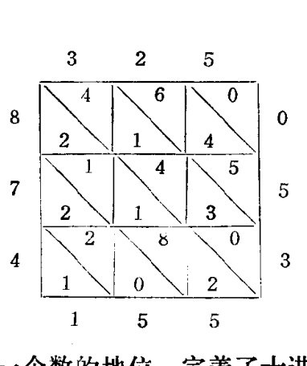
零是十进位值制记数法的精髓。虽然中国人早就采用了□这种记号，但那只是表示空位，而不是作为一个数参加运算。印度数学家在这个基础上更进一步，他们发明了0这个数码，并且把0当做普通的数一样参加运算，巩固了零作为一个数的地位。完善了十进位值制的记数方法，使其取代了形形色色的记数方法，成为现在最常用的记数方法。
这是一些了不起的开拓，十九世纪著名的数学家拉普拉斯(1749—1827年)曾经赞叹说：“用九个符号表示一切的数，使符号除具有形式的意义外，还有数位的意义，这一思想是如此简单，以致无法理解它的奇妙程度。就拿希腊最伟大而最有天才的阿基米德和阿波罗尼斯两人来说，他们也没有想出这种记数法，可见达到这一成就是多么不容易啊！”
希腊数学家虽然知道有\(\sqrt{2}\)这类无理数存在，但由于找不到合适的逻辑基础，因而固执地拒绝承认它们是数；印度数学家也遇到了无理数问题，他们从实践中感到，有时把它们和有理数一样地处理，也可得到正确的结果。只要结果对就行，印度数学家没有理会其中的逻辑难点。比如，\(\sqrt{3}+\sqrt{12}\)，他们知道象\(\sqrt{3}+\sqrt{12}=\sqrt{(3+12)+2\sqrt{3\times12}}=\sqrt{27}=3\sqrt{3}\)这样运算，结果是正确的，于是逐渐归纳出一些经验公式，在实际中广泛运用，这样就打破了有理数与无理数之间森严的界限。
· 97 ·
这里，我们看到了一种有趣的历史现象。数学是一门严谨的科学，古希腊人过分地追求严谨的效果，结果作茧自缚，在无理数面前裹足不前；而印度数学家凭借经验的帮助，随兴之所至地应用无理数，反而为有意义的代数学开辟了道路。
印度数学家大胆地引进负数，在解不定方程时，他们要求得到所有的整数根，这也高出希腊人丢番图一筹。总的来说，在代数学方面，印度数学家的成就超过了古代希腊。
印度数学弥补了古希腊数学片面强调几何学的缺陷，赋予了代数学与几何学相等的地位，并作出许多重要的开拓，给了其他文明以非常有益的启迪。遗憾的是，印度的代数学，如同埃及的数学一样，只是一些闪光的数学思想，一些零散的经验公式，还没有建立起严谨的逻辑体系。所以，严格意义上的代数学，还有待于后代数学家们不懈地努力。
- 98 -
阿拉伯数码
世界上的语言有成千上万种，汉语呀，英语呀，法语呀，德语呀，……，几乎每一个民族都有自己的语言。然而，不管你走到哪个国家，即使是随手翻开一本数学书籍，也会从陌生的文字中看到你熟悉的数学符号：0、1、2、3、4、5、6、7、8、9，这就是人们常说的阿拉伯数码。阿拉伯数码？你也许会想，这当然是阿拉伯人的创造发明罗。其实，称之为阿拉伯数码，完全是一个历史的误会。
那么，这个误会又是怎样产生的呢？
这，得从阿拉伯人的历史谈起。
在公元七世纪以前，阿拉伯人还是些比较原始的游牧部落，他们没有繁华的都市，甚至还缺少定居的村落，终年厮守着牧群，在阿拉伯半岛上漂泊。公元570年，在现在沙特阿拉伯王国境内的麦加城，诞生了阿拉伯历史上最著名的人物穆罕默德。穆罕默德创立了伊斯兰教，他自称是真主"安拉"的使者，四处宣扬伊斯兰教的教义。由于他生活清苦，作战勇敢，同情穷人，反对豪富，很多人都皈（guī）依了他创立的宗教，拥戴他为自己的领袖。公元630年，穆罕默德率领伊斯兰教徒打进麦加城，建立了第一个统一的阿拉伯国家。随后，骠悍的阿拉伯骑兵又不断地扩张他们的领土，征服了波斯、埃及、中亚细亚、叙利亚、北印度、北非洲等许多地方，使其疆界与当时东方最大的强国——中国唐朝的疆土直接相连。那时，
- 99 -
中国人称他们的国家为“大食国”。
在建国初期，阿拉伯人充满了狂热的宗教意识。他们只信服“真主”以及他的使者穆罕默德，只学习根据穆罕默德言论编成的伊斯兰教经典《可兰经》，认为其他民族的知识不是无用的就是错误的，所以，公元640年，阿拉伯骑兵攻破亚历山大里亚后，也同早先的罗马人一样，扮演了一个不光彩的角色。无数的古希腊文献，被他们投进熊熊火焰之中，仅在亚历山大里亚的浴池，就整整有六个月的时间，是用书籍来烧水的。
然而，马背上打出的江山，在马背上是治理不好的。阿拉伯人在完成征战之后，很快就尝到了缺少知识的苦头，于是，他们回过头来聘请希腊、印度的学者来讲学，并用重金去收集残存的希腊科学文献，欧几里得、阿基米德、托勒密等人的著作，也被翻译成了阿拉伯文。这样，古代东方、西方的数学思想，就在阿拉伯汇合了，阿拉伯人正是在这个基础上，迅速创建了他们自己的文明。
从公元九世纪起，阿拉伯的数学研究进入了高潮，阿拉伯人（包括当时被并入大食国版图的民族）用他们的聪明才智，给古老的数学增添了一些新的内容。比如独立发明了十进制小数，创造了数的开方法等等，一元二次方程的求根公式 \(x = -\dfrac{b}{2} \pm \sqrt{\left(\dfrac{b}{2}\right)^2 - c}\)，也是最先出现在阿拉伯数学著作中的。
阿拉伯第一个大数学家叫阿尔·花拉子模。花拉子模也是一个地名，在现在苏联乌兹别克境内的黑瓦附近，数学家阿尔·花拉子模就出生在那里。八世纪末叶，他作为杰出的数学家被请到首都巴格达。
·100·
阿尔·花拉子模最有名的数学著作，要数《'ilm al-jabr wa'l muquablah》，也就是《还原与对消的科学》了。这本书后来还长期成为欧洲的主要数学课本，al-jabr 一词也逐渐演变成 "algebra"，这就是拉丁文"代数学"的来历。在书中，阿尔·花拉子模基本上建立了解方程的方法，"还原"就是现在的"移项"，"对消"就是现在的"合并同类项"。这些方法，都是古希腊和印度人所不知道的，显示了阿拉伯数学的独创性。然而，阿尔·花拉子模完全不用代数符号，所有的算法都用文字语言来叙述，也就很难说他开创了真正的代数学。
解方程时，阿拉伯数学家象印度人那样，熟练地运用代数方法，然后，他们又用古希腊几何作图的方法重做一遍，证明代数结果的正确性。他们的工作展示了几何与代数是并行不悖(bèi)的，这种并行性的进一步充分发扬就导致了解析几何的产生。
读过《一千零一夜》的读者，无不赞叹阿拉伯人想象飞腾。书中构思奇特的冒险故事，不可思议的魔咒，谲(jué)奇诡丽，变化万千，展示了一个神奇的世界。然而，在数学研究里，却很难看到他们这种丰富的想象力和创造力，尤其是几何学，阿拉伯人拘囿于欧几里得定下的条条框框，亦步亦趋，不敢越雷池一步，几乎没能获得任何进展。
但是，阿拉伯数学的历史功绩，不在于数学研究本身，而在于他们架起了一座坚固的桥梁，沟通了东西方的文化交流。正象古代中国的四大发明，通过阿拉伯人才传入欧洲一样，印度的、希腊的古代数学著作，也是通过阿拉伯数学家的翻译才得以保存，并传入启蒙中的欧洲，给现代欧洲文明的兴起施加了巨大的影响。
• 101 •
通过阿拉伯书籍，欧洲人熟悉了几乎整个古代世界的数学创造，他们贪婪地从中吸吮养料，但在起初的日子里，却把它误认作阿拉伯数学的成就。他们把经过阿拉伯人改进的印度数码，也误认为是阿拉伯数学家的发明，于是给它起了个名字，叫“阿拉伯数码”。后来，人们知道了事情的真象，但习惯成自然，改不过口来，所以还是习惯地管它叫阿拉伯数码。其实，严格地说，这种数码应当叫做“印度—阿拉伯数码”。

• 102 •
黑暗的中世纪
公元476年，在奴隶起义的打击下风雨飘摇的西罗马帝国，被日耳曼部族人彻底摧毁了。外族的马蹄践踏在罗马街头，宣告了古老的罗马文明的终结，历史给欧洲中世纪挂上黑色的帷幕。
中世纪延绵近千年。在这漫长的岁月里，欧洲人给数学增添了什么财富呢？
伟大的革命导师恩格斯，曾经作出这样的评价："古代留传下欧几里得几何学和托勒密太阳系；阿拉伯人留传下十进位制、代数学发端、现代的数字和炼金术；基督教的中世纪什么也没留下。"
确实是这样，基督教统治下的欧洲中世纪，没有留下一件值得炫耀的数学成果。
基督教是世界三大宗教之一，公元一世纪时产生于罗马帝国统治下的巴勒斯坦地区。起初，它反映了广大奴隶对罗马奴隶制度的不满和反抗，后来却被统治者利用，变成罗马帝国的"国教"、奴隶主贵族的精神武器。在中世纪，基督教又受到封建统治者的青睐(lài)，成为欧洲封建制度的精神支柱。本来，罗马文明是很难产生数学的，因为它太讲究实际和马上可以得到应用的结果，不愿为抽象的几何图形去耗费时光；基督教徒则跳到另一个极端，他们对现实世界毫无兴趣，只幻想着死后能升入天堂永享福乐，并在有生之年为此虔诚地准备。这
·103·
样的气氛，当然不会促使数学繁荣滋长。
不仅如此，基督教会当时还是一股窒息科学的黑暗势力。一切与基督教义相抵触的思想，都被斥为“异端”，遭到残酷的镇压。希腊女数学家海帕西娅，就是因为被人诬告为“异教徒”，才蒙受了惨无人道的暴行。酷刑与烈火在欧洲大地上肆意狂欢，揭开了人类历史上最黑暗、最可耻的一页。谁要是被告发有罪，就再也逃脱不了宗教裁判所罪恶的魔爪。承认有罪吧，会被活活烧死；不承认有罪吧，则会受到无休无止的拷打，不少的人因为忍受不了这种折磨，只好含冤招认，但求速死。谁也无法统计，有多少生命丧失在这酷刑与烈火之中。甚至在十六世纪末叶，资产阶级已经登上历史舞台，这种邪恶的火焰还吞噬(shì)了坚持真理的科学家布鲁诺(1548—1600年)。
从1096年到1270年，在罗马教皇的怂恿下，基督教徒们发动了八次规模巨大的侵略战争，即所谓的十字军东征。东征的目的地是耶路撒冷城。这个著名的历史古城，既是基督教的圣地，又是伊斯兰教的圣地，而当时正处在阿拉伯人的管辖之下。十字军骑士们打着拯救圣地的幌子，实际上是为了抢掠富庶的东方城市。连绵不断的战争，造成了巨大的伤亡，不仅给东方国家，也给欧洲各国人民带来了深重的灾难，但也带来了意想不到的后果。最主要的，是欧洲人由此认识了东方世界先进的工农业技术，以及由阿拉伯人保存的古代文化宝藏。古代中国的四大发明，也是在这时传入欧洲的。
与东方文明的初步接触，唤起了欧洲人对当时科学现状的不满。于是，如同九世纪是阿拉伯人的翻译世纪，大量的希腊和印度著作被译成阿拉伯文字一样，十二世纪成了欧洲人
• 104 •
的翻译世纪，大量的阿拉伯书籍又被译成了拉丁文。遗憾的是，社会上懂得"高贵"的拉丁文的人不多，而懂得拉丁文的又大多是教会的神学家，所以，在这段时间，先进的古代文明，还来不及对欧洲文明产生更深刻的影响。
在十二世纪，翻译得最多的书，是古希腊学者亚里士多德（公元前384—前322年）的著作。亚里士多德是逻辑学的创始人，一位博学的思想家和自然科学家，对许多学科都作出了有价值的贡献。教会的神学家们，绞杀了亚里士多德哲学中一切活生生的和有价值的东西，抽掉其中的唯物论因素，强调和夸大唯心论的观点，最后，他们竟得出这样一个荒谬的结论：哲学必须从属于神学，知识必须让位于信仰。于是，在教会手里，古希腊的科学著作，变成了维护教会反动统治、抵制新思想的工具，反而延迟了欧洲的觉醒。
十二世纪前后，欧洲出现了一些大学。著名的牛津大学、剑桥大学也都是那时诞生的。不过，那时的大学可不是现在的样子，它只是一个神学的讲坛。学校里虽然开设了数学课程，但只讲授一点点基本常识，而且这少得可怜的知识还是用来训练学生去捍卫宗教神学的。数学教师少得可怜，而神学教授则比比皆是，这些人整天死啃书本，钻牛角尖，为一些荒谬无聊的问题争论不休，比如"一个针尖上可以站立几个天使"呀，"天堂里的玫瑰花长了刺没有"呀，不一而足。这些荒诞无用的知识充塞了学生的头脑，耽误了一代又一代年轻人的青春。
数学在中世纪的泥泞里苦苦地挣扎着。十三世纪，随着阿拉伯书籍的进一步传入，欧洲数学有了极其缓慢的进展。当时，数学界的中心人物是意大利的斐波拉契（约1170—1250
·105·
年）。斐波拉契年轻时，游历了世界的许多地方，拜访了许多有名的学者，对东方的古代文明有着比较深刻的了解。他是一个很有才华的数学家，有一次，他被召进皇宫，与宫廷学者约翰进行了一场数学竞赛。约翰为了赢得胜利，绞尽脑汁编了几道难题，结果，斐波拉契却轻松地解决了。
斐波拉契编过一道非常有趣的数学题："如果一对兔子每一个月可以生一对小兔子，而小兔子在出生后两个月就有生殖能力。那么，由一对兔子开始，一年后可以繁殖成多少对兔子？"这个问题导致了一个很有名的数列：
这就是以斐波拉契的名字命名的数列。斐波拉契数列有许多有趣的性质。比如，它的每一项等于前面两项的和；前项与后项的比等于 \(\frac{1}{2}(\sqrt{5}-1)\)，而 \(\frac{1}{2}(\sqrt{5}-1)\) 正是将单位线段分成黄金比例的大线段的长。现在人们还知道，某些生物的生长规律，在某种假定下也可构成斐波拉契数列。
1202 年，斐波拉契写了一本叫作《算盘书》的数学著作。在书中，他热心地向人们介绍东方数学的伟大成就。他觉得，欧洲国家的计算方法太笨拙落后了，于是在书中详细介绍了印度—阿拉伯数码。他还介绍了一种用于解一类复杂方程的"契丹算法"，也就是古代中国的"盈不足术"。
斐波拉契的努力是难能可贵的。但是，他的整个活动，在当时的欧洲没能造成很大的影响，因为黑暗的势力，频繁的战争，流行的鼠疫，妨碍着整个欧洲文明的进程。
- 106 -
文艺复兴时代
宗教裁判所的酷刑与烈火，当然不会孕育数学思想。这，就是欧洲中世纪数学水平低下的主要原因。然而，酷刑与烈火，却不能永远禁锢人们的思想，不能永远扼杀真理的萌芽。社会要进步，科学要发展，这是任何势力也阻挡不了的历史潮流。
有个德国人叫哈依尔·史提非（约1486—1567年），年轻时期被送进修道院接受教会教育。他对寻找宗教书里数的神秘涵义很感兴趣，并由这些数的关系推导出一个耸人听闻的结论：1533年10月29日，世界将永远地消亡。
预期的日子到来了，世界却仍旧安然无恙，史提非大吃了一惊。错在哪里呢？在痛苦的反省后，史提非终于认识到，数学运算没有错，错在教会的神秘主义学说，而它是不适合现实世界法则的。于是，他抛弃了对神秘主义的计算，去探求真正的科学，最后成了一位很优秀的代数学家。
史提非的觉醒是偶然的，也是必然的，因为一场伟大的思想解放运动正在震撼整个欧洲。
十四世纪前后，古代中国人的四大发明，更加深刻地影响着欧洲文明的进程。火药的引进，改变了战争的方法，使得研究抛射体的运动变得很重要；而罗盘的引入，又使得远洋航行成为可能，航海家们的地理新发现，向欧洲人展示了一个奇妙的世界，大大激发了人们的想象力，加深了对中世纪封建教条
·107·
的怀疑。造纸术和活字印刷的引进，则加速了知识的传播。这些，都是资本主义发展的必要前提。
生产力的发展孕育了一种新的经济关系，新兴的资产阶级也就随之登上了历史舞台。资本主义的经济竞争，促使人们去了解原料性能，去革新生产工具，去研究物理现象和因果关系，也就导致了与宗教神学的直接对抗，而资本主义要生存，要发展，势必要冲破封建统治的樊篱。这也是一场生与死的搏斗。各种社会矛盾空前尖锐，终于，在资本主义最早萌芽的意大利，掀起了一场横扫欧洲的风暴——文艺复兴运动。
“新时代最初一位诗人”但丁(1265—1321年)，用他不朽的诗篇《神曲》，大笔勾勒出一幅壮阔的图景：金碧辉煌的“天堂”，烈火升腾的“炼狱”，阴森惨怖的“地狱”。诗人把许多历史上有名的教士送进了“地狱”，甚至还在“地狱”的火窟里，为当时的教皇预备了一个位置，这种大胆的叛逆行为，体现了人们要求以人为中心，而不是以神为中心来考察一切的愿望。随后，达·芬奇，莎士比亚等一批巨人将这场运动推向高潮。他们把自己创造的新文化，误认为是古希腊罗马文化的复活，所以称之为“文艺复兴”。其实，“文艺复兴运动”标志着资产阶级文化的兴起，在当时起了巨大的进步作用，它推动人们去思索，去探索，去砸碎宗教神学的桎梏(zhì gù)，揭开了近代科学的序幕。

在自然科学领域，波兰天文学家尼古拉·哥白尼(1473—1543年)，以移山倒海的气魄，对整个宗教神学理论发出了致命的一击。
· 108 ·
一千年来，教会强迫人们接受这样一个信条：地球是上帝的宠儿，是宇宙的中心，日月星辰不停地绕着它旋转；而地球的中心呢？又在圣地耶路撒冷城……。这是宗教神学理论的基石，谁敢怀疑它，谁就是“异教徒”，将会受到残酷的惩罚。哥白尼勇敢地批判了这种传统理论，他说，看起来，好象太阳绕地球旋转，其实是一种假象，实际上是地球绕太阳旋转，这情形如同人们坐在船上，不觉得船在前进而觉得岸上的东西在后退一样。这就是著名的“太阳中心说”。恩格斯对此作了很高的评价，他说，“从此以后，自然科学基本上从宗教下面解放出来了。”
哥白尼说他的著作是写给数学家看的。的确，“太阳中心说”一开始也只得到了数学家的支持。他们的心是相通的，他们都认为新理论具有数学上的简洁性。数学，成了他们藐视教会、捍卫真理的武器。
数学家敢于支持“离经叛道”的“太阳中心说”，这本身也反映了数学界的新面貌。十五世纪，人们读到了更多的古希腊科学文献，毕达哥拉斯关于“神永远按几何规律办事”的思想，在一千多年后又折服了欧洲的数学家。人们知道了自然界是合理的、简单而且有秩序的，是按照数学方式设计的。这样，万能的上帝就摇身一变，在不少人的心目中变成了一个最好的数学家，而人们的工作呢，就是去观察大自然，去发现上帝也得遵循的客观规律。就这样，披着“合法”的宗教外衣，“离经叛道”的数学研究起步了，从中世纪的泥泞里挣扎了出来。
当时，眼镜匠们不懂光学原理，却制造出了望远镜和显微镜，也使数学家们感到精神振奋，使他们开始注重实践，注重经验，注意把实践和纯粹理论结合起来。著名的艺术大师达·
· 109 ·
芬奇（1452—1519年），也是一位数学家。他很重视数学，认为“任何人的研究，没有经过数学的证明，就不能认为是真正的科学”。他的另一段话，很能代表这时期学风的转变，这就是：“在以数学为依据的科学研究中，如果有人不直接向自然界请教，而只是向书本的作者请教，那么，他就不是自然界的儿子而只是孙子了。”
在文艺复兴时代，才华横溢的艺术家们，也是最活跃的数学家。他们最先对大自然恢复兴趣，把彩笔从虚无缥缈的“天堂”转向了千姿百态的尘世。然而，要真实地刻画现实世界，不可避免要遇到一个数学问题，怎样把立体的物体准确地反映到平面上来呢？在古代数学家的著作中，是找不到这个问题的答案的。艺术家们勇于创新，不断实践，并不断将实践上升为理论，终于在长期的实践中建立了一种新的数学方法——透视法，这种方法经过后代数学家的发展，形成了一门新的数学分支——射影几何学。
十四世纪至十六世纪，文艺复兴时代，一个火热的时代，一个需要巨人、而且产生了巨人的时代。但丁，达·芬奇，莎士比亚，哥白尼，伽利略，……这些巨人的名字，以及他们取得的光辉成就，已经作为人类的骄傲光荣地载入了史册。然而，更重要的，是那场伟大的运动，砸烂了宗教神学的枷锁，唤醒了沉睡的欧洲，解放了人们的思想，激发起空前的创造热情，为十七世纪科学高潮的到来奠定了坚实的基础。
·110·
数学竞赛
在文艺复兴时代，欧洲数学家在代数学里取得的第一个重要成果，是发现了一元三次方程的求根公式。它标志着欧洲数学第一次超越了东方数学的成就，给了欧洲人民很大的鼓舞，激励着他们去进行更加广泛的开拓。
历史刚进入十六世纪不久，意大利的著名教授费罗（1465—1526 年），就掌握了 \(x^3+mx=n\) 这类三次方程的解法。但是，费罗没有公开他的发现，因为那时有一种风气，数学家常常把自己的发明当作秘密隐藏起来，然后凭借这些秘密向其他人挑战，以便在公开的数学竞赛中获得“不可战胜”的声誉。当时，知道费罗的方法的，只有他的女婿那发和学生菲俄。
其实，一项新的数学成果的发明，不仅仅是个别数学家的天才创造，更深刻地说，它是社会发展的必然产物。只要社会的发展具备了一定的条件，新的数学思想就一定会被人们揭示出来，只不过是或迟或早、或你或他发现而已。
果然，另一位意大利数学家塔塔利亚（约 1499—1557 年），也独立发现了解三次方程的方法。
塔塔利亚是一位自学成材的数学家。
在他六岁那年，法国军队攻占了他的家乡。父亲带着小塔塔利亚躲进了一所教堂，以为教堂圣地能够逃避法军士兵的屠杀暴行。……一场血腥的屠杀之后，塔塔利亚的母亲在
·111·
尸骨堆里找到了死去的丈夫和奄奄一息的孩子。塔塔利亚被马刀砍伤了，生命处在垂危之中，可是，在兵荒马乱之中，哪里去找医生啊！悲痛的母亲情急生智，猛然想起狗在受伤时常用舌头来舔伤口，于是就仿效这种最原始的方法来抢救她的儿子。塔塔利亚居然得救了，但留下了一个严重的后遗症，他再也不能流畅地说话了。乡亲们给这个可怜的孩子起了个外号“塔塔利亚”，意思是口吃者。久而久之，这个外号传开了，而他的本名丰塔那反倒没有多少人知道了。
父亲死后，塔塔利亚家里更加贫困，穷得连纸张都买不起，更不用说送他去上学了。塔塔利亚在母亲的帮助下，发愤自学。在荒凉的墓地里，人们经常看到这个性格孤僻的孩子，一会儿托腮陷入深深的沉思，一会儿在墓碑上记下一些谁也看不懂的记号……。塔塔利亚以顽强的意志学会了拉丁文和希腊文，阅读了许多外国科学家的著作，当然，最吸引他的，还是数学王国的无穷奥秘。二十三岁的时候，塔塔利亚当上了数学教师。
1530年，有个叫科拉的数学教师向塔塔利亚挑战。科拉编了两道很难的数学题，而要解决它，又非要解三次方程不可。解三次方程？这可是当时许多有名的数学家也头痛的问题。初生牛犊不怕虎，塔塔利亚勇敢地接受了挑战，在顽强的拚搏之后，他竟然找到了解题的钥匙。
塔塔利亚成功了。菲俄知道后很不服气，他赶紧宣布自己早就会解三次方程了，塔塔利亚认为他是吹牛，于是向菲俄挑战，要求举行公开的数学竞赛。
竞赛约定在米兰大教堂举行，规则是每人带三十道题相互交换，谁解得最多最快，谁就是胜利者。当然，每解出一道
· 112 ·
题都有一定的奖赏。
竞赛约定之后，塔塔利亚得意洋洋，以为自己一定稳操胜券了。他想，我花了九牛二虎的气力才得到的方法，默默无闻的菲俄哪能知道呢？可是过不了多久，塔塔利亚就如坐针毡、惶惶不安了。因为他知道了菲俄真的会解三次方程，而且是得自大名鼎鼎的费罗教授的秘传。显然，优势在菲俄那一方。
怎么办？好一个塔塔利亚，知难而进，决心去寻找更好的解题方法。他知道费罗教授擅长于解 \(x^3 + mx = n\) 这种类型的三次方程，于是就以此为主攻方向。时间一天天过去了，塔塔利亚仍然一无所获，他焦急万分，开始彻夜不眠地进行研究，终于，在竞赛前夕，塔塔利亚识破了解 \(x^3 + mx = n\) 这类题目的秘密，同时，还掌握了解 \(x^3 = mx + n\) 这类三次方程的一般解法。
竞赛开始了，两人当着公证人的面交换了难题。菲俄看着题目，一个也解不出来；而塔塔利亚呢？拿起笔，唰唰唰唰，不大一会儿，就解答了全部的题目，把在场的人都惊得目瞪口呆。原来，不出塔塔利亚所料，菲俄出的难题都是 \(x^3 + mx = n\) 类型的，所以他解得很顺手；而他出的难题呢，却都是 \(x^3 = mx + n\) 类型的，菲俄当然解答不出来。
塔塔利亚胜利了。胜利的消息轰动了整个意大利，也震惊了另一位意大利数学家卡当(1501—1576年)。那时，卡当正在编写一部数学著作，听到消息后产生了一个强烈的愿望：一定要探听出塔塔利亚的秘密。
卡当专程赶到威尼斯城来找塔塔利亚，不料碰了个大"钉子"：塔塔利亚与已故的费罗教授一样，也不愿公开自己的发现。卡当不甘心碰壁，他又是乞求，又是威吓，向塔塔利亚发起了计划周密的攻势，并再三起誓，绝不将秘密泄露给别人。
· 113 ·
塔塔利亚被缠得没有办法，只得将他的解法写成一首语句晦涩的诗，告诉了卡当。
三年以后，卡当又碰见了费罗教授的女婿那发。经过交谈，卡当断定塔塔利亚和费罗的解法是相同的，于是在自己的著作里公开了他们的秘密。
塔塔利亚被激怒了。虽然卡当在书中说明过这种方法来自他的朋友塔塔利亚，可塔塔利亚认为这仍然是背信弃义的，他向卡当提出挑战。
一场新的数学竞赛开始了。这次规定双方各出三十一道题，在十五天内交卷。七天之后，塔塔利亚解答了大部分的难题，而过了五个月，卡当的学生斐拉里（1522—1565年），才将他们的答案寄来。
塔塔利亚又胜利了，但他不满足，他赶到米兰市，要求直接与他的对手卡当辩论。
卡当似乎不愿意介入这场无休无止的争吵，在指定的时刻，卡当没有去，他的学生斐拉里去了。斐拉里是一个口齿伶俐、能言善辩的年轻人，结结巴巴的塔塔利亚哪能争得过他呢？
塔塔利亚首先发言，他刚刚证明了卡当的一处错误，听众就起哄了。原来，他们大都是斐拉里的朋友，他们狂呼乱叫，要求马上让斐拉里发言。斐拉里抓住塔塔利亚的一个错误，滔滔不绝地议论了几个钟头，并且故意把事情扯得很远很远。
第一天的辩论结束了。显然，在偏心的听众面前，继续辩论对塔塔利亚毫无好处。晚上，塔塔利亚悄悄地也是愤愤地离开了米兰。
塔塔利亚走了，卡当和斐拉里就成了胜利者。记载在卡
·114·
当书中的那个公式，就一直被人们称作是“卡当公式”，而他的发明者塔塔利亚反倒湮（yān）没无闻了。这是历史的“不公正”。

- 115 -
怪杰卡当
人们常说，古怪的人点缀着生活。塔塔利亚的对手卡当，就是数学史上一个著名的怪人。
卡当是大学的数学教授，在庄严的讲台上，他旁征博引，侃侃而谈，引导学生去探索科学的奥秘；但是，在肮脏的赌窟里，人们也常见到他忙碌的身影，他甚至出版了一本《赌博之书》，宣扬赌博的乐趣。卡当是扬名欧洲的医生，他用精湛的医术，治好了许多达官显贵的疾病，使他成了一些宫廷的常客；同时，他又是伪科学的崇拜者，醉心于算命，坚信符咒、梦、凶吉之兆都会"灵验"……，作为一个学者和无赖，卡当是文艺复兴时代所有怪人中最离奇古怪的一个。
行为怪诞的卡当，算命也怪里怪气。据说，有一次他得意忘形，竟给基督教的圣人耶酥算了一次命，结果触怒了教会，险遭杀身之祸。按照当时的刑罚，卡当会被判处火刑的，也许是有人出面说情吧，他才只被丢进监狱了事。有趣的是，罗马教皇知道后，不但没追究他，反而请他去当了教廷的占星术士。
还有一种说法，卡当不仅给别人算命，也给自己算命。他预言自己将在1576年9月21日死去，可到了那一天，他却无灾无病地活得蛮好。怎么办？为了保持伟大预言家的声誉，卡当竟然自杀了。你说怪不怪？
卡当是那个时代的产物。在他的头脑里，不加批判地堆
- 116 -
集着古代的、中世纪的、当时的各种观点，这种不可思议的大杂烩，驱使着他去做某些怪诞的事情。这反映了文艺复兴时代的科学家在开拓一个新世界时，思想上仍背着沉重的包袱。不仅是卡当，甚至比他更优秀的科学家，比如哥白尼、刻卜勒、伽利略、牛顿，在获得重要的发明之后，不都唱起了给上帝的颂歌吗？这是时代的局限。
人们厌恶卡当怪诞的行为，也称赞他超群的数学才能。确实，在数论、代数思维等一些方面，卡当比同时代的人要高明一些。
虽然把三次方程的求根公式称作“卡当公式”并不公正，但卡当把塔塔利亚、费罗的“秘密”公布于世，使这个新的数学成果成为人类共同享有的精神财富，使数学家们能在新的起点上进行新的开拓，不再为重复的劳动而白白耗费青春，难道不是做了一件大好事吗。
“卡当公式”是个什么样的公式呢？
卡当在书中是这样介绍的：对于三次方程 \(x^3 + mx = n\)（其中 \(x\) 是未知数，\(m\)、\(n\) 是已知的正数），设两个新的未知数 \(t\) 和 \(u\)，并使
从这两个式子中把 \(t\) 和 \(u\) 分别表示出来，有
于是
就是三次方程 \(x^3 + mx = n\) 的根。
由于一般的三次方程 \(ax^3 + bx^2 + cx + d = 0\)，用 \(x = y - \dfrac{b}{3a}\) 变形后，总可归结为上述形式，所以，"卡当公式"实质上给出了一般三次方程的普遍解法。
与二次方程的求根公式相比较，"卡当公式"显得很繁冗，但它毕竟反映了解三次方程的一般规律，将解一种复杂的方程转化为系数间的机械运算。当年，塔塔利亚正是凭借这个公式，迅速地解答了全部难题。
卡当还会解 \(x^3 = mx + n\)，\(x^3 + mx + n = 0\)，\(x^3 + n = mx\) 这三种特殊类型的三次方程。随着研究的深入，卡当遇到了一个新问题，套公式时，根号里面经常会出现负数，比如 \(\sqrt{-2}\)，这是个什么玩艺儿？代表着什么样的事物？当时，欧洲的数学家正被 \(-2\) 这类负数、\(\sqrt{2}\) 这类无理数闹得头晕脑胀，现在又身不由己地卷入了 \(\sqrt{-2}\) 这类更为"怪诞"的数的纠缠。
\(\sqrt{-2}\) 属于虚数。虚数的引入是数学史上一桩大事。数学家们在很长的时间里不理解 \(\sqrt{-2}\) 这类数的实在意义，认为它是"介于存在和不存在之间的两栖动物"，是虚无缥缈的，于是称它们为"虚数"。卡当第一个认真地讨论了虚数，虽然他把这类数叫"诡辩的"，但他承认它们可以是方程的根，还给出了它们的运算方法。
·118·
在卡当的著作里有这么一个题目：若两数的和是 10，积是 40，求这两个数。如果用现代的语言叙述，卡当的方法是这样的：
解：依题意列方程，有
即
解之得
卡当用 5. \(\tilde{P}.Px.\tilde{m}.15.\) 表示 \(5+\sqrt{-15}\)，这是最早的虚数表示法，也是卡当的一大贡献。而用符号来表示数学式子，这本身也具有积极意义。
“卡当公式”的公开，给卡当增添了声誉。人们是喜欢向有名气的数学家挑战的。1530 年曾用三次方程向塔塔利亚挑战的数学教师科拉，这次又提出了一个新的难题，而要解决它，非得解四次方程 \(x^4+6x^2+36=60x\) 不可。
这是当时具有世界水平的难题。卡当绞尽了脑汁，仍然束手无策，最后败下阵来。
问题落到卡当的学生斐拉里身上。这个年轻人通过数学变换，巧妙地将这个四次方程转换成一个新的三次方程，从而出色地完成了任务。他不仅解答了科拉提出的问题，而且还给出了更广泛的四次方程的求根公式。为了纪念斐拉里的贡献，人们把这种公式称作“斐拉里解法”。
数学研究有这样一个特点，它不会为获得了部分知识而沾沾自喜，而是力图以此为基础，去寻找更广泛、更一般的知
·119·
识。通俗地说，数学就是研究 \(1, 2, \cdots\cdots n\) 的。它不会满足于知道了 \(1\) 和 \(2\)，也不会满足于知道了 \(3\) 和 \(4\)，它要知道那个广泛的 \(n\) 是怎么回事。四次方程的求根公式被发现之后，数学家们挟着胜利的余威，向解决五次方程发起了冲锋。
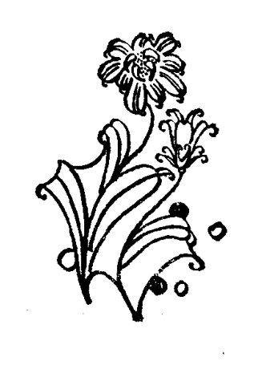
- 120 -
符号体系¶
数学家们探求五次方程求根公式的努力失败了。失败的原因有很多，在十六世纪，数学家们缺少一种合适的数学语言来表达高度抽象的数学材料，来精确、深刻地表达概念、方法和逻辑关系，是其中一条比较重要的原因。
什么是数学语言呢？就是用数学符号组成的语言。用数学符号来代替文字的叙述，还是代数学科的特征之一呢。使用符号，引进符号体系，是数学史上的一件大事，在这场意义深远的变革中，法国数学家韦达(1540—1603年)，走出了决定性的第一步。
第一个登上月球的宇航员阿姆斯特朗，曾经说过一段颇含哲理的话。1969年7月20日，阿姆斯特朗步出"阿波罗11号"的登月飞船，走下舷梯，在即将踏上月球的土地时，他说："对一个人来说，这是一小步；但对人类来说，却是一大步。"为了更好地理解韦达的卓越贡献，我们不妨先回顾一下，为了跨出这一步，人类所走过的漫长历程。
在距今三千六百年前的莱因德纸草文书中，为了表示一个一元一次方程 \(x\left(\frac{2}{3}+\frac{1}{2}+\frac{1}{7}+1\right)=32\)，古代埃及人写下了这样的一串符号：
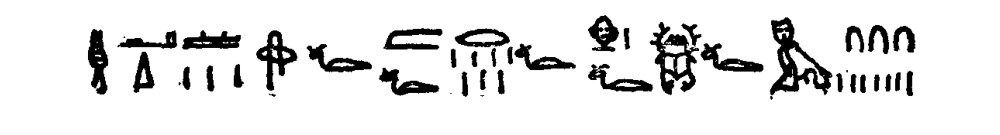
·121·
显然，这是他们日常的语言（象形文字）来表达数学内容。这样的数学式子不仅冗长，而且是含混不清的，很难体现出数字之间的关系，因而使用起来颇不方便。这是代数学发展的最初阶段，有人称它是“文词代数”时期。
在古代希腊，数学家们在许多领域作了深入的开拓，并取得了极其辉煌的成就，然而，他们中的大多数人也没有想到使用符号、用字母来代替数字，仅仅在古希腊文明的后期，人们才在丢番图的著作里看到了些许努力。
为了表示代数式 \(x^3+13x^2+5x+2\)，丢番图用了这样一些记号：

随后，对代数学的发展作过卓越贡献的印度人和阿拉伯人，进一步改进了数学表达式。在用阿拉伯文写的著作中，有人用这样的一串符号

来表示方程 \(4x^2+48=32x\)。根据阿拉伯人的习惯，这串符号应该从右向左读。
还需提到的是，十三世纪宋元时期的中国数学家，不仅在联立一次方程组和高次数字方程的解法等代数学领域取得了领先于世界的杰出成就，而且还发展了“天元术”、“四元术”这样的半符号代数。
与过去相比，这时的数学表达式要简洁一些了，有了用简单的字来代替数字的思想，所以有人将这一时期称作是“简字代数”时期。
进入十六世纪后，科学技术发展很快，对数学提出了更多
- 122 -
的要求。为了节省书写时间，数学家们开始大量地创设符号。
1489年，德国数学家魏德曼在书中第一次运用“+”、“−”号，作为加减法运算的符号。
1557年，英国人锐考尔德首先引入“=”表示相等关系。
1631年，英国数学家奥屈特提出用“×”、“÷”作为乘除法的运算符号。
1631年，英国数学家赫锐奥特创用“>”号和“<”号。
…… ……
遗憾的是，人们在使用符号时，并没有认识到它的重要性，往往是随兴之所至地加以采用。没有公认的标准，谁爱怎样用就怎样用，结果数学符号五花八门，混乱不堪。
第一个有意识地、系统地使用符号的人是韦达。其实，韦达并不是一个专业数学家，他的职业是律师，还做过一位国王的机要谋士，是一个活跃的社会活动家。但是，韦达很喜欢数学，每当有空闲的时候，他就忘记了他长期纵横捭阖（bǎi hé）的政治舞台，醉心于数学的推演，有时，为了解决一个数学问题，他甚至接连几个晚上都不睡觉。
为了表示恒等式 \(a^3+3a^2b+3ab^2+b^3=(a+b)^3\)，韦达用了这样一个表达式：
a cubus + b in a quadr. 3 + a in b quad. 3 + b cubo aequalia $\overline{a+b}$ cubo
其中，韦达在字母上划上横线用来表示括号。很明显，除了不够精炼以外，韦达的式子与现在的已没有好多本质的不同了。
韦达不仅运用而且还改进了代数符号。他意识到了使用符号对代数学的意义，精心选择代数符号，力图使其成为一个
- 123 -
体系。他不仅用字母表示未知数，还用它来表示已知数和一般的系数。所以，当韦达研究一个用字母表示的代数方程时，实际上处理的是整个一类的表达式，这样，就为代数学的发展指明了正确的方向，使它有可能成为一门成熟的科学。
用字母代替数字后，数学概念间的逻辑关系也就被深刻地披露了出来，寻找方程的某些规律就变得比较容易了。有一个以韦达名字命名的著名定理：若方程 \(ax^2+bx+c=0(a \neq 0)\) 的两根为 \(x_1\) 和 \(x_2\)，则 \(x_1=b/a\)，\(x_2=-c/a\)。这个定理到十六世纪时才被人们发现，不就正好说明了这一点吗？至于说韦达没能最后完成这个定理，那仅仅是因为他不承认负数。
符号体系的引进，是十六世纪一个重大的数学进展，它使得高度抽象的数学材料开始有了合适的表达形式，使代数的方法开始获得普遍的意义。不仅如此，它也开始为其他自然科学提供最精确的语言。
韦达是一个开拓者，为符号体系的引进作出了重要的努力，但他没有完成这个体系，直到十七世纪末，经过笛卡儿、莱布尼兹等伟大数学家的不懈努力，符号体系才趋于完成。当然，随着数学知识的扩充，人们还在不断地丰富它的“词汇”。
- 124 -
纳皮尔对数
数学家喜爱抽象，注重严谨的逻辑思维；而诗人则注重形象，喜爱海阔天空的幻想。比如同入一座花园，诗人们陶醉于姹(chà)紫嫣红，赞叹那影绰摇曳的风姿，沁人肺腑的温馨(xīn)；而数学家则从游龙走蛇般的曲线里，领悟到精巧匀称的几何模型的美。这是两种很难统一在一起的气质，所以，自古以来，喜爱作诗的数学家不多，喜爱做数学题的诗人更少。
俄罗斯著名诗人莱蒙托夫，是一位很喜欢做数学题的诗人。据说，即使在战壕里，他也会利用恒等式的性质，兴高采烈地与士兵们进行各种数学游戏呢。
有一次，莱蒙托夫被一道数学题给难住了，他想了好多好多的办法，还是没有找到答案。夜，渐渐地深了，他仍在苦苦地思索着，渐渐地，他疲惫地伏在桌上睡着了，做了一个有趣的梦。睡梦中，有位数学家向莱蒙托夫提示了解题的方法。
醒来后，莱蒙托夫觉得这件事挺有意思，于是给梦中遇到的那位数学家画了一幅像，这幅画现在还珍藏在苏联科学院里呢！
见过莱蒙托夫这幅画的人，都说画中的数学家很象英国的纳皮尔(1550—1617年)男爵。
莱蒙托夫是否真的梦见了纳皮尔，那就不得而知了，也许那只是诗人们特有的想象。不过，纳皮尔的数学创造，倒的确是常常萦回在千百万人的梦中。
·125·
纳皮尔于1550年出生在苏格兰。他的爱好，可不象莱蒙托夫那样富有诗意，而是连一般人都觉得枯燥乏味的数字运算。
在纳皮尔所处的时代，哥白尼的“太阳中心说”，日益强烈地吸引着人们去探索宇宙的奥秘；哥伦布发现了新大陆，更燃起人们征服海洋的热情。欧洲人第一次意识到世界竟是如此地宽阔，升腾起一股迫切了解这一切的欲望。自然科学获得了迅速的发展，可是，要解决随之而迅速发展起来的科学技术问题，人们的计算量也成百上千倍地增加了。大得吓人的天文数字，笨拙落后的计算方法，迫使科学家们成天泡在繁冗的数字计算中。一道现在看来不算太繁的计算题，那时的人们或许要算上好些天，也就很难有足够的精力去发现新的规律，进行新的探索。
于是，怎样改进数字运算，缩短计算时间，就成了数学家们急需解决的一个问题。
纳皮尔是一个天文爱好者。天文学的研究少不了数学计算。笨拙繁冗的计算方法，也时常折磨着勤于思索的纳皮尔，使他非常苦恼。他觉得那样笨拙地计算，简直是在浪费时间，他想：能不能简化数字运算呢？该怎样去改进数字运算呢？……
纳皮尔想了许多办法来简化计算问题，甚至还发明了一种能帮助简化计算问题的仪器，即人们常说的“纳皮尔计算尺”。纳皮尔计算尺由十根小木棍组成，小木棍上刻有乘法表，除了左边第一根木棍是固定的以外，其他部分都可以调换位置。纳皮尔利用这种仪器，用加法代替乘法，用减法代替除法，相当大地简化了数字运算。
·126·
纳皮尔计算尺
纳皮尔计算尺是一项很不简单的发明，可它比起纳皮尔的另一项发明——对数，又只能算是雕虫小技了。
纳皮尔发明的对数方法震动了欧洲。当时最优秀的科学家伽利略（1564—1642年），曾经发出了这样的豪言壮语：“给我时间、空间和对数，我可以创造出一个宇宙来。”反映了人们喜悦的心情。甚至在几百年以后，人们对这项发明仍然赞不绝口，著名的天文学家和数学家拉普拉斯（1749—1827年），就曾经赞叹地说：“对数方法使得好几个月的劳力缩短为少
·127·
数几天，它不仅可以避免冗长的计算与或然的误差，而且实际上使得天文学家的生命延长了好多倍。”
什么是对数呢？用现在的记号是：如果 \(a^b=N\)，其中 \(a>0\) 且 \(a\neq1\)，那么，\(b\) 叫做以 \(a\) 为底 \(N\) 的对数，记做 \(b=\log_a N\)，其中 \(a\) 是底数，\(N\) 是真数。
对数方法极大地简化了计算问题，用它来解决繁复的运算，往往只需寥寥数步，即可求得答案。比如要计算这样一个问题：
假设上式等于 \(A\)，然后取对数，则
查反对数表，知 \(A=30250\) 即为所求。
很明显，有了对数，乘方、开方运算可以转化为乘法、除法运算；而乘法、除法运算又可转化为加法、减法运算。高一级的数学运算转化为低一级的数学运算，这正是对数方法能够化繁为简的奥秘，也是对数方法的力量之所在。
纳皮尔是怎样形成对数概念的？想要浅近地介绍这个过程是非常困难的。纳皮尔以物体的直线运动为数学模型引入了对数方法，而即使是大体上叙述这个复杂的过程，也非得运用一些高深的数学知识不可。而且，不仅纳皮尔的对数记号与现在人们常用的符号大不相同，实际上他对一些概念的理解也是较模糊的，甚至连“底数”为何物他也是不甚清晰的。只是由于其他数学家的努力，对数方法才日臻(zhēn)完善。
·123·
几乎与纳皮尔同时，瑞士钟表匠彪奇（1552—1632 年）也独立地发明了对数方法。彪奇与著名天文学家刻卜勒一起工作，也是由天文计算产生出简化计算思想的，不过，他的著作比纳皮尔迟一些才发表。
英国数学家布里格斯（1561—1630 年）教授，也曾向纳皮尔提过一个很好的建议。布里格斯认为将十作为对数的底数，运算起来就更方便了，他的想法得到了纳皮尔的赞同，这导致了“常用对数”的创立。
运用对数方法，免不了要求出对数来，如果在实际运算中一次又一次地求对数，那就太麻烦了。布里格斯与另一位数学家佛拉哥（1600—1667 年）通力合作，造出了 14 位对数表，完成了从 1 到 100000 的对数计算。这是一项非常吃力的工作，比如计算一个 5 的对数，竟需要作二十二次开方。为了能延长他人的“生命”，布里格斯与佛拉哥慷慨地献出了自己的韶华，这该是多么崇高的情操啊！
后来，人们又发现，在科学计算1与研究中，以 \(e\)（\(e = 2.7182818\cdots\cdots\)）为底的对数，更适合实际的需要。于是又发明了“自然对数”，这是高等数学中运用最为广泛的一种对数。
对数方法的目的是简化数学计算。英国人奥托里把计算好的对数值刻在木板上，通过木板滑动求出计算的结果，制造了世界上最早的对数计算尺。它使得数字计算更为简捷，几百年来，直到微型电子计算机（器）普及之前，对数计算尺一直是最受人们欢迎的小型计算工具。
纳皮尔的功绩是不朽的。作为一个开拓者，他第一个深入研究了对数的理论，揭露出它的本质，并指出各种计算的实际应用，迈出了对数研究步履维艰的第一步。革命导师恩格
· 129 ·
斯曾给予他的发明以很高的评价。恩格斯称对数方法是历史上“最重要的数学方法”之一，并将对数与解析几何、微积分的发明并列在一起，称作是十七世纪最伟大的三项数学创造。

- 130 -
业余数学家
学习了几何，就能测量；学习了代数，就能计算；……众多的数学分支都和现实生活有着密切的联系，然而，有一个数学分支却很难在生活中找到它的具体应用。这个数学分支就是"数论"。
数论是一门纯理论的数学分支学科，专门研究正整数的性质及其相互关系，比如质数、合数、不定方程，都是数论的研究对象。用初等数学的方法研究数论，叫做初等数论；用高等数学中的解析函数论的方法研究数论，叫做解析数论；用近世代数的方法研究数论，叫做代数数论。
数论也是一门非常古老的数学分支学科。有人说，最古老的谜最难猜，此话不无道理。在数论中，有不少古老而玄妙的数学"谜语"，至今尚未有人能找到"谜底"，更给它增添了极大的魅力。且不说象"哥德巴赫猜想"那样世人皆知的数学难题，就说质数吧，尽管人们在两千多年前就开始研究它了，可是直到如今，数学家们都无法找到一个公式，把所有的质数都表示出来。历史上最伟大的数学家高斯曾经说过："数学是科学之王，数论是数学之王。"足见他对数论的推崇。
有趣的是，在十七世纪，对数论的研究贡献最大的人，竟是一位业余数学家。
这位业余数学家叫费尔马(1601—1665年)。
费尔马是法国的一名律师，后来担任过议会顾问。他特
·131·
别喜爱数学，每当工作的余暇，他就漫游在奇妙的数学王国里，让数学研究充实他的业余生活。费尔马非常欣赏古希腊数学家丢番图巧妙绝伦的解题方法，并决定以丢番图的工作为起点，进一步探求数论的奥秘。
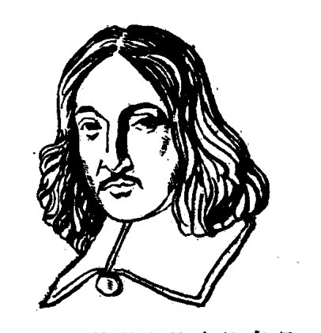
虽然费尔马没有受过严格的数学训练，也不精于严谨的数学证明，但他具有伟大的直观天才。革命导师列宁说过，甚至数学也需要幻想。费尔马正是凭借丰富的想象力和深刻的洞察力，提出了一系列重要的猜想和一些新的数学方法，确定了数论的研究方向。
费尔马喜欢在别人的数学著作的空白处写下自己的注解，提出自己的“定理”，却几乎从来不给予证明，这就很难保证他的猜想都是正确的，而且，也给后人的工作添了不少的麻烦。
有一次，费尔马注意到这样一种现象，对 \(2^{2^n}+1\) 而言，当 \(n=1\) 时，\(2^{2^1}+1=5\)，其结果是质数；当 \(n=2\) 时，\(2^{2^2}+1=17\)，其结果也是质数；当 \(n=3、4\) 时，其结果分别为 \(257\) 和 \(65537\)，也都是质数。于是费尔马猜想，用公式 \(2^{2^n}+1\)（\(n\) 是自然数）表示的数都是质数。
这猜想对吗？在费尔马死后六十七年，著名数学家欧拉发现当 \(n=5\) 时，\(2^{2^5}+1=4294967297=641 \times 6700417\)，其结果是一个合数，不符合费尔马的断言，也就否定了费尔马的这个猜想。
不过，上述猜想是费尔马唯一一个被证明是错误的重要
·132·
猜想，而他其余的重要猜想，几乎都已被后人证明是正确的；其中有一个猜想，即所谓的“费尔马大定理”，三百多年来，则既未被证明也未被否定，成为历史上一个著名的数学难题。
什么是“费尔马大定理”呢？
\(x^2+y^2=z^2\)，这是丢番图在《算术》中详细讨论过的一类不定方程，它的整数解有无穷多个，比如勾股数3、4、5，就是它的一组解。然而，方程 \(x^3+y^3=z^3\) 有没有整数解呢？方程 \(x^4+y^4=z^4\) 有没有整数解呢？……丢番图没有回答。
在《算术》法译本的空白处，费尔马用拉丁文写了这么一段话：“任何一个数的立方，不能分解为两个数的立方和；任何一个数的四次方，不能分解为两个数的四次方之和；一般来说，任何次幂，除平方之外，不可能分解成其他两个同次幂之和。我想出了这个断语的绝妙的证明，但书上这空白太窄了，无法把它写出来。”
也就是说，费尔马猜想：只要自然数 \(n\) 大于2，方程 \(x^n+y^n=z^n\) 就没有整数解。这就是“费尔马大定理”。
由于费尔马无意于做一个数学家，生前从不公开发表自己的数学见解，所以，只是在他死后，人们清理他的遗物时，才知道了费尔马的这个猜想。
起初，人们试图找到费尔马在书上没写出的那个“绝妙的证明”，但没有成功；后来，数学家们想：干脆重新证明吧。要证明“费尔马大定理”太难了，虽然每个少年读者都能弄懂题意，可要证明它，连高斯、欧拉、柯西等最优秀的数学家也曾束手无策呢！
1908年，德国哥廷根数学会宣布：谁最先证明“费尔马大定理”，就奖给谁十万马克的奖金，有效期一百年，到2007年
- 133 -
为止。
“重赏之下，必有勇夫。”十万马克，这可是一个挺有诱惑力的数目。很快，在德国，在欧洲，掀起了一阵证明“费尔马大定理”的热潮。有人统计过，在很短的几年里，德国的各种刊物上就刊登了近千种不同的证明。可惜，那些都不是“绝妙的证明”。
第一次世界大战期间，马克不断贬值，十万马克已经值不了几个钱了，可仍然有人在致力于“费尔马大定理”的证明。当然，他们是在为攻克科学难关，为显示人类智慧的威力而奋斗。
越来越多的迹象表明，“费尔马大定理”很可能是正确的，很可能是一个定理，但是，人们仍然未能给予普遍的证明。这方面的工作进展极其缓慢。电子计算机问世以后，人们的精神为之一振，特别是在电子计算机帮助人们证明了另一个著名的数学难题——四色定理之后，数学家们更加乐意于用现代化的手段来证明“费尔马大定理”。可是，前些年，美国数学家大卫·曼福特得到了这样一个证明：当 \(n>2\) 时，如果方程 \(x^n+y^n=z^n\) 有整数解，那么，这样的整数值一定非常大、非常“少”，而且这样的整数解的数值之大，不仅远远超过了现有大型电子计算机的计算能力，还超过了从长远看来能够设想的任何电子计算机的能力。
不管怎样说，大卫·曼福特仍然未给予“绝妙的证明”，“费尔马大定理”也仍然只能算做是一个猜想。1983 年，从联邦德国传出消息说，数学家们又获得了新的进展。二十九岁的大学教师伐尔廷斯证实了 1922 年英国数学家莫德尔的一个著名猜想，可望在解决包括“费尔马大定理”在内的一大批
- 134 -
难题中获得重大突破。也许就在后天便有捷报飞传，可谁又能担保，在明天，不会有人证实“费尔马大定理”是错误的呢？反正在今天，在给予严格的证明之前，“费尔马大定理”还只能算是一个猜想。
至于费尔马，这位掀起轩然大波的数学家，是否真的想出过“绝妙的证明”，那就很难说了，也许，这是一个比“费尔马大定理”更难猜的谜。
数学，只是费尔马的业余爱好，但他对数学的贡献却是第一流的。除数论外，他还曾涉足于好些数学领域。费尔马是微积分的重要先驱者之一，他实际上掌握了微积分的主要方法；费尔马还和帕斯卡（1623—1662 年）一起开创了概率论的研究工作。值得特别指出的是，费尔马和笛卡儿（1596—1650 年）各自创立的解析几何学，拉开了高等数学时期的序幕，具有极其深远的历史意义。
遗憾的是，费尔马没有意识到引进符号体系的重要意义，他用烦琐的方式表述的新的数学思想，也就很难为同时代的人所接受。有关解析几何的著作也是这样，费尔马笨拙的陈述，把数学家从他那儿吓跑了，于是，人们就将热情的赞歌几乎全都献给了解析几何的另一位创始人、费尔马聪明而幸运的同胞——笛卡儿。
伟大的转折
公元1618年秋天，在荷兰南部一个叫做布莱达的小镇上，开展了一项有奖数学竞赛活动。街上贴了布告，布告上有一些数学竞赛题，布告上还说，谁解答了上面的这些难题，谁就是镇上最好的数学家。
谁是镇上最好的数学家呢？人们围着布告猜测着，议论纷纷。围观的人群惊动了一个正在街上闲逛的士兵，一个终日里无所事事的法国小伙子，他挤进人群来凑热闹，可是，他听不懂荷兰话，不知道这里究竟发生了什么事。
"布告上写了些什么？"他用法语向周围的人打听。
一位学者模样的人，回头打量了一下这个莽撞的士兵，开了个玩笑："哦，想知道布告的内容吗？唔，很好，我可以告诉你，但你以后得把你的答案告诉我……"
第二天早上，年轻的士兵胆怯地敲开了荷兰学者的家门，递上了他的答卷。这位学者叫毕克门，是当地一所大学的教授，他不在意地接过答卷。可看罢答卷，毕克门大吃一惊，难题全都解答了，而且没一点儿差错，想不到这个年轻人竟有如此敏捷的数学天才。
这个震动了布莱达镇的年轻士兵，就是后来的科学巨匠笛卡儿。
笛卡儿1596年出生在法国土伦一个古老的贵族家庭里，小时候，他被送进当时法国最好的一所教会学校里念书。在
·136·
学校里，笛卡儿非常勤奋地学习，当他学完学校开设的全部课程之后，觉得反而陷入更多的困惑之中。于是，他拼命搜集、阅读了大量的课外书籍，思考书中讲的道理。他后来回忆说，“那些被认为是最奇怪的、最不寻常的有关各种学科的书，凡是我能搞到的，我都把它们读完。”书本丰富了笛卡儿的知识，却不能使他满足，他决定进一步在实践中去寻觅答案。1616年，笛卡儿带着许许多多的问号，从学校毕业了。

从学校毕业后，根据当时的风气，有两条道路可供笛卡儿选择，要么致力于宗教，要么献身于军队。笛卡儿选择了后者，1617年，他戎装来到了荷兰。
士兵的生活是非常艰苦的。笛卡儿从小就身体虚弱，单调机械的操练，使他兴趣索然，觉得无所事事。只是在他小试锋芒，解答了布莱达镇上的难题后，这种状况才有所改变。他和毕克门教授成了好朋友，经常在一起讨论数学问题。笛卡儿感到很愉快，学问也有了长进，这时，他才意识到自己长于数学，萌生出致力于数学研究的念头。
笛卡儿对当时数学研究的状况颇为不满，他认为在一些人手中，数学已“成为一种充满混杂与晦暗，故意用来阻碍思想的艺术”。这种激愤的心情，也正好反映了他是极为注重数学的。在笛卡儿心目中，数学是任何别的科学的典范，只有以数学为模型的科学，才能认为是正确的。这是笛卡儿毕生坚持的信念，也是推动他去创造新的数学方法的一个动力。
·137·
1619年，是笛卡儿一生的转折点，也是数学发展的转折点。秋天，收获的季节里，已经驻守在德国南部的笛卡儿，连续好几个晚上都无法安稳入睡了，几年来深入的思索，即将要理出头绪。11月10日晚上，笛卡儿接连做了几个噩(è)梦，“第二天，我开始懂得了这惊人发现的基本原理”，笛卡儿曾这样回忆说。
什么是笛卡儿的惊人发现呢？
在地图上，人们常常画上许多条线，纵的叫经线，横的叫纬线，交叉的经纬线可以确定任何一个地方在地球上的位置，比如东经114°8′，北纬30°28′，就是武汉市在地球上的位置。笛卡儿从古老的经纬制度出发，创立坐标方法，建立起代数中的数与几何中的点、几何中的曲线与代数中的方程的对应关系，把几何与代数这两门独自发展的学科结合成一个整体。如图，在平面上画上两条垂直的直线，在标明刻度、确定方向之后，就建立了一个坐标系。这里，一对实数(1,2)，确定了一个
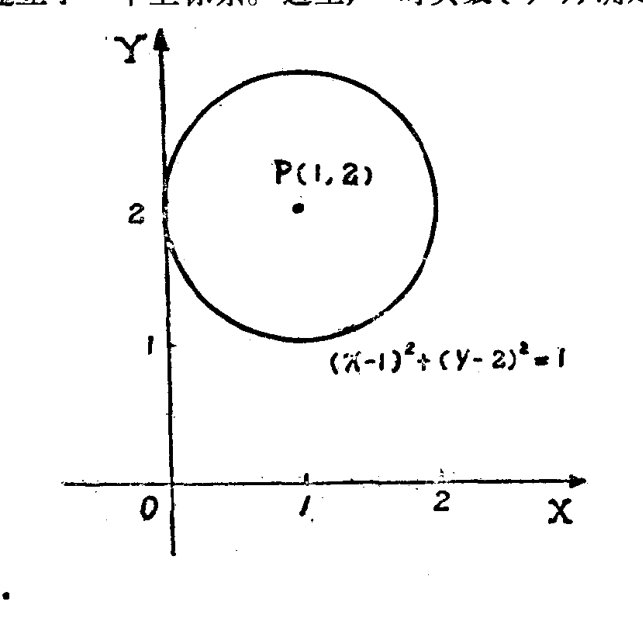
·138·
点 \(P\) 在平面上的位置，而代数方程 \((x-1)^2+(y-2)^2=1\)，实际上刻划了一条几何曲线——圆。
笛卡儿的发现是一个伟大的创举。在此以前的几千年里，几何一直统治着数学，而代数则处于附庸的地位，比如解方程，笨拙的几何作图方法竟是数学家们唯一信得过的方法。笛卡儿改变了这种不合理的格局，他的基本思想是用代数方法来解决几何问题。在几何关系用代数式子表示以后，烦琐的缺乏一般性的几何方法，便在简捷的代数运算法则中得到了统一的处理。代数方法的优越性得到了揭示，从此，代数也就成为最基本的数学部门。
至于几何学本身，由于引进坐标方法，废除了古希腊数学家对几何学研究对象的苛刻限制，拓广了几何学的天地。比如说，古希腊数学家固执地认为，只有能由尺规画出的图形才算是几何图形，在笛卡儿建立了代数式子与曲线的对应关系后，这样的限制就显得没有道理了。不仅如此，由于坐标方法能轻松地解决许多繁复的几何问题，促使从数学学科中分出一个新的独立分支，后来牛顿给这个分支命名叫解析几何学。
更重要的，是笛卡儿为了刻划动点的轨迹，引入了变数的概念，这就把辩证法引进了数学。在解析几何里，曲线被理解为动点运动的轨迹，而运动着的点和变动着的数是一一对应的，于是，变化着的事物就成了数学研究的对象。它标志着数学发展开始了伟大的转折，标志着人们对数学的认识经历了一次飞跃，高等数学也就随之登上了历史舞台。
笛卡儿的功绩是不朽的。可有人却喜欢把解析几何创始的过程加以神秘的渲染，也有人说笛卡儿是由蜘蛛结网联想到坐标方法的。自古以来，见过蜘蛛结网的人又何止千千万
·139·
万，为什么他们就没能创立解析几何呢？其实，更深刻地说，笛卡儿的伟大发明，是十七世纪社会发展的必然产物。当时，机械生产正逐渐取代工场手工业的生产方法，机械的运动向数学提出了许多新的问题，而要解决这些问题，以常数为对象的旧的数学方法是无能为力的。解析几何学正是在这种形势下应运而生的。没有笛卡儿，情况也许是另外一种样子，但是，一定会有人作出同样的贡献来改变数学的面貌，来解决不断发展的技术问题。费尔马独立获得了解析几何学的思想，不就是一个绝妙的例证吗？
1649年，笛卡儿应瑞典女王的邀请，移居到斯德哥尔摩，那里寒冷的气候损害了他的健康，第二年他就与世长辞了。后来，这位法兰西民族骄子的骨灰被转送回法国，移葬到巴黎名人公墓中一块最有声誉的墓地。
·140·
拾贝壳的孩子
笛卡儿、费尔马创立的解析几何学，象一声号角，宣告了高等数学时期的到来。变量，而不是常量，日益成为数学研究的主要对象。对变量之间相互关系的探讨，导致了函数概念的产生；紧接着，一个空前伟大的数学创造——微积分，凝聚着人类思维的激情，开拓出一个新的科学天地。
微积分的出现，不仅揭开了数学发展史上极其光辉的一页，也在整个自然科学发展史上占有相当重要的地位，它极其深刻地影响着生产技术和自然科学的发展，成为人们征服自然、改造自然的重要工具。如果说天文学家不能没有望远镜，生物学家不能没有显微镜，那么，不仅是数学家，所有的自然科学家都不能没有微积分。
提起微积分的产生，人们便会联想到一批数学巨人的名字：费尔马、笛卡儿、瓦里士(1616—1703年)、牛顿(1643—1727年)、莱布尼兹(1646—1716年)……，其中，英国科学家牛顿的名字最为引人注目，使人自豪。
牛顿是历史上最伟大的数学家之一。可在小时候，他却是一个不爱读书的孩子。十二岁那年，牛顿由乡村小学转入镇上的学校念书，但他仍对功课不感兴趣，上课也不认真听讲。当时，学校里
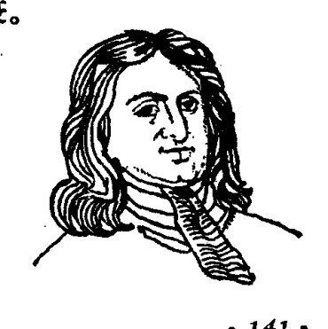
·141·
按照成绩的好坏给学生们编排座位，成绩好的学生坐在教室的最前边，成绩不好的学生依次排在后面，而牛顿呢，由于成绩低劣，总是坐在教室最后排的角落里。同学们都瞧不起他，有一次，一个同学还欺侮牛顿，用脚狠狠地踢他。这些事给了牛顿很大的刺激，他从此发奋图强，认真学习。牛顿的成绩很快就上升了，座位也逐渐前移，不久就移到最前排的第一个位置。
在牛顿出生前不久，他的父亲就去世了。牛顿十四岁那年，他已经再嫁的母亲又成了寡妇，带着三个孩子回到了家乡。家里的生活更加艰难了，牛顿被迫停止了学业，回到乡下帮母亲干活。
在乡下，牛顿每天都要干很多很多的农活，但是，只要一有空闲，他就立刻坐下来刻苦读书。牛顿也非常注意仔细观察大自然，据说，他放牧的时候，常常因为思索着大自然的奥秘，连羊群在糟蹋庄稼都没有察觉呢。
牛顿勤奋好学的精神感动了他的母亲，她决心克服困难，让儿子去继续求学。牛顿又回到了学校。后来，他考上了英国一所著名的大学——剑桥大学。
在大学里，牛顿每天要干许多的勤杂活儿来减免自己的学费，减轻家里的负担。他非常珍惜学习的机会，用顽强的毅力去克服各种困难。在数学方面，牛顿幸运地得到巴鲁教授的指导，很快就了解了笛卡儿、刻卜勒、瓦里士等人的科学成就，也从巴鲁的《讲义》里获得了不少的启迪，这些，为牛顿以后的科学创造奠定了坚实的基础。
大学毕业后不久，碰上伦敦地区鼠疫大流行，学校关闭了，牛顿回到了他的家乡。在家乡的两年里，是牛顿发明最旺
- 142 -
盛的年代，他平生三项最伟大的科学发现：流数术（微积分）、万有引力定律和光的分析，都发轫（rèn）于此时。
苹果从树上落到地上，这是人们司空见惯的现象；苹果为什么不往天上飞呢？牛顿提出了疑问。他运用智慧和所学的知识对此作了深入的探索，断定苹果落到地面是受到一个力的作用，而这个力与使月球留在它的轨道上的力是同一个力，并且这个力的大小与物体离地球中心的距离的平方成反比。他进一步将这个结论应用到行星的运动、潮汐现象、甚至是彗星的运动上，发现了著名的万有引力定律，揭示了宇宙天体的奥秘，从而奠定了天体力学的基础。
在研究物理学的问题时，牛顿深切地感受到旧的数学方法是多么的软弱无力，坚定了他继承前辈数学家关于变量数学求索的决心。他以速度之类问题为中心概念，从前人纷乱的猜测中，清理出有价值的思想，并用丰富的想象力将零碎的知识重新组织起来，建立了能用于许多类函数的普遍方法。这个方法就是微积分，牛顿称之为“流数术”。
微积分是微分学和积分学的统称，是一种新的数学方法。比如说，要解决物体运动的平均速度问题，用代数方法就足够了；但要解决物体在某时刻的瞬时速度问题，就得请微分学来帮忙了。如右图所示，物体自由下落的距离公式是 \(h=\frac{1}{2}gt^2\)。在 \(t\) 时刻，物体所经路程为 \(\frac{1}{2}gt^2\)，再经过一段时间 \(\Delta t\) 后，路程为
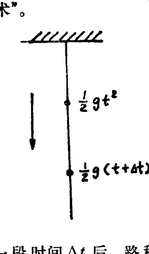
·143·
\(\frac{1}{2}g(t+\Delta t)^2\)，在 \(\Delta t\) 这段时间里，物体下落的平均速度（所经路程与所用时间之比）应该是
显然，时间间隔 \(\Delta t\) 愈小，平均速度 \(\bar{V}\) 就愈加接近瞬时速度 \(V\)。如果 \(\Delta t\) 无限小，也就是 \(\Delta t\) 无限趋近于 \(0\)，\(\frac{1}{2}g\cdot\Delta t\) 也就无限趋近于 \(0\)，\(\bar{V}\) 就会无限趋近于 \(gt\)。这样，就得到了物体在 \(t\) 时刻的瞬时速度 \(V=gt\)。
上面详细地介绍了解题的基本思想，其实，应用微积分运算法则，上述过程是非常简捷的。即 \(V=d\left(\dfrac{1}{2}gt^2\right)/dt=gt\)。
运用积分学的方法，可以计算曲边形的面积——这个初等数学无法解决的问题。如下图所示，计算曲边三角形 \(OAB\)

- 144 -
的面积。将 \(OB\) 分成 \(n\) 个小段，组成了许多个小矩形，它们的高依次是：
它们的面积依次是：
它们面积的和近似于曲边三角形 \(OAB\) 的面积：
显然，小矩形的个数愈多，上述近似值就愈加接近真实面积。如果 \(n\) 无限大，\(\dfrac{1}{n}\) 和 \(\dfrac{1}{n^2}\) 就会无限趋近于 \(0\)，近似值 \(\dfrac{1}{6}\left(1-\dfrac{1}{n}\right)\) \(\left(2-\dfrac{1}{n^2}\right)\) 就会无限趋近于 \(\dfrac{1}{3}\)，这样，就得到了曲边三角形 \(OAB\) 的面积 \(S=\dfrac{1}{3}\)。
同样，运用微积分的运算法则表述上述过程，可简捷地记为：
微分和积分不是两个毫不相干的内容，著名的牛顿-莱布尼兹公式
\(\cdot\) 145 \(\cdot\)
将它们紧紧地联结了起来。
牛顿发明了“流数术”，但没有公开。鼠疫消灭之后，他又回到了剑桥。1669年，巴鲁教授坦然宣称牛顿的学识超过了他自己，毅然辞去“路卡斯教授”的职位，把它让给年仅二十六岁的牛顿，为牛顿发挥聪明才智创造了更好的条件。
1696年，牛顿辞去了担任近三十年的教授职务。此后，他虽然一直热心公务，很少进行科学研究，但他的数学思想仍然很敏锐。有一次，数学家约翰·伯努利（1667-1748年）编了两道数学难题，向全欧洲的数学家挑战。六个月后，数学家们纷纷败下阵来，说题目太难了。牛顿碰巧听到了这件事，当天晚饭后，他抽了点时间很快就把难题解答了。为了不惹麻烦，牛顿的答案没有署名，伯努利看到答案后曾感慨地说：“啊，我认出了狮子用它的巨爪。”
牛顿对科学的贡献是巨大的，他是一个伟大的数学家，更是一个伟大的物理学家，他创立的经典力学体系，首次实现了自然科学的大综合，是人类对自然界认识的巨大飞跃，而且他在许多领域都有同时代人无法比拟的贡献，因而受到广泛的敬重。在晚年，他一直是英国皇家学会的主席。面对荣誉和赞扬，牛顿谦虚地说：“我不知道世人的看法怎样，我只觉得自己好象是在海滨游戏的孩子，有时为找到一个光滑的石子或比较美丽的贝壳而高兴，而真理的海洋仍然在我的前面未被发现。”他还说：“如果我比笛卡儿看得更远点，那是因为我站在巨人的肩上。”
1727年3月31日凌晨，牛顿逝世了。人们怀着崇敬的心
- 146 *
情，在他的墓碑上刻下了这样一段文字：
他以几乎神一般的思维力，最先说明了行星的运动和图象、彗星的轨道和大海的潮汐。让普通平凡的人们因为在他们中间出现过一个人杰而感到高兴吧！
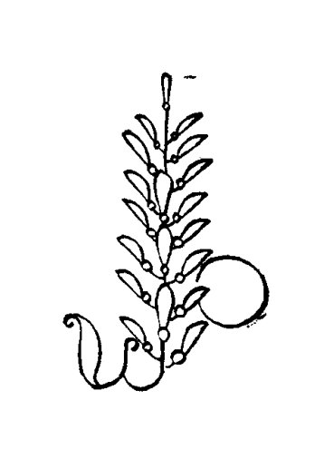
·147·
英雄所见略同
微积分不是凭空产生的，它经历了长时间的酝酿过程，它的有些思想甚至可以追溯到遥远的古代。
在两千多年前，我国古代文学名著《庄子》里，就曾经迸发出极限思想的火花，而极限理论正是微积分的基础。《庄子》中说："一尺之棰，日取其半，万世不竭。"这是相当深刻的思想。一根一尺长的木棍，每天将其截短为一半，可以永远地继续下去。木棍的长度会不断地缩短，会无限地接近于0，但永远不会等于0。0是它的极限。
在古代希腊，数学家用穷竭法来计算曲边形的面积和体积，这种方法很接近积分的方法，简直可以说，古希腊人和微积分失之交臂了。
既然古代数学家产生过这些深刻的数学思想，为什么古代社会又没能发明微积分呢？其实，数学成果并不是数学家头脑的"自由创造物"，数学本身也是有关时代的函数，受时代制约，随时代变化。有了相应的社会条件，才有相应的数学创造。
历史进入十七世纪以后，机器逐渐在工业生产上得到普遍的应用。机器的飞速旋转，向数学家提出了许多新的问题，这些问题大多和运动、变化有关。同时，它也为数学家解决这些问题提供了大量的物理模型，微积分才得以应运而生。
牛顿是微积分的重要奠基者，和他并驾齐驱、共同跑完创
- 148 -
立微积分最后一程的，还有德国数学家莱布尼兹。
莱布尼兹兴趣广泛，多才多艺。他是法学教授，却写有第一流的数学著作，并且在哲学、历史、语言、生物学、地质学、机械、物理等领域，均有很深的造诣。

莱布尼兹的父亲是莱比锡大学的道德哲学教授，家里有良好的藏书条件。少年时代的莱布尼兹常常独立地阅读他父亲的藏书，很早就熟悉了一些学科。在众多的图书中，最吸引莱布尼兹的要数笛卡儿的著作了，笛卡儿注重数学的观点，给他留下了深刻的印象，使他对数学问题特别感兴趣。
十五岁时，莱布尼兹进入莱比锡大学学习，虽然他选择法学作为专业，但仍然以极大的热忱去掌握各门科学。毕业后，他又热衷于外交事务，才华横溢，颇具声誉。莱布尼兹的道路似乎就此决定了，然而，一趟偶然的差事却改变了他的生活。
1672年，莱布尼兹出差到了巴黎。在那里，他结识了惠更斯(1629-1695年)等著名科学家，了解到人们正在探索一种有关变量的数学。这种新的数学的巨大魅力，使他以往对数学的兴趣重又产生。
1684年，在长时间的钻研之后，莱布尼兹发表了第一篇微分学论文，这是世界上最早的微积分文献，具有划时代的意义。这篇论文虽只六页纸，标题却相当长，叫做《一种求极大极小和切线的新方法，它也适用于分式和无理量，以及这种新
方法的奇妙类型的计算》。两年之后，他又发表了第一篇积分学的论文，比牛顿最早发表的“流数术”著作还要早一年。
莱布尼兹独立地获得了微积分思想，而且是以与牛顿不尽相同的角度。牛顿是为解决物理学的问题而研究微积分的，力学问题是中心概念，他不强调方法，力图通过应用来显示微积分的重要价值；而莱布尼兹呢，则以哲学家的眼光来看待这项伟大的创造，他精心选择微积分符号，注重公式系统，建立微积分法则，关心用运算公式创造出广泛意义下的微积分。这对普遍推广微积分方法很有利。现在人们常用的微积分符号，如 \(dy/dx\)，\(\int ydx\)，等等，还是莱布尼兹最先发明的呢！
牛顿与莱布尼兹的工作方式也不同。牛顿是经验的、具体的和谨慎的，而莱布尼兹是富于想象的、喜欢推广的和大胆的。尽管如此，他们却殊途同归，双双获得了微积分的真谛，共同奠定了这个伟大创造的基础，真是英雄所见略同啊。
牛顿比莱布尼兹早十年得到微积分的结论，由于他害怕批评，却比莱布尼兹晚三年发表微积分的著作，这样，发明微积分的优先权问题，导致了一场长达百年的争执。
英国的学者坚定地支持牛顿，指责莱布尼兹是剽(piāo)窃者，而欧洲大陆的数学家则毫不含糊地捍卫莱布尼兹。欧洲的数学家分成了两派，他们相互指责、讽刺挖苦，并且停止了学术交流。
大陆数学家沿用莱布尼兹的分析法，并加以光大，获得了丰硕的数学成果；英国数学家由于盲目崇拜牛顿，拘泥于牛顿的几何方法，固步自封，若干年后他们连几乎在全欧洲通用的微积分符号都不认识了。这时他们才意识到，偏见和迷信已
- 150 -
给英国的数学研究带来了多么深重的灾难。
在数学家为优先权的问题争论不休的同时，无论是在英国，还是在欧洲大陆，微积分的拥护者无一幸免地遭到了教会的攻击。这种攻击是恶毒的，但也反映了当时的微积分是不完善的，也就是说，微积分的创造者们将一件出色的工具奉献给了人类，却无法对工具的结构原理提供足够的说明。
面对攻击，无论是在英国，还是在欧洲大陆，先进的数学家们都没有退缩。虽然他们对一些基本概念的理解是含混不清的，但却从微积分在实践方面的胜利中得到鼓舞，因为他们用微积分计算的结果几乎总是正确的。于是，他们认定微积分是合理的，毫不犹豫地继续向前奋进。实际上，连微积分最穷凶极恶的反对者也不得不承认："流数术是一把万能的钥匙，借着它，近代数学家打开了几何以至大自然的秘密。"
微积分的创立过程，也反映了数学与科学关系的新变化，这就是数学与科学之间的界限变得模糊了。当科学变得越来越依赖数学来产生它的结论时，数学也变得越来越依赖于科学的成果来证实自己做法的正确性，这一切，与古希腊时代欧几里得几何与科学技术明显脱节的情形，恰好形成了一个鲜明的对照。
·151·
“一切人的老师”
在数学史上，如果把十七世纪称做是天才的世纪，那么，十八世纪则可称做是发明的世纪。
在十七世纪里诞生的微积分，为人类探索大自然的奥秘提供了强有力的武器，十八世纪的数学家们毫不犹豫地操起这件武器，闯进了自然科学的各个领域，他们迫不及待地把实际问题转化为数学形式，然后就陶醉在公式的演算之中。微积分知识在应用中获得了扩展，派生出许多新的数学分支。新的数学发明象喷泉般涌现出来，令人眼花缭乱，把数学王国点缀得更加精彩纷呈。
如果想用一个人的工作来概括十八世纪数学的特点，欧拉（1707-1783年）就是再合适不过的人选了。
欧拉是十八世纪最杰出的数学家。虽然他没有作出划时代的数学创造，然而，却从来没有一个人能够象他那样巧妙地把握数学，产生过那么多令人赞叹的数学成果，发明过那么多令人钦佩的数学方法。欧拉线、欧拉常数、欧拉公式、欧拉函数、欧拉方程、欧拉定理……，几乎在每一个数学分支里，都记载有欧拉的名字，都留有他辛勤耕耘的足迹。

·152·
景色佳丽的中欧国家瑞士，是欧拉的诞生地。欧拉的父亲是一位乡村牧师，他希望欧拉能够成为一个神学家，可是，1720年，十三岁的欧拉进入巴塞尔大学后，却在约翰·伯努利教授的指导下，走上了献身数学研究的道路。
约翰·伯努利是著名的伯努利“数学家族”的成员，在这个家族里，四代人中间产生过数十位数学家。约翰·伯努利的哥哥叫雅各·伯努利(1654-1705年)，也是巴塞尔大学的数学教授，他们兄弟俩都是莱布尼兹的朋友，也都是微积分的重要奠基者。约翰·伯努利的三个儿子和两个孙子，也是当时很有名气的数学家。这样一个鼎盛的数学家族，堪称数学史上的奇迹，大概只有我国的梅文鼎家族才差可媲(pì)美。
约翰·伯努利特别赏识聪明勤奋的学生欧拉，他的两个儿子尼古拉·伯努利(1695-1726年)和丹尼尔·伯努利(1700-1782年)也和欧拉结成了亲密的朋友。1727年，由于丹尼尔·伯努利的推荐，欧拉来到了俄国首都彼得堡，后来，他接替丹尼尔·伯努利出任彼得堡科学院数学教授，这时他才二十六岁。
欧拉是微积分方法的忠实捍卫者。由于牛顿、莱布尼兹在创立微积分时，并没有真正理解它的基础理论——极限论，这样，这项伟大的数学创造就存在着逻辑上的困难，找不到合适的数学理由来证实它的存在是合理的，因而遭到一些人的怀疑和攻击。法国数学家罗尔甚至说：“微积分是巧妙的谬论的汇集。”一些唯心主义者更是利用科学上的暂时困难，极尽讽刺挖苦之能事，一时间逆流翻滚，微积分面临严峻的考验。虽然欧拉也没能解决极限理论问题，但他同当时的有识之士一样，确信用微积分方法能得出正确结果不是偶然的，坚信微
积分是合理的，因而不去理会微积分理论的缺陷，大胆地运用微积分去解决科学技术问题，开拓新的数学分支。微积分本身也就在应用中获得扩展，益发显示出它的重要价值。
欧拉拒绝把几何作为微积分的基础。他强调纯粹形式地研究函数，进一步把微积分从几何的束缚中解放出来，为其深入发展开辟了道路。
欧拉涉足的数学领域是极其广泛的，成就也是多方面的。有人将他发明的公式
称做是全部数学中最卓越的公式之一，因为它把数学中最重要的五个数：\(1\)、\(0\)、\(i\)、\(\pi\)、\(e\) 联系在一起。其中，用符号 \(i\) 表示虚数 \(\sqrt{-1}\)，用符号 \(e\) 表示自然对数的底数，还是欧拉首创的呢！而用符号 \(\pi\) 表示圆周率，也是经过欧拉的提倡，才获得普遍承认的。
1735年，寒冷的天气和过度紧张的工作，终于使欧拉病倒了。不久，他的一只眼睛失明了。1741年，欧拉接受普鲁士国王腓特烈的邀请，转到气候比较温暖的柏林科学院继续研究工作。1766年，在俄国女皇叶卡杰琳娜二世的诚恳敦聘下，欧拉冒着双目失明的风险，重新回到了彼得堡，以后就一直生活在俄罗斯的土地上。
回到彼得堡不久，欧拉的另一只眼睛也失明了。他默默地忍受着失明的痛苦，用惊人的毅力与困难作顽强的斗争。在未完全失明之前，欧拉更是抓紧一分一秒，在大黑板上奋笔疾书他发明的数学公式，让他儿子（也是数学家）记录下来，继续用他深刻的思想为人类造福。
罕见的记忆力和超群的心算能力，是欧拉能够在黑暗中
· 154 ·
继续数学研究的重要条件。有一次，欧拉的两个学生进行一次很复杂的数学计算，算到第五十位数字时，两人的答案相差一个单位。欧拉为了确定谁的答案是正确的，于是默默地心算了一遍，竟把错误给找了出来。
1771年，一场大火殃及欧拉的住宅。人们从火海中把失明的数学家救了出来，但他的书库和大量的研究成果却全部化为灰烬。对一个科学家来说，这是比失明更为可怕的打击。欧拉挺住了。接踵而来的打击，丝毫没有停止这位数学巨人的工作，欧拉发誓要把损失全夺回来，开始以更快的速度进行数学创作。欧拉是历史上著述最多的数学家，而他有四百多篇论文和许多著作，就是在完全失明的十七年中由他口述而成的。生活在黑暗中，却顽强拚搏，用自己闪光的数学思想照耀别人深入探索的道路，这该是多么崇高的情操啊！
欧拉是一位品德高尚的数学家。有一门数学分支叫变分法，欧拉是这门分支的创始人之一。他长期苦心考虑等周问题，并和年轻的法国数学家拉格朗日（1736-1813年）通信讨论这个问题，在拉格朗日得到这个问题的解法之后，欧拉立即予以热烈赞扬并压下自己这方面的作品暂不发表，使得这个年轻数学家获得了巨大的声誉。
欧拉在俄罗斯生活了三十多年，为推动俄罗斯数学研究的发展作出了极其重要的贡献。他把先进的数学知识传入长期闭塞落后的俄罗斯，创立了俄罗斯第一个数学学派——欧拉学派，培育了一批富于进取的数学家，他们又将欧拉创造性的科学和教学法思想深入推广普及，造就了更多的数学新人。俄罗斯人民深切地感激欧拉孜孜不倦的工作，直到现在，有不少的苏联书籍里，还亲切地称欧拉是“伟大的俄罗斯数学家”
·155·
呢！
欧拉深邃精湛的知识，永远进取的精神，顽强拚搏的意志，高尚的道德品质，赢得了人们广泛的尊敬。在十八世纪，几乎全欧洲的数学家都把欧拉当做是自己的导师，著名数学家拉普拉斯曾谆谆告诫年轻人：“读读欧拉，读读欧拉，他是我们一切人的老师。”
• 156 •
七桥漫步
在离普累格尔河入海口不远的地方，有一座古老的城市——哥尼斯堡。普累格尔河的两条支流在这里汇成一股，奔向蓝色的波罗的海，河心的克奈芳福岛上，矗立着哥尼斯堡大教堂，整座城市被河水分隔成四块。于是，人们便修造了七座各具特色的桥（图 1）。

图 1
这座城市虽然不大，在历史上却很有名气。它曾经是东普鲁士的首府，又曾经养育出两个著名人物——十八世纪德国哲学家康德和十九世纪的大数学家希尔伯特。
但是，最先给这座城市带来声誉的，还是那七座横跨普累格尔河、把哥尼斯堡连成一体的桥梁。
一天又一天，这七座桥上走过了无数的行人。潮湿的、带着咸味的海风，从波罗的海海面吹来；克奈芳福岛上的大教堂里，传出一阵阵悠扬宏亮的钟声。不知在什么时候，脚下的七桥触发了人们的灵感，一个有趣的问题在居民中传开了：
试找出一条路线，经过所有这七座桥而每座桥都只通过一次。
· 157 ·
这个问题看上去是那么简单，人人都乐意用来测验一下自己的智力。活泼好动的孩子们，在桥上跑过来跑过去，寻找这样的路线；那些在桥上悠闲散步的老人，额上的每一根皱纹也都在思考这个问题。
可是，把全城人的智慧都加在一起，也没有找出这个问题的答案。不过，哥尼斯堡的居民们不必为此而感到羞愧，因为这个问题传开以后，欧洲许多有学问的人也都束手无策。
就这样，哥尼斯堡由于这个“七桥问题”而出了名。
后来，“七桥问题”传到了旅居俄国彼得堡的欧拉耳朵里。1736年，欧拉向彼得堡科学院提出了一份报告，圆满地解决了这个难题。
欧拉是怎样解决“七桥问题”的呢？
欧拉解决问题的关键，是他采取了正确的思维方法，而不在于运用多深奥的理论。其实，你也是可以解决这个问题的。
欧拉解决问题的第一步，是这样进行的：既然四大块陆地无非是桥梁的连接点，那么，就不妨把四块陆地缩小成四个点，而把七座桥表示成七条线，从而构成图2。于是，找出一条不重复地通过七桥的路线，就变成了用笔不重复地画出这个几何图形的问题，即一个“一笔画”问题。
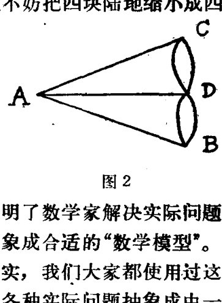
可别小看了这一步，它正表明了数学家解决实际问题的独特之处——把一个实际问题抽象成合适的“数学模型”。这种方法叫做“数学模型方法”。其实，我们大家都使用过这种方法，列方程解应用题，不就是把各种实际问题抽象成由一个
· 158 ·
（或一组）方程式构成的数学模型吗？
欧拉的下一步工作，是把“七桥问题”的提法改变了一个角度。原先，人们是要把那条不重复的路线找出来；现在，欧拉首先要研究，这种不重复的路线存在还是不存在？
就是这么改变一下提问题的角度，欧拉就抓住了问题的实质。那条不重复的路线如果存在，寻找它才是有意义的；如果根本不存在，寻找它不就是白费力气吗？
这种研究问题的角度，就是所谓“存在性问题”，在数学研究中占有十分突出的地位。大家一定还记得，从古希腊时期起，曾经有许许多多的人企图用尺规三等分角，结果都失败了，直到1837年由闻脱兹尔证明三等分角的尺规作图方法根本不存在以后，人们才放弃了这种徒劳的努力。尽管现在还不时有人声称自己找到了三等分角的解法，那都是根本不值一看的。由此可见研究“存在性问题”的重要意义。
那么，不重复地通过七桥的路线究竟是否存在呢？也就是说，一笔画出图2的方法是否存在呢？
欧拉考察了一笔画的结构特征。一笔画有个起点和终点（当图形是封闭的，起点就与终点重合），而中间每经过一个点，总有画到那点去的一条线和从那点画出来的一条线。因此，单独考察一笔画中的任何一个点，除开起点和终点以外，都应该和偶数条线相连；如果起点和终点重合，那么连这个点也应该和偶数条线相连。
拿这个一般法则分析图2，我们立即可以看出，图中的A、B、C、D四个点，每个点都与奇数条线相连。
因此，欧拉断言，一笔画出图2的方法是不存在的，从而不重复地通过七桥的路线也是不存在的。
·159·
一个难住了那么多人的问题，竟是这么一个出人意料的答案！
欧拉解决“七桥问题”的方法并不深奥，但却很新颖。它的新颖之处还在于图 2 的“一笔画”问题虽然是一个几何问题，可是这种几何问题却是欧几里得几何所没有研究过的。欧几里得几何研究的，都是与几何图形的长度、角度等有关的性质，而在“一笔画”问题里，线条的长短曲直、交点的准确方位，都是无关紧要的，要紧的只是点线之间的相关位置，或相互连结的情形。你也可以把图 2 改画成图 3 的样子，或者别的什么类似的图形，但是并没有改变这个“一笔画”问题的实质。因此，欧拉认为这类问题的研究，是一门新的几何学分支，并且采取莱布尼兹的提法，把它称为“位置几何学”。

图 3
欧拉在解决了“七桥问题”之后，又于 1750 年在研究凸多面体的分类中，得出了一个重要结果：\(V-E+F=2\)，其中 \(V\)、\(E\)、\(F\) 分别表示凸多面体的顶点数、棱数和面数。这就是高中立体几何中著名的关于凸多面体的欧拉定理。
欧拉的这些研究成果，都属于“位置几何学”的内容。后来，到十九世纪中期以后，这门新的几何学分支中又获得了一系列新的结果。因为当时蓬勃复兴起来的射影几何学也叫位
- 160 -
置几何学，为了把这两门几何学分支区别开来，1848年，德国数学家利斯廷就把这门新的几何学分支称为“拓扑学”（“拓扑”是英文 topology 的中文音译）。
现在，拓扑学已经成长为数学的一个庞大分支。

·161·
法国的“三L”¶
1766年，欧拉在俄国女皇叶卡杰琳娜的诚恳敦聘下，决定重返彼得堡科学院工作，临行前，他辞去了德国柏林科学院物理数学研究所所长的职务。谁来继任呢？欧拉向腓特烈国王推荐了一位数学家，并且强调说，全欧洲也只有这个人才能胜任。同时，颇有声望的法国数学家达朗贝尔(1717-1783年)，也向腓特烈国王作了同样的推荐。于是，腓特烈国王发出了邀请信，信中有这样一句话：“欧洲最大之王希望欧洲最大的数学家在他的宫廷中。”
这位备受人们推崇的数学家，就是法国的拉格朗日(1736-1813年)。拉格朗日是当时仅次于欧拉的大数学家，在数论、变分法、微分方程及力学等领域中均有重大的建树。
拉格朗日的祖父是法国人，祖母是意大利人，他出生在意大利西部的都灵。在少年时代，拉格朗日并不喜欢数学，据说，有一次他读了一篇介绍牛顿的短文后，才变得热爱这门学科了。拉格朗日非常崇拜阿基米德，他渴望能象阿基米德那样广泛运用数学知识去解决实际问题，得到更多的科学结论，虽然他的工作涉及许多数学分支，而他最感兴趣的却是把引力定律应用于行星运动。
十九岁时，拉格朗日当上了都灵皇家炮兵学校的数学教授。也就从这时起，他开始同欧拉通信探讨“等周问题”。拉格朗日率先较好地解决了“等周问题”，从而奠定了变分法的
- 162 -
基础，他是变分法的创始人之一，这门新的数学分支的创立，为整个数学物理提供了一个最重要的方法。
1764年，法国科学院悬赏征答一道数学难题。群雄逐鹿，强手云集，最后，才华出众的拉格朗日摘取了桂冠。拉格朗日的成功，鼓舞了法国科学院的院士们，他们接着又提出一个更为困难的问题悬赏征答，1766年，拉格朗日再次捷足先登，获取了科学院颁发的奖金。在解答这些难题时，拉格朗日大量地应用了微分方程的理论。什么是微分方程呢？微分方程就是表示未知函数和未知函数的导数以及自变量之间的关系的方程。这是一门建立在微积分基础之上的新数学分支，拉格朗日为它的创立作出过杰出的贡献。
1786年，腓特烈国王去世了，德国对科学家不再那么尊崇了。拉格朗日接受法国国王路易十六的邀请，离开他工作了二十年的柏林科学院，来到巴黎定居。
不久，轰轰烈烈的法国资产阶级大革命，推翻了路易十六的统治。革命政府曾下令“逐客”，将所有的外国人驱逐出境，但“逐客令”上却特别指出，拉格朗日是这项法令的例外。可以想象，拉格朗日在当时拥有多么高的声望。
天才的军事家拿破仑当上法国皇帝后，大力扶助过法国的科学事业，数学家拉格朗日、拉普拉斯（1749-1827 年）都曾受到他的资助。
拉普拉斯是一个农民的儿子，十六岁时进入开恩大学学习数学。完成学业后，拉普拉斯带着浪漫主义的情调来到了首都巴黎，他带着几封介绍信去求见大数学家达朗贝尔，却遭到达朗贝尔的回绝。拉普拉斯没有灰心，他给达朗贝尔写了一封信，阐述了力学的一般原理，这次，他很快就收到了达朗
- 163 -
贝尔的复信，信中热情地说：“你用不着别人的介绍，你自己就是很好的推荐书。”
在达朗贝尔的帮助下，拉普拉斯很快取得了巴黎军事学校的数学教授职务。1783年，拉普拉斯作为军事考试委员，考试过拿破仑，因此和拿破仑关系很熟。后来，拿破仑曾任命他担任内政部长、议会议员和议会大臣，不过，拉普拉斯不是做官的材料，很快就被拿破仑免除了职务。据说，拿破仑曾讥笑拉普拉斯企图把“无穷小的精神”带入内阁。
拉普拉斯创造了许多新的数学方法，它们后来被发展成为新的数学分支。然而，拉普拉斯对数学是不耐烦的，他对纯粹数学不感兴趣，他爱好应用，关心用数学方法去研究科学问题。当他在科学研究中碰到数学问题时，他解决得非常马虎，并且仅仅说，“容易看出，……”，从不耐心解释他是如何得到结果的。有个美国科学家在翻译了拉普拉斯的著作后，曾经叫苦说，只要一碰见“容易看出，……”这句话，我就知道又得花几个小时的苦功夫来填补这个空白。拉普拉斯认为，数学是一种手段，是人们为解决科学问题而必须精通的一种工具。
拉普拉斯最著名的著作是《天体力学》，它吸取了前人的全部发明，阐述了天体运动的数学理论，是天文学研究发展史上的一座高峰。拿破仑在浏览了《天体力学》后，和拉普拉斯开了个玩笑，指责他说：“拉普拉斯先生，有人说你写的这部宇宙体系的巨著，却没有提到宇宙的创造者（指上帝）。”拉普拉斯毅然答道：“是的，我不需要这种假设。”
“我不需要这种假设”，拉普拉斯的回答，反映了一种新的数学信念的形成。在遥远的古代，人们以为上帝是万能的，是上帝用数学规律设计了宇宙，而科学家的工作就在于寻找上
·164·
帝预先定好的规律。在文艺复兴时代以后，随着地上科学技术的进展，人们重新描绘了“天上”的偶像：上帝变成了一个最好的数学家。这实际上否定了上帝主宰一切的观念，但不彻底，所以一种新的数学方法的发明，往往随之奏起一曲对上帝的颂歌。到了十八世纪下半叶，方兴未艾的革命风暴涤荡着旧制度的污泥浊水，科学技术获得了巨大的进展，人类对掌握自己的命运充满了信心，益发清晰地认识了宗教是如何曲解自然现象本质的，开始彻底摆脱宗教观念对科学技术的束缚。这样，上帝的牌位也就逐渐被请出了数学的殿堂。
拉格朗日和拉普拉斯都是著名的数学家，他们名字的头一个字母也都是 L，说来有趣，当时另一个著名的法国数学家勒让德（1752–1833年），名字开头的第一个字母也是 L。
勒让德也是军事学校的数学教授，他的名字长存于大量的定理之中。他解决了许多类型的数学问题，特别是对椭圆函数作出了重要的贡献。
人们将这三位杰出的学者并称为法国数学界的“三 L”。除了“三 L”之外，当时的巴黎还拥有许多第一流的数学家：达朗贝尔，促进了微分方程理论的发展；傅立叶（1768–1830年），开创了一个巨大的数学分支——傅立叶级数；蒙日（1746–1818年），画法几何学的创始人；……这群法兰西民族的骄子，用他们创造性的劳动，使法国数学研究在十八世纪下半叶一直居于世界前列。
法国数学家们的工作，比较鲜明地体现了十八世纪数学的特征。由于没有数学理论作为指导，为物理学见解所指引，所以他们的工作是直观的、粗糙的、不严密的。然而，人们不会忘记，正是他们，以大无畏的英雄气概，刀耕火薅（hāo）式的
- 165 -
方式，开垦了数量惊人的处女地，并辛勤耕耘，为十九世纪数学的丰收奠定了基础。
达朗贝尔的一句名言，抒发了十八世纪数学家的豪情。这句话是：“向前进，你就会产生信念。”
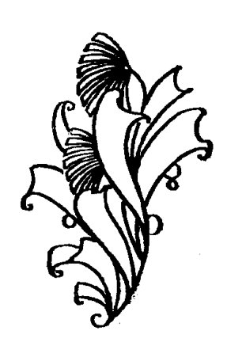
• 166 •
英雄的失误
在现代很多数学教科书中，有成串的定义、公式、定理都联系着欧拉的名字。欧拉在一生中写出了那么多优秀的数学著作，编成全集可以出到七十多卷，其中的每一个数学符号都仿佛在闪烁智慧的光芒。
你可曾想过，象这样伟大的数学家，在数学问题上也犯过十分荒谬的错误吗？
其实，再伟大的数学家，也不是超凡脱俗的神仙，他们之所以有超群的成就，是因为他们付出了比一般人更为艰苦的劳动，甚至犯过比一般人更多的错误。也许，正由于他们有辉煌的成就，因而他们的错误也格外引人注目。
欧拉在无穷级数问题上犯的错误，就是一个典型的例子。
下面的式子就是一个无穷级数：
它是由无穷多项 \(+1\) 与 \(-1\) 交错相加而得到的。
可以求出这个式子的和吗？
欧拉说，可以。他采取一种将函数展开成级数的方法推导出①式的和是 \(\dfrac{1}{2}\)。
这个结果对不对呢？
在他得到这个结果的前后，有好几个数学家也得出了同样的结果。意大利比萨大学的教授格兰迪（1671—1742年）
·167·
曾经用类似的推导方法得到这个结果。另一位数学家雅各·伯努利则是用另一种方法得到这个结果的：
把①式的和记成 \(S\)。如果把①式改写成
那么就得到
从而
很容易看出，伯努利在推导这个结果时，仅仅只是在这个无穷级数求和中运用了加法结合律。这似乎应该是不成问题的，可是偏偏问题来了。如果我们同样运用加法结合律，不过把①式中的项按另外的方式结合，比如，把①式改写成
那么它的和应该是 \(0\)。但如果把①式写成
那么它的和又应该是 \(1\) 了。
同一个无穷级数，竟求出三个不同的和，究竟哪一个结果正确呢？
格兰迪说，由于级数①在形式③下的和是 \(0\)，而他求出①式的和是 \(\dfrac{1}{2}\)，因此，他就证明了，世界能够从空无一物中创造出来。这就似乎为上帝的存在找到了证据。多么荒谬的结论！
事情还没有完呢！有趣的是，在欧拉得出①式的和为 \(\dfrac{1}{2}\) 这个结果将近四十年以后，另一位数学家卡莱（1744—1799
- 168 -
年)也采用了类似的方法，但却推导出①式的和是 \(\dfrac{m}{n}\)，其中 \(m<n\)，且 \(m\)、\(n\) 可以是任意选取的自然数，也就是说，①式的和可以是任意的真分数，有无穷多个结果。这可把人越搞越糊涂了——不同的结果都来自相类似的推导方法。要么这些推导方法是正确的，那么我们就得接受这些混乱的结果；要么这些结果不可能都对，那么推导的方法就有问题，从而由这些方法推出的结果就没一个正确，欧拉也不例外。
结论当然是，这些数学家都出了错。原因在于，他们所处理的“求和”问题，是由无穷多项组成的级数，而不是我们通常所遇到的由有限项组成的多项式，对于多项式是适用的方法（比如加法结合律），对于无穷级数未必就是普遍适用的。研究新的数学对象，需要发展新的概念、新的方法。事实上，无穷级数并不都是可以求和的。比如①式，它的前偶数项相加得 \(0\)，前奇数项相加又得 \(1\)，而无穷多项相加就不能求和。哪一类无穷级数可以求和，哪一类无穷级数不能求和，正是研究无穷级数所首先要解决的问题。
可是，在欧拉那个时代，这个问题还没有得到解决，在欧拉的思想中就存在很大的混乱。他不仅得出①式的和是 \(\dfrac{1}{2}\) 这样的错误结果，还出过更荒谬的错误哩！
用与推导出①式的和为 \(\dfrac{1}{2}\) 相类似的方法，欧拉又推导出
从⑥式看，无穷多项正数的和竟是一个负数，这已经是够荒谬的了。再比较一下⑤式和⑥式的右边，都有无穷多项，而从第
· 169 ·
三项起，⑥式每一项都大于⑤式的对应项，因此，就只能得出结论：-1 比 ∞（无穷大）还要大！
为什么会产生这些错误呢？
这还必须从十八世纪数学的状况说起。十八世纪在数学史上是一个发明的世纪。当时，资本主义正处在上升时期，英国已经发生了第一次工业革命。大机器工业的兴起，首先向物理学提出了大量新的研究课题，而刚刚建立起来的微积分，又为物理学研究提供了强有力的数学工具。在时代精神的感召下，数学家们对研究物理学或工程技术问题，抱有与研究数学同样的热情，并且从物理学问题中源源不断地获得数学灵感。于是，很多新的分支——无穷级数、微分方程、微分几何、变分法，等等，在数学家手里建立起来了，微积分迅速拓展为被称为分析学（包括上述分支）的一个广阔领域。数学家们象一支开拓新疆域的大军，满怀着胜利的信念，致力于拓广分析学的疆界，攻关夺隘，呼啸向前，既没有急于搭建凯旋门，也来不及清理和巩固后方基地。在一系列新的研究成果如喷泉一般涌出的同时，分析学的一些最基本的概念却并没有搞得很清楚，数学家们的理解存在着很大的混乱。简而言之，微积分还没有建立起严密的基础。在这种情况下，数学家们的工作中，既有辉煌的创造，又有荒唐的失误，就是不奇怪的了。
这种混乱状况，为唯心主义者提供了攻击微积分的借口。1734 年，英国大主教贝克莱向微积分发动了一次最猛烈的攻击。他抓住微积分缺乏严密性这件事，嘲讽微积分还不如宗教信条构思清楚、推理明显。
贝克莱把微积分与宗教相提并论，目的是企图调和科学与宗教的矛盾，这种立场是反科学的。但是，不能不承认，他
- 170 -
对微积分的批评，也并非是无中生有、信口雌黄。数学家们对微积分缺乏严密性这种状况也是不满意的，法国数学家罗尔（1652—1719 年）——微积分中有一个重要定理就是以他的名字命名的——曾经幽默地说，微积分是巧妙的谬论的汇集。
但是，又有哪一种理论是一诞生出来就完美无缺的呢？理论需要在实践中开辟发展的道路，需要在实践中逐步成熟和完善，这不是科学发展的一般规律吗？
正是欧拉本人，曾经坚定地说，在微积分的基本概念中并没有隐藏人们通常想象的那么大的神秘性。他，以及其他数学家，如拉格朗日、达朗贝尔，都为重建微积分基础进行了探索。
1784 年，柏林科学院悬赏征求“对数学中称之为无穷的概念建立严格的明确的理论”。数学界在焦灼中期待着新的世纪。
·171·
勤奋的高斯¶
在十八世纪里，数学家们创立了许多新的数学分支，每一门分支都是一项重要的创新，都足以使古希腊人的巨大创造——欧几里得几何学相形见绌。然而，数学家们没有意识到，当他们忙于用微积分去开拓数学王国的疆域时，由于无暇顾及所依据的理论是否可靠，基础是否巩固，业已出现谬误愈来愈多的混乱局面。正相反，在十八世纪末期，部分数学家中反而蔓延着这样一种悲观情绪，认为：数学就象一口被挖掘得很深的矿井，若找不到新的矿脉，迟早得要放弃了，数学思想也快要山穷水尽了。
十九世纪的帷幕刚刚拉开，人们的忧虑便烟消云散了。伟大的数学家高斯(1777—1855年)，用他深刻的洞察力和卓越的发现，为数学描绘了一幅极其灿烂的前景，预告了一个更加伟大的数学高潮的到来。
高斯是近代数学的重要奠基者，是一个罕见的数学奇才，有人甚至称他是“数学之王”。他异常敏捷的数学思维能力和辉煌的数学成就，也给后世留下了许多近乎神话的传说。

高斯九岁的时候，在一所小学里念书。有一天，数学老师布特纳给学生们出了这样一道
·172·
习题：把 1 到 100 这一百个数都加起来，和是多少？
如果逐项相加，那得花很长的时间。不料，老师刚解释完题目，小高斯就把写着答案的小石板举了起来。布特纳老师心里想，这个全班年龄最小的孩子准是瞎写了些什么，要不就是准备交白卷，可他接过小石板一看，不觉大吃了一惊。
小石板上工工整整地写着：
“等差数列里与中项等距离的项的和相等”，高斯巧妙地利用这一性质，极其迅速地获得了答案。有经验的布特纳立即意识到这是一件不寻常的事，在此之前，他可从未教过学生计算等差数列。据说，老师买了一本最好的算术书送给高斯，甚至还对人说他已没有什么东西可教给高斯了。
高斯继续留在学校里学习。谁又曾想到，这么个出类拔萃的学生，还险些没有上学的机会呢！
高斯出生在德国一个工人的家庭里，小时候，由于家里生活贫困，高斯的父亲压根儿没打算送他去上学。有一天，高斯的父亲计算工薪帐目，算了老半天才算完，不料坐在一旁玩的小高斯却说：“爸爸，您算错了，应该是……”核对一遍，竟是小高斯说得对。高斯的父亲又惊又喜，这才决定等高斯七岁时送他上学。
高斯非常勤奋，读书都入了迷。有一次，他边走路边看书，结果误入了一个公爵的花园，公爵夫人在盘问高斯时，发现这个小孩竟能弄懂书中那么深奥的道理，感到不可思议，赶
·173·
紧告诉了公爵。公爵亲自考查了高斯，也很惊奇，认为是个难得的人才，决定资助他上大学深造。
1795年，十八岁的高斯进入了著名的哥廷根大学。入学还不到一年，他就取得了惊人的成就，他用尺规作图的方法，作出了一个正十七边形，解决了这个由古希腊人提出、但延续两千多年未能解决的数学难题。高斯本人对能得到这个结果也非常满意，按他的话说，他是在作出了正十七边形之后，才决心致力于数学研究的。
不久，高斯又给出一个判别方法，指出什么样的正多边形可由尺规作图法作出，什么样的正多边形则不能。比如，用尺规作图法可以作出正二百五十七边形、正六万五千五百三十七边形，却不能作出正七边形、正十一边形。在数学史上，这是最早的关于数学问题解的不可能性的证明，因而具有重要的意义。
有些人喜欢把高斯说成是“神童”，可高斯自己不这么看，他强调说：“假如别人和我一样深刻和持续地思考数学真理，他们会作出同样的发现的。”勤奋地学习，勤奋地探索，勤奋地工作，这就是高斯成功的秘诀。由于高斯能不断地勤奋探索，所以能不断地作出发明。
在高斯之前，人们就认识了虚数，比如方程 \(x^2+1=0\) 的两个根 \(\sqrt{-1}\)、\(-\sqrt{-1}\)，就是虚数。虚数是由于数学内部的需要产生的，但因为一时无法在客观世界中找到合理的解释，人们总觉得它是虚无缥缈的，于是给它起了个怪诞的名字“虚数”。莱布尼兹甚至说：“虚数是美妙而奇异的神灵的隐蔽所，它几乎是既存在又不存在的两栖物。”高斯提出了复数表达式 \(a+bi\)，创立了复数的图解法，建立了平面上的点与复数
- 174 -
之间的对应关系，使得虚数不“虚”，促进了复数理论的发展。
一个方程究竟有多少个根呢？这也是长期折磨数学家的一个问题。1799年，高斯提出了著名的代数基本定理，圆满地作出了回答。高斯没有逐个地解方程，但却证明了 \(n\) 次的方程有也只有 \(n\) 个根，他采用的方法，开创了探讨数学中研究存在性问题的新途径。
高斯兴趣广泛，他不知疲倦地探索了数学的各个领域，并几乎在每个领域内都有所建树。比如微分几何学，就是由高斯确定其发展的基本方向的。高斯对天文学和大地测量学也很有研究，获得过“哥廷根巨人”的美称，他还和科学家韦伯共同发明了电磁电极，为了纪念高斯，人们还把他的名字做为磁通量密度的单位呢！然而，高斯最喜爱的学科是数论，他称数论是“数学之王”，他的重要著作《算术探讨》奠定了近代数论的基础，也是历史上最有代表性的数学著作之一。
高斯曾经英明地预见到，用代数方法解一般高次方程是不可能的。他的思想给阿贝尔和伽罗华以有益的启迪，后来，这两个年轻数学家经过深入探索，不仅证实了高斯的猜想，还揭开了代数学上完全崭新的一页。
高斯的成就越来越大，名气也越来越大，而他对自己的要求也越来越严。每一个新的数学结论，高斯总是等到认为是完美无瑕(xiá)时才奉献给社会。他知多言少，他有许多宝贵的思想，当他在世时一直鲜为人知。
远在1816年，高斯就已知道欧几里得的“第五公设”是不能够证明的，更进一步，他得到了一种新的几何——非欧几里得几何学的基本原理。这门新的数学分支，是对几千年传统几何学说的彻底背叛，高斯没有发表他的理论。若干年后，
- 175 *
勇敢的数学家亚诺什和罗巴切夫斯基，各自独立地获得了非欧几何的基本原理，立即在几何王国里掀起了一场翻天覆地的革命。
因此，有些数学家认为，高斯在晚年时太拘谨了，如果他能早些公开他的真知灼见，人们也许会更快地迈入新的领域。
1855年2月23日，高斯逝世于德国的哥廷根。人们根据他的遗愿，在墓碑上刻了一个正十七边形，以纪念他早年的杰出数学发现，纪念这位历史上最伟大的数学家、近代数学的奠基人。

• 176 •
革命狂飙
1789年7月14日，成千上万名愤怒的巴黎市民，攻占了法国封建专制制度的堡垒——巴士底监狱，揭开了法国大革命的帷幕。
法国大革命，是资产阶级革命时代最大、最彻底的一次革命。列宁说过，这次革命"给资产阶级做了很多事情，以至整个十九世纪，即给予全人类以文明和文化的世纪，都是在法国革命的标志下度过的"。
法国大革命是由人民发动和完成的，不少优秀的知识分子也投入了革命的行列，在他们中间，就有一些著名的数学家。
革命，不是在一天早上就突然发生的，它有一个酝酿和准备的过程。作为法国大革命的思想准备和舆论准备，法国"百科全书派"开展的思想启蒙运动，具有不可磨灭的历史作用。
"百科全书派"是以伟大的哲学家狄德罗（1713—1784年）为代表的一个唯物主义派别，著名数学家达朗贝尔（1717—1783年）也是这个派别的一员。他们热情地向人民传播科学知识和革命思想，以坚韧的毅力，在二十六年间出版了多达三十五卷的《百科全书》，其中数学部分就是由达朗贝尔负责编纂的。
达朗贝尔有过苦难的经历。他刚刚来到人世，连姓名都没有，就成了一个弃儿。人们在圣勒隆教堂门口的台阶上发
- 177 -
现了他，于是警察局的官员给他取了勒隆这个名字。达朗贝尔这个姓是他成年以后自己取的，用来纪念培养了他的阿兰贝尔。
达朗贝尔在十八世纪数学的很多领域都作出了重要贡献；在当时探索微积分严密化途径的努力中，他是少数几个路子对头的数学家之一。他提出极限理论是微积分的基础，在编纂《百科全书》时，给极限下了一个近似正确的定义。
《百科全书》所产生的革命影响是非常大的，它教育了人民从宗教神学的精神桎梏下解放出来。法国当时的一位首席检察官说："哲学家们改变舆论，从而动摇了王位，推翻了神坛。"
法国大革命爆发以后，经历了曲折的、激烈的斗争过程。到第四年，革命与反革命的生死搏斗更加剧烈了。
1793年1月15日晚上，成群结队的巴黎市民涌向议会大厅。在那里，国民大会的七百多名议员，将唱名表决被废黜（chuò）的国王路易十六的命运。坐在议会大厅右边的，是执政的吉伦特派，他们害怕人民的力量在革命中进一步壮大，主张对国王宽容；坐在左边的雅各宾派，顺应人民的意志，坚决要求彻底清算国王叛国和反对革命的罪行。左派和右派尖锐对垒。经过两天三夜的表决，人民的意志终于取得了胜利。作恶多端的路易十六，在1月21日的倾盆大雨之中，被推上了巴黎革命广场中央的断头台。
在坚决要求处决路易十六的雅各宾派议员中，有一个四十多岁的军事工程师和数学家，叫拉扎尔·尼古拉·卡诺（1753—1823年）。革命造就了他特别的才干，在他身上兼有学者的睿（ruì）智和战士的胆略。作为一名战士，他在革命政
- 178 *
府中担任了陆军部长，当国内外反动派勾结起来企图用武力颠覆革命政权的时候，他在很短的时间内便组织起一支有十四个军的革命军队，战胜了外国的武装干涉。人民热情地赞誉他是“革命的将军”、“胜利的组织者”。作为一位数学家，他是巴黎科学院的成员，与另一位数学家蒙日一起倡导了几何学在十九世纪的复兴，成为法国几何学派的先驱者之一。
法国几何学派的伟大倡导者和领导者蒙日（1746—1818年），也是法国大革命中的一位风云人物。他是一个小商贩的儿子。在革命以前，法国社会中贵族与平民之间等级森严，地位悬殊，当蒙日在军事工程学校求学时，仅仅因为他不是贵族出身，就只能被派到训练石工领班的班上学习。他完全凭靠自己的勤奋和出类拔萃的才华，在二十三岁时担任了军事学校的教授。在军事工程的实践和理论研究的基础上，他创立了新的数学分支——画法几何学。这是一门应用数学，是工程技术人员设计和绘制机械图的基础。
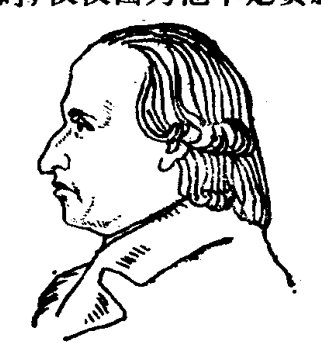
蒙日的研究范围相当广泛，不仅对数学，而且对物理学、化学、冶金学、机械学，都作出了重要成就。革命以前，他就已经是巴黎科学界深孚（fú）众望的知名学者了。在他四十三岁的时候，法国大革命爆发了，他热情地欢迎和支持革命，后来被革命政府任命为海军部长和公众健康委员会委员。
革命需要科学，革命也为科学的发展铺设广阔的道路。法国大革命对科学事业作出的巨大贡献之一，就是运用革命权威在全国推行十进制，统一度量衡。蒙日以及著名的“三L”
• 179 •
等数学家参加了研究这个问题的专门委员会的工作。现在国际通用的米、公斤、秒等度量单位，都是在那时开始统一规定的。
法国大革命对科学事业作出的另一个巨大贡献，是大力发展教育。1794年，国民公会决定建立巴黎多科工艺学院，它的第一批数学教授中，就有蒙日、拉格朗日、拉普拉斯。蒙日是一位伟大的教师，他的讲演生气勃勃，内容丰富，具有极大的感染力。在当时数学研究中，盛行分析的方法，几何学使用的综合方法受到冷落，蒙日倡导用一种把几何与分析相统一的双重观点研究数学，从而唤起了几何学新的生机。他的不少学生都继承了老师的这种思想，形成了一个几何学派，其中有一个学生，就是后来为射影几何学的复兴作出了伟大贡献的彭色列。
巴黎多科工艺学院是一个人才荟萃的地方。第一流的教师，培养出第一流的学生。这所学校优秀的学术传统由它的学生们发扬光大，使大革命以后的法国成为十九世纪上半叶数学发展的一个中心。
- 180 -
铁窗下面
1813年，俄罗斯四月的阳光射进伏尔加河畔萨拉托夫监狱的铁窗，给阴暗寒冷的牢房送来了一丝温暖。一个衣衫褴褛(lán lǚ)的囚犯，抬头望了一眼窗外晴朗的蓝天，浓眉下闪过两点亮光。他站起身来，一边用力地舒展双臂，一边沿着牢房的对角线走了两个来回，然后重新蹲下，拾起一根烧过的木炭，在墙上继续完成他的图画——从一点发出的一束射线，穿透一个平面，又射到第二个平面上……
这是一个多么奇怪的囚犯啊！在失去自由的阴暗牢房里，在命运掌握于别人之手的时候，他竟这样沉醉于美的创作，似乎完全忘记了自己的厄运。他是一位现代抽象派画家的先驱者吗？也许，墙上的这幅图画，正是他对阳光射进铁窗这一景象的即兴创作？
他不是画家，而是一位数学家，是一位年轻的法国数学家，叫彭色列。
彭色列(1788—1867年)是巴黎多科工艺学院的毕业生，依照拿破仑的强迫征兵制，被编入进军俄国的远征军担任工兵军官。1812年冬天降临的时候，这支六十万人马的侵略军在莫斯科遭到惨败，无数法国士兵的尸体和冻馁无力的伤员，被丢弃在冰雪严寒的俄罗斯大地上，只剩两万余人仓惶逃出俄国国境。俄国士兵在搜索战场的时候，从死尸堆里发现了一名奄奄一息的法国军官。就这样，二十四岁的彭色列成了
·181·
俄国人的俘虏。
作为一名法国军人，彭色列是拿破仑侵略扩张政策的牺牲品；作为一名数学家，他可决不甘心因为沦为战俘而就此葬送自己心爱的科学事业。当他在大风雪中步履艰难地经过四个月的长途跋涉，被俄国士兵押解到萨拉托夫监狱以后，他就在牢房的石墙上重新开始了数学研究。
在远离故土的监狱里，彭色列一无所有。他完全依靠自己的记忆力，重温从老师蒙日和卡诺那里学到的数学知识，在石墙上进行大量的数学演算。他仿佛重新回到了巴黎多科工艺学院，置身于生气勃勃、富于进取精神的同学们中间，耳边又响起了蒙日教授充满激情的演讲。
数学思维一经启动，创造的激情便不可遏止地奔泻而出，彭色列开始在牢房里着手新的数学创造。他设法弄到了一些纸张，于是，他可以把自己的研究心得记录下来了。无论是在面壁苦思的日子里，还是伏在床上奋笔疾书的时候，彭色列全身心地感受到创造的欢乐和美的享受，完全忘记了饥饿和寒冷，忘记了自己是一个身陷异国监狱的囚徒。监狱里的看守和其他的囚犯，都认为他是一个举止怪异的“痴人”，无论如何也想象不到，这个被监狱生活折磨得瘦骨嶙峋的法国青年，正在墙壁和纸张上，为一门被冷落了的数学分支注入新的血液，开拓新的天地。
自从古希腊时期以来，研究几何学的传统方法是综合法，这种方法是我们学习初中平面几何时所熟知的：从已知条件出发，根据公理和已经得到证明的定理，推证新的几何命题。因此，传统的几何学也称综合几何学，或纯粹几何学。欧几里得的《几何原本》是综合几何学发展的一个高峰，而在文艺复
· 182 ·
兴时期，那些天才的艺术家们为了在画布上忠实地再现大自然，对透视法进行了深入的研究，又给综合几何学注入了新的灵感。
所谓透视法，就是把人眼当作一个点，由此出发来观察实际的景物，人眼投射到实景上各点的视线束形成一个投射锥，而画面实际上就是用一个平面与这个投射锥相截所得到的截影。比如，实景是一个水平放置的矩形 \(ABCD\)，画面上得到的截影便是四边形 \(A'B'C'D'\)（如图）。从直观上看，截影四边形 \(A'B'C'D'\) 与原矩形 \(ABCD\) 既不全等也不相似，但在视觉印象上，它们却是一样的。因此，人们很自然地要问：截影和原矩形有什么共同的几何性质？换句话说，原矩形在投射和截影下有哪些几何性质保持不变？这类由艺术家们提出的课题，引起了一些数学家的兴趣。

在十七世纪三、四十年代，两位法国数学家笛沙格（1591—1661年）和帕斯卡（1623—1662年）获得了一系列新的方法和结果，他们把这些新的方法看作是欧几里得几何的一部分，实际上却是一门新分支的开端。这门新的数学分支，就是射影几何学。
但是，射影几何学在十七世纪只经历了一个短暂而活跃的研究时期，就被解析几何和微积分的兴起所淹没。十八世纪以来，在几何学的研究中，代数的和数学分析的方法几乎排斥了综合的方法，一向被人们看作美与和谐的象征的综合几何学，正在逐渐失去昔日的风彩和魅力。是蒙日重新强调了几何方法的重要性，卡诺则迈出了复兴射影几何学的第一步。
· 183 ·
作为以蒙日为代表的法国几何学派的继承人，彭色列在萨拉托夫监狱里所进行的数学研究，就是要创造出与解析几何的威力相匹敌的新的综合方法。
1814年6月，彭色列结束了将近一年半的囚徒生活，带着七本笔记本走出了萨拉托夫监狱。回到祖国之后，他担任过母校的数学教授，后来在政府中担任公职。在繁忙的行政事务之余，彭色列对自己在狱中的研究成果作了更细致的修订和补充，在1822年出版了《论图形的射影性质》，又在1862—1864年中，以《分析学与几何学的应用》为题，分两卷出版了自己的狱中笔记。
彭色列第一个明确地认识到射影几何学是一门具有独特方法和目标的新的数学分支。射影几何学研究的是几何图形在投射和截影下保持不变的性质，彭色列的著作为这门新的数学分支奠定了理论基础。在他之后，射影几何学的研究在十九世纪形成了一股热潮，很多著名数学家都被吸引到这股热潮中来。随着研究的深入，进一步揭示出射影几何在逻辑上是比欧几里得几何（以及十九世纪二十年代诞生的“非欧几何”）更基本的几何学，前者包容着后者，后者可以看作是前者的特例。
监狱，对于不幸沦为囚犯的人们来说，可能是堕落的深渊，也可能是新生的起点；而对于数学家彭色列，监狱生活却是他科学生涯的一段黄金岁月。苦难成就了他的事业，他终于实现了自己的老师蒙日和卡诺的夙（sù）愿，使几何学重新焕发出迷人的光彩。
·184·
数学疑案¶
射影几何学所取得的一系列研究成果，开辟了十九世纪上半叶几何学研究的一个光辉灿烂的时期，这一时期最富有革命性的成果，是非欧几何学的诞生。它曾经象一个怪胎，在人类智慧的母体中孕育了两千多年，一旦问世，就犹如神话中的哪吒从肉球中蹦出来那样，奇光异彩，令人惊讶和目炫。
这个"怪胎"，竟根源于我们大家都很熟悉的一个几何命题。
"三角形的内角和等于180°"，这个命题是绝对正确的吗？
如果有人提出这样的疑问，你也许会立刻给出一个漂亮的证明，帮助他赶快驱走这个奇怪的念头。
如图，延长△ABC的一边BC，过C点作CD∥AB。那么，∠1=∠A，∠2=∠B。而∠1+∠2+∠ACB=180°，所以∠A+∠B+∠ACB=180°。
的确，按照中学数学课本上讲的几何知识，这个证明是完全正确的。可是，如果人家还要追根究底地问："在这个证明中，关键的步骤是过C点作了直线AB的一条平行线CD。这样作的根据是什么？"这时，你该怎么回答呢？
你可能会发笑了：
"'过已知直线外的一点可以作而且只能作一条直线与这

·185·
条已知直线平行'，这不是众所周知的几何公理吗？”
不错，这个公理就是欧几里得提出的平行公理，它在《几何原本》中被列为第五公设。
《几何原本》的确是人类智慧的结晶，多少年来，中学几何教科书都是以《几何原本》为蓝本，我们就是从这里入门，去建立关于周围世界的空间概念的。因此，我们在中学所学的几何学，也叫做“欧几里得几何学”，它所描述的空间概念，也叫做“欧几里得空间”。它的每一个定理，都是经过严谨的推理得出来的，在逻辑上不能不令人信服；它对空间形式的描述，与我们的日常经验也是吻合的。我们不是在上小学的时候，就知道了矩形的四个顶角都是直角，黑板的上、下两条边沿线是平行线吗？怎么可以设想，现实空间竟可能不是欧几里得式的呢？
正是由于这些原因，造成了一种根深蒂固的传统观念：《几何原本》是几何学的神圣而不可逾越的顶峰。直到十九世纪初，这种传统观念一直牢固地保持着统治地位，而唯心主义者又给这种传统观念加上了一道哲学的灵光。德国古典唯心主义哲学的创始人康德就认为，欧几里得几何是先天的真理；另一位唯心主义哲学家黑格尔则说，几何学在欧几里得留给我们的范围内可以看作已经结束，不能再有更多的历史了。
如果在科学上真有不可逾越的顶峰，如果人类可以在某一天穷尽对真理的认识，那么，人类的智慧不是就会在这一天凝固起来吗？还会有什么人类的进步、科学的发展呢？
以探求真理为己任的数学家们，是很“挑剔”的，他们并不认为《几何原本》完美无缺。最不让人满意的，就是它的第五公设即欧几里得平行公理。怎样断定两条直线平行呢？这就
- 186 -
必须把它们向两侧无限延长，断定它们在无限延长的每一处都不相交。对于这种情况，人的有限的经验显然是无法作出判断的。因此，把这个超出人的经验范围的第五公设，作为显而易见、不证自明的公理，就缺乏充分的说服力。看来欧几里得本人也对第五公设不很满意，因此，他在《几何原本》中，把不需要用第五公设证明的命题都尽量排在前面，得出前二十八个定理之后，才开始引入这个公理。
既然第五公设不是显而易见的，数学家们就试图从其他公理中把它推导出来，如果办到这一点，第五公设就将成为一个定理，它的正确性也就无可怀疑了。
这种尝试在古希腊时期就开始了。许许多多的数学家，都为摆脱第五公设的困扰耗费了他们宝贵的聪明才智。曾经有很多人都宣称自己“证明”了第五公设，可是，经过仔细检查，发现每一种“证明”都依据了某一个别的命题，从它出发确实能够推导出第五公设，而它本身却又是需要引用第五公设才能证明的。
在数学中，如果两个命题互为前提，由其中的一个命题可以推出另一个命题，反过来也一样，那么就说这两个命题是等价的。到十八世纪末期，数学家们提出了不下三十个与第五公设等价的命题，“三角形内角和等于 180°”就是其中之一，但是第五公设并没有得到证明。
两千多年过去了，第五公设仍然是一个使数学家们困惑的谜，是一桩数学疑案。据说，二千年来，在西方还找不出一个没有研究第五公设的优秀数学家呢！但他们无不束手无策，以至数学家达朗贝尔把这个问题称作是“几何原本中的家丑”。
在探索真理的道路上，数学家们是不怕碰得头破血流的。尽管前人的努力都失败了，但这种努力并非徒劳，它促使后来的数学家寻找新的途径，继续完成前人所没有完成的事业。
既然直接证明第五公设走不通，那么可不可以用反证法来证明它呢？如果采用与第五公设相反的断言，从它可以推导出矛盾来，那么第五公设不就得到证明了吗？
意大利数学家萨开里（1667—1733年）首先沿着这条新途径进行了有意义的努力。
他从一个四边形 \(ABCD\) 开始。其中 \(\angle A\) 和 \(\angle B\) 是直角，\(AD = BC\)。这个四边形，称为“萨开里四边形”。对于这个四边形，萨开里首先证明了 \(\angle C = \angle D\)（注意：萨开里的任务是要“证明”第五公设，因此在证明过程中是不能引用这条平行公理的）。如果 \(\angle C\) 和 \(\angle D\) 是直角，那么“萨开里四边形”就是欧几里得几何中的矩形，就是说，“\(\angle C\) 和 \(\angle D\) 为直角”这个假设与第五公设是等价的。于是，萨开里就考虑两种不同于第五公设的可能情况：
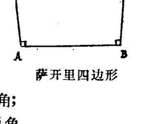
（1）钝角假设：\(\angle C\) 和 \(\angle D\) 是钝角；
（2）锐角假设：\(\angle C\) 和 \(\angle D\) 是锐角。
不难看出，这两种假设在欧几里得几何里是不能成立的。但是我们应该注意到，萨开里作这两种假设的目的，就是为了用反证法来“证明”第五公设。
在钝角假设下，萨开里导出了矛盾，于是他抛弃了这种假设。
在锐角假设下，萨开里证明了许多有趣的定理，它们在逻
- 188 -
辑上没有矛盾，不过在欧几里得几何里却是不可思议的。
萨开里已经站在一种新几何学的大门口了，并且窥见了大门里面许多奇异的景象。可是，他的思想仍然禁锢在欧几里得几何的传统框架里，不敢相信这些与传统观念相悖（bèi）的新结论，认为这些新结论太不合情理，于是就判定锐角假设也不是真实的。1733年，萨开里发表了自己的研究成果，书名反映了他的偏执——叫做《欧几里得无懈可击》。
就这样，萨开里令人惋惜地让一种新几何学从自己的手指缝里溜掉了。后来，德国数学家兰贝尔特（1728—1777年）、施威卡特（1780—1859年）、塔乌里努斯（1794—1874年）都沿着萨开里的道路，走得离真理更近了。他们发现否定第五公设而得出的新结论在逻辑上是成立的，但是，他们依然认为只有欧几里得几何才是唯一真实的几何学。
伟大的“数学之王”高斯，在青年时代也曾试图证明第五公设，后来，他认识到第五公设是不可能证明的，于是致力于研究否定了第五公设的新几何学，并把这门新几何学称为“非欧几里得几何学”。
可是，面对当时根深蒂固的传统观念，高斯失去了宣传新几何学的勇气。他本来在数学界拥有无上的权威，却害怕受人耻笑，因此小心翼翼地隐藏了自己的观点，除了在与朋友的信中透露一点信息以外，在生前对“非欧几里得几何”连一个字也没有公开发表。
西方有一个古老的传说：在果尔迪亚那个地方有一辆战车，上面绑着一团杂乱如麻的绳结，谁能解开这个绳结，谁就能成为小亚细亚的统治者。许许多多的人都尝试过了，但都无可奈何。后来，马其顿的亚历山大王毅然挥剑，斩断了这个
· 189 ·
无法解开的绳结。
第五公设就象这个“果尔迪亚绳结”。两千多年之间，人们都只是想着如何去解开它，正面找不出头绪，就从反面去找。高斯找到了斩断这个“绳结”的“亚历山大之剑”，可是没有勇气在世人面前把它高高地举起来。
敢于挥动“亚历山大之剑”的勇士在哪里呢？

· 190 ·
冲决传统的罗网¶
第一个朝着第五公设即欧几里得平行公理挥动“亚历山大之剑”的勇士，是伟大的俄国数学家罗巴切夫斯基（1793—1856年）。
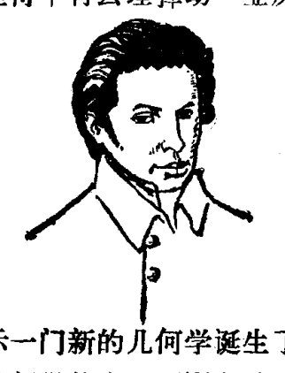
1826年2月23日，在俄国喀山大学数学物理系的会议上，年轻的系主任罗巴切夫斯基宣读了他的论文《平行线理论和几何学原理概论及证明》，昭示一门新的几何学诞生了。
这门新的几何学与欧几里得几何学的主要不同之处，就是它否定了欧几里得平行公理的“唯一性”。欧几里得平行公理的“唯一性”假设是：过已知直线外一点只有一条直线与这条已知直线不相交。而新的几何学采取了一条新的平行公理：
“经过已知直线外的一点至少有两条直线与已知直线不相交。”
因为两种几何学中的平行公理不同，所以凡是欧几里得几何学中与平行公理有关的定理，在新的几何学中就都变得面目全非了。比如说，在新的几何学中，三角形的内角和小于180°，并且不同的三角形有不同的内角和；不存在矩形，也不存在相似三角形；等等。
· 191 ·
当这些与人们的常识相悖的、闻所未闻的新结论展示在世人面前的时候，会引起什么反响，是可想而知的。罗巴切夫斯基简直就象是在数学界触发了一场地震，在那些习惯于在欧几里得几何的框架内思维的数学家中间引起了极大的震惊和不安。
但是，不管人们震惊也罢，不安也罢，一门新的几何学毕竟已经问世了。因为它与欧几里得几何学不相同，所以称为非欧几里得几何学，简称非欧几何学，又因为它是由罗巴切夫斯基最先提出来的，所以又称为罗巴切夫斯基几何学。使数学家们困惑了两千多年的欧几里得平行公理问题，就这样被罗巴切夫斯基挥剑斩断了。
几乎和罗巴切夫斯基同时，另一位年轻的匈牙利数学家亚诺什·波里亚（1802—1860年）也举起了“亚历山大之剑”。
亚诺什的父亲法尔卡什·波里亚，是高斯在哥廷根大学的同窗好友，为证明欧几里得平行公理耗尽了自己毕生的心血。他培养儿子从小就爱上了数学，可是，当他得知儿子也醉心于研究平行公理的时候，简直吓坏了。老波里亚害怕儿子重蹈自己的覆辙，心情悲凉地对儿子说：“希望你再不要做克服平行线理论的尝试，我深知一切方法都到了尽头。在这里面，我埋没了人生的一切光明和欢乐。这是一个毫无希望的黑夜，它能使上千座牛顿那样的灯塔沉没，任何时候都不可能使大地见到光明。”
父亲的劝阻，没有能够使亚诺什知难而退。如果说在过去漫长的世纪里，平行公理象黑夜一样吞没过上千座“牛顿之塔”，那么，为什么就不能由新世纪的青年人点燃划破黑暗的火炬呢？亚诺什没有象父亲那样，掉进证明平行公理的泥塘
· 192 ·
而不能自拔。他很快发现证明平行公理是不可能的，于是毅然转向摒弃欧几里得平行公理，创立新的平行线理论的道路。
亚诺什是一个从军事工程学院毕业的军官，只能利用业余时间研究数学。1825年，年仅二十三岁的亚诺什基本上完成了他的非欧几何学，但是当他请求父亲帮助出版自己的著作的时候，却遭到了拒绝，老波里亚无法理解儿子的创作。直到1831年，经过亚诺什再三请求，老波里亚才同意把儿子的创作作为一个附录与自己的著作一起出版，这个附录的题目是“包含绝对真实的空间科学的一个附录”。
老波里亚崇拜高斯的声望，就写了一封信连同“附录”的清样寄给了高斯。1832年3月，高斯给老波里亚回信说，他被亚诺什写的“附录”吓坏了，因为称赞亚诺什就等于称赞他自己。高斯的这种暧昧态度给了亚诺什兜头一盆冷水。他的性格变得十分孤僻，接着，又接连遭遇疾病和车祸，健康受到严重损害。他曾经几次请求当局允许他摆脱军队的繁忙事务，以便集中精力进行数学研究，都遭到了严词拒绝，使得他心灰意冷。当不到三十二岁的亚诺什从军队退役的时候，等待他的是贫穷和疾病的折磨。这位青年人的数学天才，没有沉没在平行公理的“黑夜”里（如他父亲所曾担心的那样），却沉没在社会的黑暗当中。但他毕竟是生活的强者，没有退出人生搏击的战场。1848年，匈牙利人民掀起了反对奥地利反动统治、争取民族独立的革命运动，亚诺什毅然参加了这场斗争。
当亚诺什在数学上沉默以后，罗巴切夫斯基仍然在顽强地为争取新几何学的合法地位而斗争。这场斗争是异常艰苦的，罗巴切夫斯基几乎是孤军奋战。数学家们不理解他，对新几何学表示冷漠，有的人嘲讽他是“对有学问的数学家的讽
· 193 ·
刺”，而憎恨任何革命思想的反动统治阶级和罗马教廷，更是把新几何学视为异端邪说，对罗巴切夫斯基大加伐挞，甚至在反动刊物上发表匿名文章，对他进行恶毒、下流的谩骂和攻击。这一切都没有能动摇罗巴切夫斯基对真理的坚定信念，他为捍卫新几何学战斗了一生，在他已经成为一个瞎眼老人的时候，还口授写作了一部《泛几何学》，继续宣传自己的新几何学理论。
“青山遮不住，毕竟东流去。”罗巴切夫斯基和亚诺什把一种革命的思想带进了几何学领域，突破了人类关于空间概念的传统理论，必然要象原子核的裂变一样，引起一连串的连锁反应。就在数学界还不能普遍接受罗巴切夫斯基几何的时候，德国数学家黎曼（1826—1866年）于1854年建立了更广泛的一类非欧几何——黎曼几何。在黎曼几何里干脆就否定了平行线的存在性，规定：在同一平面内任何两条直线都有唯一的交点。由此，又得出另一条重要结论：三角形的内角和大于180°。
尽管罗巴切夫斯基几何和黎曼几何乍看起来显得那么不可思议，但是，随着数学家们研究工作的深入，它们终于在数学王国里取得了和欧几里得几何同样合理的地位。十九世纪下半叶以来，数学家们设计出了不少的几何模型，为非欧几何找到了合理的数学解释。
举一个粗浅的例子，我们不妨取一块平整的玻璃板，一只篮球和一块马鞍形的瓦片，分别在它们上面取三个点，并且用最短的线把三个点连成一个三角形，那么，我们就会发现，在平板玻璃上的三角形内角和是180°，在篮球面上的三角形内角和大于180°，在马鞍形瓦片上的三角形内角和小于180°。
· 194 ·
这就是说，在这三种不同的“平面”区域里分别实现着欧几里得几何、黎曼几何和罗巴切夫斯基几何。

“可是，这三种‘平面’并不都是真正的平面啊！篮球面和马鞍形瓦片都是曲面，怎么能算是平面呢？”你也许会发出这样的疑问。
然而，我们不应忘记，欧几里得式的平面只是一种“理想的平面”，是一种数学的抽象。水平面是欧几里得平面吗？不是，它不过是地球这个曲面的一部分。当然，在我们的视野范围内，水平面是非常近似于欧几里得平面的，我们也无法观测到它的弯曲度。如果我们测量一下由水面上三座固定的航标灯构成的三角形内角和，发现等于180°，但在实际上并不等于180°，只不过在这样一个范围里，观测值与真值之间的误差完全可以忽略不计（也无法测得这个误差）而已。
二十世纪最伟大的科学家爱因斯坦，突破牛顿经典物理学的框架，提出了狭义相对论和广义相对论的学说，在物理学领域发动了一场影响深远的革命。爱因斯坦在提出广义相对论时，就应用了黎曼几何这个数学工具，从而实现了在数学和物理学领域的两场革命的胜利会师。根据相对论学说，现实的空间并不是均匀分布的，而是发生弯曲。这就是说，现实空间实际上是非欧几里得式的，甚至比目前已知的非欧几何还要复杂。不过，在我们身边这个不大不小、不近不远的空间
· 195 ·
里，欧几里得几何已经是足够精确的了，因此它仍然是适用的。
人类对于真理的认识，哪里会有个完啊！

- 196 -
重建微积分基础
就在罗巴切夫斯基等人创立非欧几何的同时，以法国和德国的一批数学家为代表，发动了一场对微积分的“批判运动”。他们的目的，是要澄清一个多世纪以来微积分中依然混乱和模糊不清的概念，重建微积分的严密基础。经过数学家们整整持续了半个世纪的努力，才使得现代标准的微积分理论体系基本形成。
微积分以变量和函数作为研究对象，用极限的方法，研究函数的连续性、可微性、可积性等性质（这些性质统称为函数的分析性质，以区别于用初等代数的方法就可以研究的函数的周期性、奇偶性、对称性等初等性质）。早在十七世纪上半叶，伽利略（1564—1642 年）就已经在力学研究中引进了函数概念。但是，在相当长的时期内，数学家们对函数概念的认识是不全面的；在整个十八世纪中，数学家们都坚持认为函数一定要能够用解析式表达（就象我们在中学代数课本上学到过的那些函数一样）。直到 1837 年，才由德国数学家狄里克莱（1805—1859年）提出了一个现代最常用的函数定义。狄里克莱是高斯的学生，后来接替了高斯在哥廷根大学的教职。
对函数性质的深入研究，是从捷克数学家波尔察诺（1781—1848 年）开始的，他是波希米亚的一位神父。他关于极限和函数连续性的思想是很深刻的，但是他的工作却有半个世纪不为人所知。
· 197 ·
从极限理论入手，对重建微积分基础贡献最大的数学家，首先是法国的柯西(1789—1857年)。
柯西是在穷乡僻壤长大的。他长得很瘦弱，然而瘦弱的身躯里却蕴含着求知的旺盛热情。1800年，他们一家才迁回巴黎。1805年，十六岁的柯西考进了巴黎多科工艺学院，为成为一名土木工程师而接受系统的、严格的科学训练。他的数学才能受到了大数学家拉格朗日和拉普拉斯的赏识，他们都热情鼓励这个勤奋好学的青年献身于科学。拉格朗日还特别提醒柯西的父亲，要让柯西接受坚实的文学教育，使他知道“怎样写自己的语言”。

在法国大革命中诞生的巴黎多科工艺学院，把柯西培养成了一名优秀的土木工程师，但他很快就以卓越的数学才能崭露头角。1815年，他的一篇数学论文获得了巴黎科学院的奖金。1816年，二十七岁的柯西成了母校的数学教授和巴黎科学院的成员。
1821年至1829年，柯西先后发表了《代数分析教程》、《无穷小分析教程概论》和《微分计算教程》。用现代的观点来看，这三部关于微积分基础的基本著作中仍有不够严密的地方，但是，与十八世纪的状况相比，它们反映出十九世纪在微积分严密化方向上明显的进步。今天，每一个学习了微积分的学生，都会体会到柯西对发展这门学科所起的重大历史作用并对他产生敬意。
· 198 ·
柯西活了六十八岁。当初拉格朗日具有远见的劝告产生了效果，柯西在一生中用“自己的语言”写下了七百多篇数学论文，几乎涉及到当时数学的一切分支，他甚至还写过诗歌方面的作品，成为历史上最多产的数学家之一。
另一位对重建微积分基础贡献最大的数学家，是德国的维尔斯特拉斯(1815—1897年)。
维尔斯特拉斯在大学学的是法律，毕业以后，在小城镇的中学当了十几年写作课和体育课的教师。还是在大学时代，他的兴趣就转向了数学，在当中学教师的那段时间内，他在与数学界没有接触的情况下，利用工作之余刻苦地进行数学研究，并且正是在这期间，他在微积分严密化方面改进了柯西、波尔察诺等人的工作，在分析学这个领域里取得了一系列重要成果。
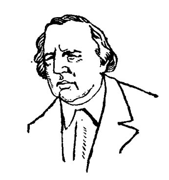
维尔斯特拉斯是一个埋头苦干的人。他在业余数学研究中获得的成果很少发表，因此在很长一段时间里，很少有人知道他的工作。他所获得的很多结果，后来又有其他数学家研究得到并发表出来了，但维尔斯特拉斯并不为优先权问题所困扰，他一心一意地致力于更深入的研究。直到1856年，维尔斯特拉斯才在柏林大学获得了一个教席，他在这里一直工作到1897年去世。维尔斯特拉斯在柏林大学给学生的讲授十分细致而有条理，赢得了日益增长的声誉。通过他在柏林大学的讲演，他过去的研究成果才第一次被数学界广泛了解，成为数学家们的共同财富。
·199·
柯西、维尔斯特拉斯以及其他一些人为重建微积分的严密基础所进行的研究，一开始就造成了巨大的轰动。在一次科学会议上，柯西提出了无穷级数收敛性的理论，根据这种理论，欧拉等十八世纪数学家们在研究无穷级数中的混乱就可以得到澄清。拉普拉斯在开完会以后，赶紧跑回家中，把自己关在屋子里，仔细地重新审阅他的名著《天体力学》，直到查明书中用到的每一个级数都是收敛的，他才松了一口气。维尔斯特拉斯的工作通过他在柏林大学的演讲而为人们所知道以后，影响更为显著，使得其他数学家一再修改自己的著作，改进书中的严密性。
和科学的每一次进步一样，微积分的严密化也不是马上就被人们普遍接受的，它需要克服传统的惰性。为了深入地揭示函数的连续性与可微性之间的关系，以及函数的各种反常性质，波尔察诺、维尔斯特拉斯、黎曼等人曾经构造了一些独特的函数，它们在直观上简直是不可思议的，于是，就被一些数学家认为是病态的、古怪的，违反了公认的法则，破坏了十八世纪古典数学的"象在天堂里一样"的优美。有一位数学家这样说，如果牛顿和莱布尼兹想到过连续函数不一定有导数——而这却是一般情形——那么微分学就决不会被创造出来。
今天，在微积分中曾经有过的混乱，以及使微积分严密化的工作所受到的种种非难，都已经成为历史。当我们在现代的微积分教科书中，看到由一个个的定义、一串串的公式和定理编织成一个严谨、完整的理论体系的时候，当然不会忘记，这里面凝聚着历代数学家们的困惑、失败、追求和创造。
- 200 -
实数理论
十九世纪重建微积分基础的最后一环，是实数理论的建立。
在这之前，数的概念早已由实数扩展到复数；实数的广泛采用，正是数学发展的基本前提之一。为什么迟至十九世纪，还需要建立实数理论呢？这里所说的实数理论，究竟是怎么回事？
回顾一下人类关于数的概念的发展，对于搞清楚上面这些问题，理解人的认识在实践中螺旋形发展的规律，是很有益处的。
原始人类在一个相当长的时期还没有学会计数。他们只是凭直觉，从整体上感受事物集合的大小，大致地判断某一类事物比另一类事物多些、少些、或者差不多，等等。
再进一步，原始人类学会了较精细一些地比较两类事物的多少，大体上采用的是一一配对的方法：捕猎兽群的时候，如果一个人对付一头猛兽，剩下有人无兽可猎，那么人就比兽多；分配猎物的时候，如果每个人都领到一件后还有猎物没有分完，那么猎物就比人多。这样，人们对于多或少的判断就准确得多了。
用小石子或绳结来计数，表明人类已经学会用某一种较固定的标记来反映各种不同事物的数量。又经过漫长的岁月，物质形态的记数标记被各古老民族的语言和文字所代替，这
·201·
才意味着人类关于数的概念脱离具体的物质形态而抽象出来了。
人类最初认识的数，就是我们今天所说的自然数。后来，人们在分配和交换劳动产品的长期实践中，又产生了分数的概念。我们知道，对负数认识得最早的是中国，不晚于公元前一世纪。零出现在公元六世纪，最早认识到零也是一个具有运算性质的数，是公元九世纪的印度数学家摩珂毗罗。到这个时候，有理数系统才基本上完成了。
\(\sqrt{2}\) 等一类无理量，是古希腊人在几何学研究中发现的，他们认识到这类量具有与有理量不可公度的性质。但是，他们认为无理量只能作为几何上的量来理解，而不是一种独立存在的数。这种认识一直到十七世纪晚期还在欧洲有很大的影响，以至许多数学家在使用无理数时显得游移和不安。古代东方民族（如中国、印度）并不认为使用无理数有什么概念上的困难，因此象使用有理数一样地使用无理数。这种认识在古代对于数学的发展是有利的，但是，对有理数和无理数在概念上不加严格的区别，随着数学在近代以来的发展，也暴露出它的理论局限性。
在数学史上，不仅对于无理数，而且还有负数、复数，都曾经在很长时间内存在概念上的困难。尽管如此，到十九世纪的时候，实数和复数都已经得到了自由的使用。但是，数学家们也越来越紧迫地认识到，仅仅满足于对这些数的直观了解，而对它们精确的逻辑结构缺乏清晰的认识，已经妨碍着数学理论的进一步发展。
于是，十九世纪的数学家们着手整顿数系的“秩序”。
1837年，首先由英国数学家哈密尔顿（1805—1865年）提
· 202 ·
出了复数的逻辑基础，它是建立在实数性质的基础上。
那么，实数的逻辑基础又是怎样的呢？
那些致力于使微积分严密化的数学家们发现，实数基础是相当不严密的。比如，为了精细地研究极限和连续函数的性质，必须建立实数连续性的理论。我们知道实数与直线上的点是一一对应的，具体地说，建立一条数轴，那么，每一个实数都可以用数轴上的一点表示，数轴上的每一个点都表示一个实数。因此，从几何直观上来说，实数的连续性，就是直线的连续性。那么，什么叫做直线的连续性呢？过去人们认为，所谓连续，就是任何两个点之间必定存在一个另外的点。但是，很容易证明，任何两个有理点之间都必定存在另一个有理点，而有理点却不是连续的，因为有理点之间还存在无理点。
恩格斯说过：“我们只能在我们时代的条件下进行认识，而且这些条件达到什么程度，我们便认识到什么程度。”
到了十九世纪下半叶，微积分的严密化已经进行到相当程度，建立实数系的逻辑结构问题受到数学家们的正视，而无理数被认为是主要的难点。解决这个问题的条件基本成熟了。十九世纪七十年代，主要是德国的三位数学家——维尔斯特拉斯、康托和戴德金，几乎同时提出了各自的实数理论。
这几种实数理论在实质上是十分类似的。他们都是从有理数出发，逻辑地定义出无理数，进而建立起整个实数系的性质。因此，严格地说来，他们提出的是无理数的理论。
这三位数学家提出的无理数理论，现在采用得最多的是有理数的“戴德金分割”。戴德金（1831—1916年）是高斯的学生，在大学里任教达五十年。他的成就是多方面的，但以“戴德金分割”最为著名。
• 203 •
建立实数基础的最后一步是对于自然数的逻辑处理。现在广泛采用的公理化处理方法，是意大利数学家皮亚诺（1858—1932年）在1889年完成的。
皮亚诺提出了关于自然数的五个公理。他用 \(∈\) 表示属于，\(N_0\) 表示自然数集，\(a^+\) 表示后继于自然数 \(a\) 的下一个自然数，比如：\(2=1^+, 3=2^+\)。这五个自然数公理是：
（1） \(1∈N_0\)。
（2）每一个自然数 \(a\) 都有一个后继者 \(a^+\)。
（3） \(a^+≠1\)。
就是说，1不是任何自然数的后继者。
（4）由 \(a^+=b^+\) 推出 \(a=b\)，
就是说，如果 \(a\) 与 \(b\) 的后继者相等，那么 \(a\) 与 \(b\) 也相等。
（5）如果自然数的一个集合 \(S\) 包含1，并且对于属于 \(S\) 的任一数 \(a\)，都包含 \(a\) 的后继者 \(a^+\)，那么，\(S\) 就包含全部自然数。
在数学中经常采用的数学归纳法这种证明方法，就依赖于最后的这个数学归纳法公理。当我们要证明一个与自然数有关的性质 \(P\) 时，如果我们可以证明性质 \(P\) 对于数1成立，并且在假设性质 \(P\) 对于数 \(k\) 成立的情况下，可以证明 \(P\) 对于 \(k^+\) 也成立，那么，根据公理（5），我们就证明了 \(P\) 对于任何自然数都成立。
在这五个公理的基础上，皮亚诺建立了我们熟悉的所有的自然数性质。从自然数的性质出发，就可以逻辑地定义负整数、零和有理数。正如我们在前面已经知道的，从有理数出发，又可以定义无理数。
·204·
所以，对于自然数的逻辑处理完成以后，实数系的理论基础就完备了。
人类关于数的概念是由自然数扩充到有理数，继而扩充了无理数而完成实数系，再继而扩充到复数的。十九世纪的数学家们做了与这种历史顺序相反的工作：最先建立起复数的逻辑结构（从实数出发），继而建立起实数的逻辑结构（从有理数出发定义无理数），最后才是建立起自然数的逻辑结构，并且从自然数出发定义出整数，再定义出有理数。这是人类对于数的认识的一次循环，但它不是重复，而是发展，是达到了更高的抽象，是认识的深化。正如毛泽东同志指出的：“实践、认识、再实践、再认识，这种形式，循环往复以至无穷，而实践和认识之每一循环的内容，都比较地进到了高一级的程度。这就是辩证唯物论的全部认识论，这就是辩证唯物论的知行统一观。”
·205·
奇特的“无穷大”世界
在旅游旺季，一家旅店所有的房间都住满了客人。这时又有一位旅客来这儿投宿，旅店经理抱歉地说：“对不起，我们这儿已经客满，只好请您另找一家旅店。”
类似这样的事情，在我们日常生活中是司空见惯的。
现在，让我们把这家旅店搬到数学的无穷大世界。在那里，这家旅店设了无穷多个房间，所有的房间也都客满了，这时也有一位旅客来投宿。旅店经理彬彬有礼地说：“好，请您稍等片刻。”他立即通知服务员调整房间，让 1 号房间的旅客移到 2 号房间，2 号房间的旅客移到 3 号房间，…… n 号房间的旅客移到 n+1 号房间，……等等。于是，新来的旅客就住进了已经腾出来的 1 号房间。
过不多久，又来了一个庞大的旅游团，它有无穷多个团员，也要在这家旅店投宿。旅店经理依然笑容满面地说：“没有问题，可以安排。”他让 1 号房间的旅客移到 2 号房间，2 号房间的旅客移到 4 号房间，3 号房间的旅客移到 6 号房间，…… n 号房间的旅客移到 2n 号房间，……等等。现在，所有的单号房间都空出来了，新来的无穷多位客人可以住进去了。
听了这个故事，你是不是会觉得这是个不可思议的“天方夜谭”呢？
在我们日常生活里，当然找不到一家设有无穷多个房间的大旅店，也没见过有无穷多个团员的超级旅游团。这个故
·206·
事只是一个例子，说明在数学的无穷大世界里，具有与我们在普通算术中所熟悉的性质大不一样的另一类奇特的性质。
上面的故事，据说是德国数学家希尔伯特讲的。但最先发现无穷大世界奇特性质的，是另一位德国数学家康托(1845—1918年)，他是在研究无穷集合的时候发现这类奇特性质的。
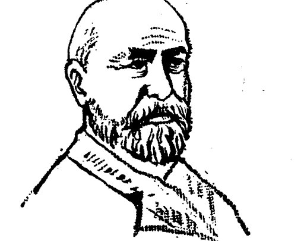
集合，已经成为现代数学中最基本、最重要的概念之一，康托是集合论的奠基者。他在柏林大学求学时，受数学家维尔斯特拉斯的影响，由学工程转到研究数学，二十四岁时成为哈雷大学的讲师。
康托对无穷集合的研究，产生于建立实数理论的需要。用集合论的观点来看，实数的全体构成一个集合，叫实数集，它是一个无穷集合；有理数的全体也构成一个集合，叫有理数集，它也是一个无穷集合。我们知道，实数集包含着有理数集。这两个集合虽然都是无穷集合，但是它们却具有不同的性质，比如说，把它们在一条数轴上表示出来，那么，有理点虽然是稠密的（就是说，任何两个表示有理数的点之间总有另一个表示有理数的点），但不是连续的，有理点之间有“缝隙”，在这些“缝隙”中填充着无理点；而实数就不仅是稠密的，而且是连续的，它们之间再没有“缝隙”可以填充别的数了。怎样清晰地区分具有不同性质的无穷集合呢？康托深刻地研究了这一类问题。二十九岁那年，他发表了关于无穷集合理论的第一篇
- 207 -
革命性论文，以后，又就集合论发表了一系列重要论文。
康托指出，无穷集合具有一种异常的性质：全体可以和部分一样多！
这是怎么回事？
我们知道，对于有限的集合，我们可以一个一个地数，来确定集合所包含的元素的多少。比如说，不大于 10 的自然数组成一个集合，它包含 1,2,3,4,5,6,7,8,9,10 十个自然数；不大于 10 的偶数也组成一个集合，它包含 2,4,6,8,10 五个偶数。显然，后一个集合是前一个集合的一部分，这两个集合所含元素的多少不一样，部分是少于全体的。
无穷集合既然含有无穷多个元素，一个一个地数当然是不可能的，那怎样比较两个无穷集合所含元素的多少呢？
让我们回想一下，当原始人还没有学会计数的时候，他们曾经用一一配对的方法来比较两类事物的多少：如果两类事物正好一一配对，那么它们就是一样多；如果当一类事物全部配完以后，另一类事物还有没配出去的，那么，后者就比前者多。这种配对的方法，在数学上叫做“一一对应”。
为了比较两个无穷集合所含元素的多少，康托重复了原始人的做法。比如，全体奇数和全体偶数之间可以建立如下的一一对应关系：

由这种对应关系，我们清楚地看出偶数和奇数正好一样多。
可是，我们也可以建立起如下的一一对应关系：
· 208 ·
1 2 3 4 5 6 7 ⋯ n ⋯
↑ ↑ ↑ ↑ ↑ ↑ ↑ ↑
↓ ↓ ↓ ↓ ↓ ↓ ↓ ↓
2 4 6 8 10 12 14 ⋯ 2n ⋯
从而发现所有的偶数竟与所有的自然数也是一样多，而前者显然是后者的一部分！
明确了这样一种比较无穷集合的“大小”的法则，我们就可以理解前面那个旅店的故事了。只要把每一个数都当作是该号数房间的房客，那么，按照上面第二种对应关系表，就把旅店中所有的老房客都安排进偶数号房间，从而把奇数号房间腾出来了，这样，也就可以再住进无穷多个新房客。
既然对于无穷集合，部分可以等于全部，那么，是不是所有的无穷集合都是同样“大小”呢？
正如我们在前面看到的，无穷集合也是千差万别的。为了区别它们，康托给全体自然数组成的集合取了个名字，叫“可列无穷集合”，简称“可列集”。凡是与自然数集同样“大小”的集合，都是可列集，比如全体奇数或全体偶数组成的集合，就是可列集。康托证明了，有理数集合也是一个可列集。
无穷集合除了这一类可列集外，还有不可列的集合。比如，在实数集与自然数集（或实数集与有理数集）之间，就不能建立起一一对应的关系，而我们知道，自然数集和有理数集都是实数集的一部分，因此，实数集是比可列集更大的一种无穷集合。又因为实数与直线上的点是一一对应的，因此，就通常把直线上的点集作为这一类无穷集合的代表，并且根据直线上的点是连续的这一重要性质，把这一类集合称为“连续统”。
本来，“无穷大”并不是一个确定的数，但是，由于无穷大是有层次的，于是，康托就创造了一类“超限数”（超越有限数
· 209 ·
的意思）来表示“无穷大”的“大小”。无穷集合所含元素的多少，叫做这个无穷集合的基数。康托证明了，可列集的基数在无穷集中是最小的，用一个希伯来字母表示，记成 \(\aleph_0\)（读作阿列夫零），这就是说，\(\aleph_0\) 是最小的超限数。连续统的基数用英文 continuum（连续统）的第一个字母 \(C\) 表示。正如前面介绍过的，实数集比可列集大，就是说，\(C > \aleph_0\)。
在 \(C\) 和 \(\aleph_0\) 这两个超限数之间，还有没有其他的超限数呢？康托猜测：没有了。康托的这一猜测，就是著名的“连续统假设”。这个假设是 1874 年提出来的，后来在 1900 年被希尔伯特在“巴黎演说”中列为二十三个数学问题中的第一个问题。
康托关于无穷集合和超限数的研究，对二十世纪的数学产生了极其巨大的影响。可是，他个人的遭遇却是十分不幸的。康托深知自己的研究是违背传统的，他曾这样说过：“我十分清楚，在采取这样一步后，我把自己放到了关于无穷大的流行观点以及关于数的性质的公认的意见的对立面去了。”但是，他相信自己的研究是数学向前发展的必然结果，因此，他表示：“我希望在这样的情形下，把一些看起来是奇怪的思想引进我的论证中是可以理解的，或者，如有必要的话，是可以谅解的。”
康托的这些话说得多么诚恳啊！可惜，他发展数学理论的一片至诚之心并没有得到所有人的理解和谅解。对他的思想采取敌视态度最厉害的，是当时柏林大学的教授克隆尼克（1823—1891 年）。这位教授是当时一位很有成就的数学权威，可是他只承认自然数，他有一句名言：“上帝创造了自然数，其余的一切都是人造的。”对那些他在数学上反对的人，他攻击起来十分刻薄和粗暴，当时已经德高望重的老维尔斯
· 210 ·
特拉斯和崭露头角的希尔伯特，都受到过他的攻击，而康托更是首当其冲，受到他的攻击竟达十年以上。由于他的权威地位，其他许多数学家包括一些著名数学家也都怀疑康托的研究成果。康托希望到柏林大学任教的愿望也由于克隆尼克的阻挠而一直未能实现。在巨大的精神压力下，康托在1884年患了精神分裂症，研究工作被迫中断了几年。1918年，康托病逝于哈雷精神病研究所。
可是，真理只接受实践的检验，而不会听任权威的摆弄。康托的新理论很快就在数学的进一步发展中得到了重要应用，显示出它巨大的科学价值。伟大的数学家希尔伯特高度赞誉康托的理论是“数学思想的最惊人的产物”，“人类活动的最美的表现之一”，并且坚定地宣称：“没有人能把我们从康托创造的乐园中赶走！”
当数学的历史进到二十世纪以后，人们普遍地认为，康托是对本世纪数学的发展影响最大的几个十九世纪伟大数学家之一。
人类智慧的胜利
代数、几何、数学分析（微积分），这是三个最基本的数学部门。十九世纪的数学家们，不仅复兴了几何学，重建了微积分基础，同时也在代数学的领域内获得了巨大的进展。
远在十六世纪，探求一元高次方程的求根公式，就已成为代数学中最引人瞩目的问题。当斐拉里轻松地求出四次方程的求根公式后，人们曾非常乐观地估计，马上就可写出五次、六次、甚至更高次一元方程的求根公式了，然而，这个答案似乎近在咫尺的问题，却激动了一代又一代的数学家。
三百年的时间过去了，尽管数学家们绞尽了脑汁，却没有取得丝毫进展。高次方程的求根公式，依旧象一座坚固的堡垒，蛮横地挡在人们前进的道路上，用法国数学家拉格朗日的话说，它"是在向人类的智慧挑战"。
拉格朗日也是求根公式的热心探索者。他曾创造出一些新的研究方法，企图一举摧毁这座堡垒，可是，他的"新式武器"，对五次以下的方程是颇具威力的，对更高次的方程依旧无能为力。
拉格朗日也失败了。在痛苦的反省中，他终于悟出了他之所以失败的道理。原来，人们憧憬的高次方程求根公式，竟是海市蜃楼般的幻景，于是，拉格朗日大声疾呼：用代数运算解一般高次方程是不可能的！
这是一个明智的转变，此后，数学家的思路，就不再经常
·212·
受到求根公式的愚弄了。
1824年，也就是拉格朗日去世后十一年，人类的智慧终于赢得了胜利，年轻的挪威数学家阿贝尔（1802—1829年）异军突起，证实了拉格朗日的真知灼见。
阿贝尔出生在挪威一个贫困的乡村牧师家庭，十五岁时，在老师洪保（1795—1850年）的耐心教育下，才激发起研究数学的强烈愿望。阿贝尔从十六岁起，自学了许多当代名家的数学著作，开始认真研究高次方程的求根公式。有一次，他认为自己已经得到了这些公式，高兴得不得了，可是不久，他沮丧地发现，他的证明有一个不小的毛病。
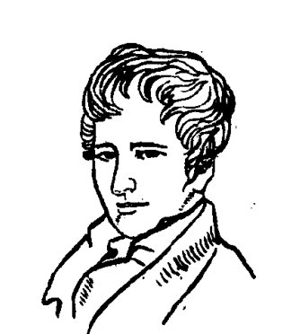
阿贝尔继而刻苦钻研拉格朗日、高斯等人的著作，深入发掘前辈数学家的宝贵思想，终于创造出一套崭新的数学方法。运用这些方法，他证明了一般五次以上的代数方程，它们的根式解法是不存在的，也就是说，除了特殊情况以外，对于五次以上的代数方程，不管你将它的系数组成什么样千奇百怪的根式，都绝对不会是这些方程的求根公式。
阿贝尔取得了巨大的突破，可是，由于这个伟大的发现是由一个默默无闻的年轻人作出的，竟然没能得到当时数学界的承认。阿贝尔起先将论文寄呈给高斯，由于未能引起高斯的重视，他失去了去哥廷根的热情；接着，他又将论文呈送法国科学院，著名的数学家柯西和勒让德竟然宣称：这份手稿是不值一读的！柯西把论文搁置在一旁，不久就忘却了。
伟大的数学发现作出了，因为疏忽和偏见，它默默无闻地
·213·
呆在科学院的故纸堆中。阿贝尔为此四处奔波，不仅收效甚微，而且连一份合适的工作也没找到。1829年，在贫困和疾病的折磨下，阿贝尔默默无闻地去世了，死时还不到二十七岁。在生前，他没有享受到他应当享有的巨大荣誉。
其实，阿贝尔没有彻底解决求根公式问题。为什么有些特殊高次方程的根能用根式表示呢？如何去精确地判断这类方程呢？阿贝尔曾打算作进一步的研究，但他未能实现自己的想法，转而去研究超越函数了。超越函数是人们很少认识的一类函数，其中有些函数最后是以阿贝尔的名字命名的，他在这方面的成就也远远超过了年迈的勒让德——那个宣称他的论文不值一读的数学家。
科学的接力棒总会往下传的，就在阿贝尔去世的前一年，一位更年轻的数学家伽罗华(1811—1832年)，继承阿贝尔未竟的事业，完成了最后的冲刺。
伽罗华出生在法国巴黎附近的一个小村庄里。他是近代最伟大的数学家之一，也是历史上最年轻的著名数学家，他的成就比阿贝尔大，经历却比阿贝尔更为坎坷、悲惨，生命也更为短促。
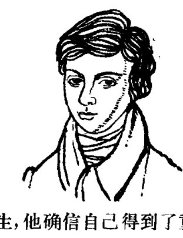
1828年，伽罗华还是一个中学生，他确信自己得到了重大的成果，于是把自己的观点写成论文，送交当时拥有许多第一流数学家的法国科学院审查。负责审查伽罗华论文的是柯西和波阿松，柯西不相信一个中学生能够解决高次方程求根公式问题，这样，伽罗华的论文遭受到与阿贝尔论文同样的命运，被搁置在一旁。
·214·
1830年，伽罗华将重写的论文再次送交法国科学院，这次是由著名数学家傅立叶主审，可是，六十二岁的傅立叶就在那年去世了，伽罗华的论文再次给丢失了。
伽罗华的稿件一再被丢失的情况，引起了波阿松的同情，他劝伽罗华再写一份。1831年，波阿松亲自审查了伽罗华的论文，四个月的时间过去了，波阿松仍然看不懂论文，他只好签署了自己的意见：完全不能理解。
要理解伽罗华的论文确非易事，因为其中蕴涵着许多崭新的数学方法。不过，既然连波阿松这样著名的学者都难以弄懂，看来伽罗华应该把论文写得更通俗一些，但是，他没有时间了……
伽罗华在大学里是位激进的共和主义者，积极参加资产阶级革命活动，因而受到路易—菲利浦王朝的迫害。1831年5月，伽罗华被捕了，获释后不久，他又因“莫须有”的罪名于7月14日再次被捕入狱，直到1832年春天，由于监狱里流行传染病，伽罗华才得以出狱，这时，他已被折磨得象一个五十多岁的老头了。就在伽罗华出狱后的不久，一个反动军官要求与伽罗华决斗。
伽罗华意识到决斗可能带来怎样的结果。在决斗前夕，他匆忙将自己的数学观点扼要地写在一张字条上，请他的朋友转交给当时的大数学家们。伽罗华自豪地写道：“你可以公开请求雅可比或者高斯，不是对于这些定理的真实性而是对其重要性表示意见。”
1832年5月31日凌晨，不满二十一岁的伽罗华含愤去世了，但是，他已把最珍贵的精神财富留给了人间。
1846年，法国数学家刘维尔（1809—1882年）得到了伽罗
华的手稿，将它们发表在自己创办的数学杂志上，并写了序言向数学界推荐，伽罗华的伟大数学创造才逐渐为人们所知道。在此之前五年，人们也已找到阿贝尔的手稿并公开发表了。
应用伽罗华理论，不仅一般高次方程求根公式问题得到了彻底的解决，而且阿贝尔定理、三大几何作图难题、高斯关于正多边形作图的定理等著名的数学难题，都成了明显的推论或者简单的练习题。人类的智慧再次显示了强大的威力。
更重要的是，伽罗华理论的出现，改变了代数学的面貌，使得代数学由研究方程论渐渐转向研究代数结构本身，向着新的方向发展。到十九世纪末期，伽罗华开创的数学研究，形成了一个重要的数学分支——近世代数学。又叫做抽象代数学。
在不合理的社会制度下，阿贝尔和伽罗华过早地离开了他们眷念的数学研究工作。他们的生命都很短促，象一闪即逝的流星，但是，他们发出的巨大光亮，却在人们的记忆中获得了永生。
深刻的哲学总结
十九世纪的数学家们给二十世纪留下了丰富的数学遗产，他们对推动现代数学的发展是功勋卓著的。
但是，在十九世纪还有一件对未来的数学研究具有深远指导意义的工作，却是当时的数学家们无力承担，而由两位并非以数学家著称的科学巨匠完成的。
这两位科学巨匠，就是无产阶级的革命导师马克思(1818—1883年)和恩格斯(1820—1895年)。
马克思和恩格斯把毕生的精力贡献给了无产阶级的解放事业，他们怎么有兴趣和精力研究数学呢？

马克思和恩格斯在青少年时期，都没有表现出特殊的数学兴趣和才能。马克思在大学学的是法律，恩格斯连中学都没有读完。推动他们进行数学研究的，是无产阶级革命事业的需要。
马克思是在研究政治经济学的同时，对数学进行系统的学习和研究的。他从十九世纪五十年代开始，一直到生命的最后时刻，耗费了三十多年的心血写作马克思主义政治经济学的经典著作《资本论》。在这个过程中，马克思感到，要深刻
·217·
揭示资本主义的经济规律，必须对资本主义社会错综复杂的经济现象进行周密的考察和分析，包括运用数学工具进行定量的分析。1858年1月，马克思在给恩格斯的信中说：“在制定政治经济学原理时，计算的错误大大地阻碍了我，失望之余，只好重新坐下来把代数迅速地温习一遍。算术我一向很差，不过间接的用代数的方法，我很快又会计算正确的。”这时，马克思已经有四十岁了，但他仍毅然决定从中学的初等数学开始，系统地学习和研究数学。
马克思当时所处的环境是多么险恶啊！他到处受到反动政府的迫害，过着动荡、贫困的流亡生活。贫困和疾病，使他有几个孩子在童年时代就不幸夭折，在他的晚年又夺走了他夫人的生命，他自己也受着日益恶化的胸膜炎和肺炎的折磨。然而所有这一切，都不曾使马克思离开自己的战斗岗位，也不曾使他停止对数学的系统研究。在艰难的生活环境和繁忙的革命活动中，马克思与数学结成了密友。
为了系统地学习和研究数学，马克思演算了大量的习题，阅读了牛顿、莱布尼兹、泰勒、欧拉、达朗贝尔、拉格朗日等大数学家的原著，研究了初等数学和微积分的发展史，还写了大量的札记和论文。
通过刻苦学习，马克思很快掌握了微积分，并且熟练地把数学运用于政治经济学的研究。在《资本论》中，他把数学方法与历史的、逻辑的方法有机地结合起来，第一次科学地揭示了资本主义社会的经济规律，从而得出了社会主义必然要代替资本主义的科学结论。在资本主义社会里，工人的工资总是被资产阶级说成是工人的全部劳动所获得的合理报酬。马克思通过对资本主义条件下工资形式的深入分析，特别是定
·218·
量的分析，揭露了隐蔽在工资形式背后的资本家剥削工人的秘密。他在1868年1月给恩格斯的一封信中谈起这一发现时，特别提到："在高等数学中常常可以找到这样的公式，这对我很有帮助。"
在十九世纪，数学虽然取得了奇迹般的进步，但是它的应用主要是在物理学方面；自然科学的其他学科如化学、生物学等，或者只运用一些简单的初等数学知识，或者还没有运用，更谈不上把数学应用于社会科学领域了。马克思把数学方法有效地应用于政治经济学研究并显示出数学方法的重要作用，成为在社会科学领域运用数学方法的开拓者。他还以深刻的洞察力断言：一门科学只有当它达到了能够运用数学时，才算真正发展了。马克思的这一思想，为数学的应用指示了十分广阔的领域。
马克思和恩格斯超越同时代最优秀的数学家，对数学研究作出的独特的、具有深远指导意义的伟大贡献，更在于他们站在辩证唯物主义的理论高度，对数学的内容、方法和本质，作了深刻的分析，为数学的进一步发展提供了科学的理论基础。
数学和自然科学的发展，从来就是与不同哲学思想之间的斗争交织在一起的。中世纪的宗教神学，曾经严重地窒息了数学和自然科学的进步，如果没有"文艺复兴"时代的思想解放，如果没有哥白尼首先在天文学上向神权挑战，那么，就不会有后来数学和自然科学的大踏步前进；变量数学的先驱者笛卡儿，同时也是一个具有鲜明的唯物主义倾向的哲学家；微积分的发明人之一、经典物理学的巨匠牛顿，在自然科学的研究上也是个唯物主义者。但是，从"文艺复兴"以后，直到十九世
- 219 -
纪的唯物主义，占统治地位的是机械唯物论的自然观，把自然界看作是绝对不变的，如果要说变化，也只是物体的机械运动和数量的增减，而这种变化的原因，不在事物的内部而在事物的外部，是由于外力的推动。这种形而上学的自然观，不能把唯物主义贯彻到底，最终还是给唯心主义留下了地盘——伟大的牛顿为了说明行星运动的起因，不得不乞助上帝的“第一次推动”；当唯心主义者猛烈抨击微积分的“神秘”时，数学家的自卫还击显得十分无力，因为他们无法解释，为什么微积分能够通过数学上极不严密的方法而得出完全正确的结论。
到了十九世纪，数学和自然科学的一系列新成就，越来越清晰地揭示出物质世界本来的辩证法。自然过程的辩证性质以不可抗拒的力量迫使人们不得不承认它，因而只有辩证法能够帮助自然科学战胜理论困难。从自然界中找出辩证法的规律并从自然界里加以阐发，这样一个伟大的历史任务，就落在马克思和恩格斯的肩上。
系统地阐发辩证唯物主义的自然观，主要是由恩格斯完成的。恩格斯的这一工作，集中反映在《自然辩证法》和《反杜林论》这两部光辉著作中。这两部著作，都是在马克思的支持和帮助下写作的。恩格斯写《反杜林论》用了两年时间，写《自然辩证法》用了十余年时间，而且由于马克思逝世，他为了倾注全力整理和出版马克思的《资本论》第二、三卷，并领导国际工人运动，不得不在《自然辩证法》的写作计划还没有完成的情况下，停止了这部著作的写作，留下了近二百篇珍贵的论文、札记与片断的手稿。这些手稿和马克思的《数学手稿》，都是在他们逝世以后很久，才整理和发表出来的。
恩格斯在《反杜林论》第二版序言中说：“马克思和我，可
• 220 •
以说是从德国唯心主义哲学中拯救了自觉的辩证法并且把它转为唯物主义的自然观和历史观的唯一的人。可是要确立辩证的同时又是唯物主义的自然观，需要具备数学和自然科学的知识。”为此，恩格斯经过了一个艰苦的“脱毛”过程。德国化学家李比希说：“化学正在取得异常迅速的成就，而希望赶上它的化学家们则处在不断脱毛的状态。不适于飞翔的旧羽毛从翅膀上脱落下来，而代之以新生的羽毛，这样飞起来就更有力更轻快。”恩格斯十分赞赏这个生动的比喻。在1870年以后的八年当中，年过五十的恩格斯把大部分时间用来“尽可能地使自己在数学和自然科学方面来一个彻底的‘脱毛’”。

恩格斯在数学方面的“脱毛”，是在马克思的帮助下进行的。
这时，马克思对数学已经达到了精通的程度。利用写作《资本论》的间隙时间，马克思对微积分进行了独立的、深入的研究，《数学手稿》中的大部分重要论文都是在这个时期写作的。当时，马克思还不了解柯西、维尔斯特拉斯等数学家重建微积分基础的工作，但他在自己独立的数学研究中，对微积分的基本概念及其历史发展，都提出了很多独到、精辟的见解。马克思深刻地揭示了数学家们用纯数学方法处理的微积分基本概念的辩证法实质。
马克思精深的数学知识及其独到的理论见解，对恩格斯帮助很大。1881年，就在马克思夫人燕妮生命垂危的时候，马
• 221 •
克思还忍着悲痛，把自己的《论导函数概念》和《论微分》这两篇重要论文，誊清以后寄给了恩格斯。年过六十的恩格斯花了一整天仔细研究马克思的论文，甚至在睡梦中也念念不忘——他梦见自己把领扣交给一个青年人去求微分，那个青年人却拿着领扣溜掉了。
在这个艰苦的“脱毛”过程中，恩格斯对数学和自然科学的一系列新成就进行了广泛的考察，作了辩证唯物主义的概括，第一次系统地论述了辩证唯物主义的自然观；关于数学的起源和本质，也第一次得到了正确的说明。
恩格斯指出：“数学是从人的需要中产生的：是从丈量土地和测量容积，从计算时间和制造器皿产生的。”他又说：“纯数学的对象是现实世界的空间形式和数量关系，所以是非常现实的材料。这些材料以极度抽象的形式出现，这只能在表面上掩盖它起源于外部世界的事实。”针对当时还环绕在微积分中运用的各种数量（微分、无穷小等等）周围的“神秘”观念，恩格斯强调指出，恰恰相反，“自然界对这一切想象的数量都提供了原型”。恩格斯的这些论断，划清了在数学起源和本质问题上唯物主义与唯心主义的界限。
物质世界普遍存在的对立统一和质量互变的辩证规律，正是数学的哲学基础。恩格斯进一步发挥了马克思在研究微积分中阐述的辩证思想，指出：“变量的数学——其中最重要的部分是微积分——本质上不外是辩证法在数学方面的运用”。精辟地作出了“数学：辩证的辅助工具和表现方式”的科学论断。
现在，离马克思和恩格斯当年作出这些论断，时间已经过去了一百年。一百年来数学发展的一系列崭新成就，丰富和
· 222 ·
发展着辩证唯物主义的自然观，同时也充分地证明了马克思主义创始人所阐述的辩证唯物主义自然观的基本原理，仍然对现在和未来的数学研究具有巨大的指导意义。

• 223 •
世纪更迭之际
1900 年 8 月，来自世界各国的二百多位数学家在巴黎举行了第二届国际数学家代表大会。一篇题为《数学问题》的演说，使这届大会成为数学史上的一个重要里程碑，为二十世纪数学的发展揭开了光辉的第一页。
8 月 8 日，是大会开幕以后的第三天。这天上午，一位中等身材的中年人登上了会议厅的讲台。也许是长期从事脑力劳动的缘故，他已经过早地秃顶了，前额显得格外开阔，高高的鼻梁上架着一副眼镜，清澈的蓝眼珠在镜片后面射出热情而坚定的光芒。
他用德语声调平缓地开始了演说：
“我们当中有谁不想揭开未来的帷幕，看一看在今后的世纪里我们这门科学发展的前景和奥秘呢？我们下一代的主要数学思潮将追求什么样的特殊目标？在广阔而丰富的数学思想领域，新世纪将会带来什么样的新方法和新成就？”
在这世纪更迭之际，这位演讲人对展现在面前的新世纪充满了热情的向往。然而，这时的数学已经成长为一株分枝繁茂、覆荫广阔的大树，试图对展望新世纪数学发展的方向提出具有指导性的意见，是一件多么困难的任务啊！由讲台上的这位演讲人担负这样的任务，是再恰当不过的了。演讲人大卫·希尔伯特，早已成就卓著，在国际数学界赢得了广泛的尊敬和信赖。
· 224 ·
希尔伯特 1862 年 1 月 23 日出生于德国的哥尼斯堡。提起这座古老的城堡，人们就会联想到数学史上有名的"七桥问题"。这个问题虽然早已被欧拉解决，但是家乡人民探索数学奥秘的浓厚兴趣，想必也给童年时代的希尔伯特留下了深刻的印象。

希尔伯特八岁开始上学。那个时候的学校，开设的大多是一些要求死记硬背的课程，数学和自然科学的知识教得很少。希尔伯特学习很勤奋，尤其爱好数学，因为他觉得学习数学用不着死记硬背。他总是在课后认真消化老师讲的内容，把新概念理解清楚，达到关上书本，自己就能把书上讲的公式、定理推导出来。希尔伯特在晚年曾经幽默地说："也许我从来就是被认为有健忘的特殊天赋。就因为这个缘故，我才研究数学的。"
1880年秋季，希尔伯特带着品学兼优的评语考进了哥尼斯堡大学。他父亲希望他学法律，而他坚持自己的选择，报名学了数学，从此踏上了献身数学科学的艰苦道路。
二十年过去，弹指一挥间。当他登上巴黎国际数学家代表大会的讲台时，他的身份是德国哥廷根大学的数学教授。在这二十年里，希尔伯特处在数学研究的前沿阵地上，在当时最活跃的几个数学分支里都作出了第一流的成就；尤其是他对于几何基础的研究，系统地提出了形式化的公理方法，引出了一场对现代数学的发展影响深远的"公理化运动"。所以，巴黎代表大会的筹备机构就在 1899 年年底向希尔伯特发出了
- 225 -
一份邀请，请他在大会上作一个主要发言。
希尔伯特接到邀请以后，立即写信向他的两位老朋友征求意见。他与这两位老朋友的真诚友谊，是在哥尼斯堡大学求学时建立起来的。闵可夫斯基是一个比希尔伯特小两岁的犹太青年，赫尔维茨是比他们年长几岁的青年副教授。每天下午五点钟，三个好朋友准时相会在苹果树下，一边散步，一边热烈地讨论数学问题。这样的"数学散步"持续了八年，希尔伯特觉得自己从中学到了比钻在教室或图书馆里死啃书本要多得多的东西。几十年之后，希尔伯特在追念老友时深情地说："我们的科学，我们爱它超过一切，它把我们联系在一起。在我们看来，它好象鲜花盛开的花园。在花园里，有许多踏平的路径可以使我们从容地左右环顾，毫不费力地尽情享受，特别是在身旁有意气相投的游伴。我们也喜欢寻找隐秘的小径，发现许多出人意料的新奇美景，当我们向对方指点出来，我们就更加欢乐。"
对数学的热爱，使这三个好朋友在分别以后也依然心心相印。因此，希尔伯特在准备巴黎演说的时候，首先想到的就是征求老朋友的意见。本来，有很多课题可供希尔伯特选择，但他在闵可夫斯基的支持下，偏偏选择了展望新世纪数学发展方向这个最困难的课题。希尔伯特的演说稿写成以后，闵可夫斯基和赫尔维茨是最早的读者，并且对初稿的修改、甚至对发表演说的方式，都提出了十分中肯的意见。
希尔伯特的巴黎演说的核心内容，是二十三个重要而困难的数学问题，其中包括著名的康托"连续统假设"，算术公理的相容性问题，数论中的黎曼猜想和哥德巴赫猜想等等。希尔伯特认为，这些问题是新世纪的数学家们应当努力解决的。
- 226 -
他说：
“某类问题对于一般数学进展的深远意义以及它们在研究者个人的工作中所起的重要作用是不可否认的。……正如人类的每项事业都追求着确定的目标一样，数学研究也需要自己的问题。正是通过这些问题的解决，研究者锻炼其钢铁意志，发现新方法和新观点，达到更为广阔和自由的境界。”
在十九世纪下半叶，一位德国数学家埃·杜波瓦—雷蒙的一句话曾经流行一时：“我们无知，我们将永远无知！”恩格斯在《自然辩证法》中对这种“不可知论”的观点进行过深刻的批判。在巴黎数学家代表大会的讲台上，希尔伯特站在数学家的科学立场，也以一段激动人心的话对“不可知论”作出了断然的回答：
“在我们中间，常常听到这样的呼声：这里有一个数学问题，去找出它的答案！你能通过纯思维找到它，因为在数学中没有‘不可知’。”
巴黎演说很快就在国际数学界引起了轰动。二十三个数学问题，就象西方民间故事中的魔笛所发出的甜蜜的笛声，“诱惑了众多的老鼠”，跟着希尔伯特“跳进数学的深河”；对解决其中的任何一个问题作出贡献，都被认为是在数学家行列中取得了“荣誉等级”。第一个跻身于“荣誉等级”的数学家，是希尔伯特的学生、当时年仅二十二岁的麦克思·戴恩，他在当年就给出了第三问题的解答。迄今，大约有一半的问题已经获得解决，也还有几个问题仍在严峻地考验着数学家们的意志和智慧。我们大家都很熟悉的是，在摘取列入第八问题的哥德巴赫猜想这颗“皇冠上的宝石”的数学竞赛中，中国数学家走在了世界的前列。
• 227 •
1950年，著名数学家魏伊尔受美国数学会的委托，对二十世纪上半叶的数学历史进行总结。他写道，完成这项任务可以很简单，只要依据希尔伯特巴黎演说中提出的问题，指出哪些问题已经解决、哪些问题已部分解决就够了——“这是一张航图”，过去五十年间，“我们数学家经常按照这张图来衡量我们的进步”。
魏伊尔说这段话的时候，希尔伯特已经去世七年了。希尔伯特生命的最后几年是在纳粹法西斯统治的魔影下度过的。他以自己大半生的心血参与培植了举世瞩目的“哥廷根数学学派”，其中有好些优秀的数学家都是犹太人。希特勒上台以后，指挥纳粹党徒对犹太科学家进行疯狂的迫害，激起了希尔伯特强烈的义愤，他曾经愤怒地说：“德国人民不要很长时间就会认识希特勒的真面目，然后把他的脑袋丢进厕所！”可是，他的崇高声望并不能给那些优秀的犹太科学家提供保护，学生和同事中的犹太人被迫纷纷逃离德国，甚至他早年最心爱的一名学生在逃离德国以后，仍然没有能从纳粹的魔爪下幸免于难。就这样，盛极一时的“哥廷根学派”衰落了。1943年2月14日，八十一岁的希尔伯特孤独地病逝在哥廷根的寓所里。这个消息越过战云密布的欧洲战场传开以后，世界各国的数学家都崇敬地向这位老人遥致深切的悼念。
今天，数学的发展早已大大超越了巴黎演说所涉及的领域，生长出更多的分支学科和边缘学科。但是，洋溢在巴黎演说中的“希尔伯特精神”，这位数学大师对未来的热情召唤，依然鼓舞着今天和未来的数学家们继往开来，开拓前进——
“数学的有机的统一，是这门科学固有的特点，因为它是
- 228 -
一切精确自然科学知识的基础。为了圆满实现这个崇高的目标，让新世纪给这门科学带来天才的大师和无数热忱的信徒吧！”

· 229 ·
数学基础的危机
一座巍峨壮丽的大厦拔地而起。当你步入大厦，拾级而上，你就可以观赏到一间间厅堂里金碧辉煌、各具异彩的万千气象，可以领略到一处处庭院里云蒸霞蔚、曲径通幽的梦幻般美景；你也会看到，建筑工人们还在日日夜夜紧张地施工，仿佛要把这座大厦盖出九重天外……
突然，有人发现：大厦的基础出现了裂痕！
这时，大厦的建设者们，还有正在这里留连盘桓的观赏者们，会是一种什么心情啊！
二十世纪刚刚开始的时候，正在拔节上升的数学大厦，就发生了这样的危机。
人们发现数学的基础上有裂痕，已经不是第一次了。就在刚刚过去的那个世纪，人们已经为修补和重建数学的基础作过两次重大的努力。
一次是在非欧几何诞生以后，人们这才发现，几千年来被奉若神明的欧几里得几何，原来并非关于现实世界空间形式的绝对真理，把几何学建立在依赖直观感觉的基础上是不可靠的。经过数学家们半个多世纪的努力，希尔伯特在1899年完成了《几何基础》一书，提出了几何的公理化体系，并且最终把几何建立在算术理论的基础上（确切地说，是把公理化几何体系的无矛盾性建立在算术公理无矛盾性的基础上）。
另一次是重建微积分基础的工作。也是经过半个多世纪
· 230 ·
的努力，数学家们才为微积分建立起一种三个层次的梯级理论基础：上面一层是极限理论，中间一层是实数理论，最下层是集合论。
当二十世纪的第一缕春光给数学大厦披上彩霞的时候，大厦的建设者们为上一世纪重建数学基础的成就感到欢欣鼓舞。著名数学家庞加莱(1854—1912年)在巴黎的数学家代表大会上宣布：“现在我们可以说，绝对的严密已经达到了。”当然，基础还须加固，希尔伯特在这次大会的著名演说中，把集合论中的“连续统假设”和算术公理的无矛盾性列在二十三个数学问题之首，期待着新世纪的数学家去解决它们。
然而，仅仅事隔两年，数学大厦就受到了一次强烈地震的冲击，人们再一次发现，大厦的基础出现了更大的裂痕，甚至有人认为，整个数学大厦的基石有崩塌的危险！
这次危机，是由“罗素悖论”引起的。
所谓“悖论”，粗浅地说，就是一种在逻辑上自相矛盾的言论。悖论古已有之，无论中外，都曾有人兴致很高地研究过这类问题。我国古代关于一个卖矛又卖盾的人的寓言，说的就是一个有名的悖论。但是，这类悖论并没有对数学造成威胁。
这一次的悖论，是英国数学家和哲学家罗素(1872—1970年)发现的。把它通俗化，就成为一个“理发师悖论”：
一个乡村理发师，声称他只替村子里所有那些不自己刮胡子的人刮胡子。这就发生了一个疑问：他替不替自己刮胡子呢？如果他不替自己刮胡子，那么按照他的声明，他就应当替自己刮胡子；可是如果他替自己刮胡子，那么同样按照他的声明，他又不应当替自己刮胡子。于是，这位理发师陷入了自相矛盾的窘困境地。
• 231 •
如果说“理发师悖论”不过象一则笑话，他只须撤销自己原来的声明，就可以从自相矛盾中解脱出来的话，那么“罗素悖论”就不是这么容易避开的了。“罗素悖论”是从已被数学家所公认的集合论中，按照数学家通用的逻辑方法找出来的：
按照集合论的观点，任何确定的对象归在一起，就构成一个集合；构成集合的那些确定的对象，叫做这个集合的元素。所有的自然数构成一个自然数集合 \(N\)，1、2、3 等等自然数都是 \(N\) 的元素，0 不是自然数，所以 0 不是 \(N\) 的元素。
集合可以按下面的方法分成两类：有一类集合，它本身不是自己的元素，比如自然数集 \(N\) 当然不是一个自然数；有一类集合，它本身就是自己的元素，比如由一切建筑群组成的集合，同样是建筑群，因此它本身也属于这个集合。
任何一个集合，应当都是可以明确地判断出它或者是属于第一类，或者是属于第二类的，非此即彼。现在，我们就把所有属于第一类的集合归在一起，当然又构成一个集合，不妨把这个集合记成 \(A\)。
现在要问：\(A\) 这个集合属于哪一类？
如果 \(A\) 属于第一类，就是说，\(A\) 本身也是自己的元素，那么，它应当属于第二类；如果 \(A\) 属于第二类，那么 \(A\) 当然不能属于第一类，也就是说，\(A\) 本身不是自己的元素，而这样，根据第一类集合的定义，\(A\) 又应当属于第一类。
于是，\(A\) 这个集合就象那位理发师一样，被弄得无所适从了。
数学家们刚刚把数学奠立在集合论的基础上，突然发现，集合论竟包含着“罗素悖论”这样的矛盾。被弄得无所适从的，与其说是悖论中的那个集合 \(A\)，不如说是正在数学大厦上施
- 232 -
工的数学家们。著名数学家弗雷格（1848—1925年）在他的《数学基础》第二卷后记里写道："对一个科学家来说，最难过的事情莫过于：当他完成他的工作时，一块基石突然崩塌了。当本书的印刷接近完成时，罗素给我的一封信就使我陷入这样的境地。"希尔伯特指出："必须承认，由于悖论的出现而造成的形势是难以忍受的。只要设想一下，每个人曾经学过、教过并在数学中加以应用的定义和演绎的方法，从来都被认为是真理和必然的典范，现在却导致了荒谬；如果连数学思维都是不可靠的，那还能到哪里找到真理和必然性呢？"
数学基础的危机，对二十世纪初的数学家是一次严峻的挑战，但同时也就蕴含着数学理论取得突破性进展的可能。数学家们开始探索数学推理在什么情况下有效，什么情况下无效，数学命题在什么情况下具有真理性，什么情况下失灵，于是，就产生了一门新的数学分支——数学基础论。
数学家们对数学基础的研究存在很大的分歧，形成了三大流派：以罗素为代表的一派，主张把数学奠基在逻辑上，认为数学不过是逻辑的延展，他们被称为逻辑主义派；以布劳威尔（1881—1967年）为代表的一派，认为数学的基础只能建立在构造性的程序上，他们的名言是"存在必须是被构造"，被称为直觉主义派；还有一派叫形式主义派，人们通常把希尔伯特当成这一派的代表人物。希尔伯特主张把数学化归为各种形式公理系统，后来有人把希尔伯特的观点强调为：数学本身就是一堆没有内容的形式系统。
从本质上说，这三大派有一个共同的弱点，就是在哲学上都陷入了唯心主义。尽管他们强调的观点各有不同，但都把数学看成是"纯理性思维的产物"、"自由选定的符号"、"纯粹心
·233·
智的构造”等等，没有认识到数学的抽象仍然来源于客观物质世界，数学的对象是现实世界的空间形式和数量关系，是非常现实的材料。正由于唯心主义哲学蒙蔽了他们的智慧，因此他们提出的修补数学基础的各种方案，都各有其片面性和不能贯彻到底的地方。
但是我们也应当看到，数学基础三大流派的研究工作，也是取得了不少积极成果，对二十世纪数学的发展起了推动作用的。一个直接的结果，就是推动了数理逻辑的巨大发展。数理逻辑这门学科的历史可以追溯到莱布尼兹，一次较大的发展，是十九世纪英国数学家布尔（1815—1864年）提出了逻辑代数（也叫布尔代数），而数理逻辑的全面跃进，还是在三大流派的工作推动下实现的。这门学科使数学进入了逻辑学这门研究人类思维形式的规律性的科学领域，它与计算技术、电子技术的结合，又带来了二十世纪最重要的一次技术革命——电子计算机的诞生。
二十世纪已经过去一大半了。当年“罗素悖论”给数学大厦造成的地震，并没有摧垮这座人类历经数千年创造出来的宏伟建筑，而是引出了一系列有意义的新创造。今天，这座大厦的建设者们继续在日日夜夜地紧张劳动，基础仍然需要加固，楼层也仍然还在升高……
- 234 -
无孔不入
在数学王国形形色色的常数中，\(\pi\) 是人类的老朋友了。还是在十分遥远的古代，人们在测量圆田的面积、计算陶器的容积等实践中，就开始与 \(\pi\) 打交道。它真是无所不在——任何一个圆的周长与直径的比值都等于这个常数，于是数学家专门为它取了 \(\pi\) 这个名字（这个名字是英国数学家威廉·琼斯在 1706 年给它取的）；然而，它又是那么难以捉摸——直到公元五世纪中叶，才由我国数学家祖冲之求出它精确到小数点后七位的不足近似值和过剩近似值，这个纪录在世界上保持了一千年之久；现在，人类有了电子计算机，已经把 \(\pi\) 求到了一千万位小数，也仍然是近似值。
从祖冲之运用“割圆术”求 \(\pi\)，到今天人类用电子计算机求 \(\pi\)，在这一千多年间，人们创造了许多求 \(\pi\) 的方法。你可知道，在这些方法中，有一种很奇特的、投掷小针的实验方法吗？
这个方法很简单，不过需要实验者有足够的耐心。你可以找一根粗细很均匀的小针，另外，在一张白纸上画许多平行线，每相邻两平行线间的距离，都等于针长的两倍。作好这些准备，就可以开始实验了：一次次地让小针从任意的高处落到白纸上，记下掷针的次数（比如有 \(N\) 次）和针与平行线相交的次数（比如有 \(n\) 次）；耐心地多掷许多遍（一般来说，掷的次数越多越好），你就可以计算 \(\pi\) 的近似值了：
- 235 -
这是什么道理呢？
让我们先来分析一下这种掷针实验的特点吧！
第一个特点，在每一次实验中，我们只能断言无非有两种结果，针要么和平行线相交，要么不相交；至于在每一次实验中到底会出现什么结果，是完全无法预先断定的，也就是说，某种结果（比如说针与平行线相交）的出现具有偶然性。
第二个特点，这种实验可以大量重复地进行。
在我们中、小学所学的数学中，对这种现象还没有研究过。我们已经研究过的数学问题，结论都是确定的：在匀速直线运动中，已知速度 \(v\)，我们就可以求出经过时间 \(t\) 所运动的位移 \(S=vt\)；对于圆形，已知半径 \(r\)，我们就可以求出面积 \(A=\pi r^2\)；甚至对天体的运行，天文学家们也能准确地预言何年何月哈雷彗星会重返太阳系，何年何月太阳系会九星联珠。这一类现象，我们统称为确定型现象。对研究这类现象，人类已经创造了许多强有力的数学工具。
可是，正如我们在分析掷针实验的特点时所看到的，世界上还存在着一类不确定的现象。这样的例子可以举出许多：随意地让一枚质地均匀的硬币落到地上，你能断言一定是正面朝上吗？在一只口袋里装进黑白围棋子各 \(a\) 粒，让你从中摸出 \(b\) 粒（\(b\leqslant a\)），你能肯定它们都是同色的吗？当你到一个新的班级去，你能肯定这个班上至少有一个同学和你生日相同吗？……在这些例子里，我们都不能预先知道确定的答案。这一类现象，称为随机型现象，它们都具有与掷针实验相同的特点。
既然在随机现象中，对每一个别的场合，我们都不能预先断言它的结果，那么，数学对它们是不是就无能为力了呢？
- 236 -
恩格斯曾经说过：“在表面上是偶然性在起作用的地方，这种偶然性始终是受内部的隐蔽着的规律支配的，而问题只是在于发现这些规律。”
人们经过长期的实践发现，虽然随机现象在个别场合下的结果是不确定的，但在大量重复的情况下却表现出明显的规律性。比如，反复多次地投掷一枚硬币，就会发现正面朝上与背面朝上的情形大约各占一半。一般来说，如果某一随机现象重复试验的次数是 \(N\)，其中出现某一种结果的次数是 \(n\)，那么在 \(N\) 相当大的情况下，某一结果出现的频率 \(\dfrac{n}{N}\) 通常是在某个常数附近摆动。这种规律性叫做统计规律性。
在数学中，有一门分支是专门研究随机现象的数量规律的，这门分支就叫概率论。
早在十七世纪中叶，就开始了概率论的早期研究，在十八、十九两个世纪中，概率论得到了较大的发展。著名数学家帕斯卡、费尔马、雅各·伯努利、拉普拉斯等，都对概率论的发展作出过贡献。
我们在前面提到的掷针实验，是法国科学家布丰在 1777 年提出来的，因此掷针实验又叫布丰实验。概率论对布丰实验有这样的结果：如果针长为 \(l\)，每相邻两平行线间的距离为 \(a\)，当掷针次数 \(N\) 相当大时，针与平行线相交的次数 \(n\) 与 \(N\) 的比值（即针与平行线相交的频率）大约等于 \(\dfrac{2l}{\pi a}\)，即
于是可以得到
- 237 -
在我们前面提到的布丰实验中，\(a = 2l\)，所以 \(\pi \approx \dfrac{N}{n}\)。1901 年，有一个叫拉泽雷尼的人，用一根长度 \(l = \dfrac{5}{6}a\) 的针投掷了 3408 次，其中针与平行线相交的次数为 1808，于是求出 \(\pi\) 的实验值为 3.14159292。这个结果是相当精确的。
通过设计某种适当的随机试验，来确定某些我们感兴趣的量，这正反映了概率论奇特的风貌。
在两百多年的概率论研究中，还得出了许多引人入胜的结果。就拿生日问题来说吧，利用概率论的知识可以求出，在一个五十人的班级中，至少有两个同学生日相同的可能性竟高达 97%。这就是说，有极大的可能，你会在某一天同时收到两个（甚至两个以上）同学的生日请帖；当然，这还得你与同学们都相处得很友好才行。
虽然概率论历史悠久，但它的严谨的理论基础还是在本世纪才建立起来的。在"巴黎演说"中，希尔伯特把建立概率论的公理化体系列入他的第六个问题。1933 年，苏联年轻的数学家柯尔莫哥洛夫（1903— ）提出了概率论的公理化系统。从那以后，概率论的理论研究得到了更大的发展，并且在科学技术、国民经济的许多领域都获得了广泛的重要应用，是数学的一个十分活跃的分支。
还要提到的是，从本世纪六十年代以来，数学家们又开辟了另一种新的数学领域——研究所谓模糊型对象的模糊数学。模糊型对象是一种新的类型，既不同于确定型对象，也不同于随机型对象。比如说"老人"这个概念，就属于一种模糊型
- 238 -
对象：多大年龄才算老人？是没有一个明晰的界限的。80岁的人可以说是老人，30岁的人当然不能算老人，那么50岁的人算不算呢？这就只能由各人主观地确定了。对这一类问题，过去是无法在数学上进行定量地研究的。
1965年美国的查德教授提出了"模糊集合"的理论，打那以来，模糊数学也得到了很大的发展，并且在工程技术、生物学、医学、语言学、心理学、经济学，特别是在电子计算机和人工智能等方面，得到了重要的应用。
从研究确定型现象，到研究随机型和模糊型现象，数学真是"无孔不入"啊！
• 239 •